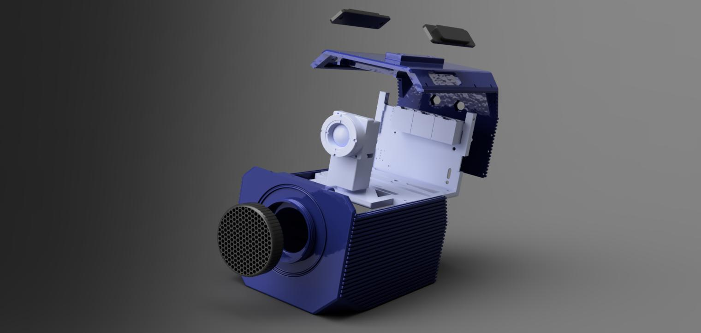

Highly skilled in 3D modeling, mold design, product design, and mechanical systems using SolidWorks, AutoCAD, Creo, and Fusion 360. Specialized in creating precise designs for manufacturing and prototyping.
Welcome

ABOUT ME
Mechanical Engineer
Expert in simulation software such as ANSYS and OpenFOAM for conducting Finite Element Analysis (FEA) and Computational Fluid Dynamics (CFD). Proficient in using various principle models to analyze complex systems.

Proficient in CNC programming and generating tool paths using Autodesk Fusion 360 Manufacturing workspace, optimizing machining processes for efficiency and precision.

Experienced in designing and analyzing mechanical systems, including components, structures, and complete systems, with a strong ability to integrate and evaluate mechanical designs.

Intermediate experience with FDM, SLS, and SLA 3D printers for rapid prototyping, capable of producing accurate and functional prototypes for testing and development.

Proficient in writing technical articles on design and manufacturing, and experienced in tutoring Design for Manufacturing (DFM) and Design for Assembly (DFA) principles, along with other mechanical engineering topics.
Transforming ideas into engineered solutions.
Tools
ANSYS
OpenFOAM
SolidWorks
Fusion 360
Paraview
AutoCAD
Keyshot
Microsoft Word

Microsoft Excel
Microsoft Visio
Projects


Dust Collector Plant
The dust collector plant is designed to separate dust particles from the air in various manufacturing workspaces. It consists of two stages of separation. The first stage is the pre-separator, which filters out particles with a diameter of up to 5mm (such as wood chips and papers). The second stage consists of a bag filter tube, where purification is done for dust particles of 5 microns, resulting in minimal dust emission into the air. The total components for this dust collector plant design include 2 pre-separators, 3 centrifugal fans, and 1 filter bag tube. Other components such as ducts, valves, nuts, and bolts are also included. The design is NDA-signed, so 2D and blueprint documents are kept confidential. For a more detailed view of the components, please contact me via email.
Drone
The drone was designed based on the client's requirements. It was initially created in Autodesk Fusion 360 for 3D printing, starting from a conceptual sketch as per the client's request. Subsequently, the model was 3D printed and then re-designed for Design for Assembly (DFA). Please note that the model does not include any wiring, electrical components, or circuit boards. The design consists of three main body parts: the head body, the upper mid body (connecting the head to the mid-section where all the other components are located), and the mid-section component, further divided into three bodies for ease of assembly - the four wings of the drone and the rest of the body. Lastly, there's the tail body. The four wings connected to the mid-section are identical, each containing one propeller and one motor. Button head hex screws were used as fasteners.


Headband-for patients with Hydrocephalus
This project involves the design of a smart medical headband specifically created for patients with hydrocephalus. In collaboration with a UK-based client for research purposes, I focused on developing the physical design of the headband, which integrates crucial components like a flow sensor to monitor cerebrospinal fluid (CFS) movement and a pressure sensor to measure brain pressure. These sensors are designed to work together, providing real-time data to help manage the CFS drainage system effectively for those affected by hydrocephalus. My contribution focused on the structural aspects of the headband while leaving the electrical wiring and coding for further development. The design thoughtfully includes space for an actuator system to adjust the shunt's pressure based on sensor inputs. Although the headband has not been tested yet, it represents a significant conceptual model for future research


Prosthetcic Knee Brace
The project involves designing custom, low-cost 3D-printed knee braces. First, the user's leg is 3D scanned, and then the body is converted into a surface body and offset by 0.25mm to ensure a perfect fit without tightness. Next, the offset surfaces are thickened to create a solid body of uniform thickness. Autodesk Fusion 360 was used for the entire design process. Polycentric spur gears were utilized as a joint mechanism to allow smooth mobility, and the pad heights were determined through research and then extruded. Additionally, slots were incorporated for the straps.
Holder-c992 Snow remover-modified
The project's goal was to design and prototype a snow plow and blower vehicle that looks and functions like a modified version of the Holder C992, with specific adjustments to meet the client's requirements. The design was inspired by the Holder C992, known for its reliability and versatility in snow removal tasks. Detailed photos of the Holder C992 were used as a reference, and dimensions were obtained from the company's official catalog to ensure accuracy to the original design. The model was scaled down for prototyping purposes, making it easier to handle and test. This scale model will serve as a proof of concept before manufacturing the full-sized version. The interior of the vehicle was designed to be hollow to accommodate future electrical components. The vehicle model was created using advanced surfacing techniques in SolidWorks, resulting in a smooth, aesthetically pleasing exterior that aligns with the modernized look requested by the client.
Minibike
The goal of this design project was to develop a mini bike specifically for children under 13 years old, to be showcased in Wonderland. The client provided the concept and specified dimensions and materials. Cast iron was chosen for its durability and strength, ideal for the frame and other critical components. The design process started with creating the chassis. The mini bike's wheels were designed to be 3D printed, providing flexibility in size and design while keeping the bike's overall weight low. The mini bike is equipped with the Tillotson TPP-225Rs racing engine, a four-stroke engine that delivers over 15 horsepower, offering power while remaining manageable for young riders. The bike represents a carefully balanced combination of power, durability, and safety.


Phone holder
This project focuses on designing a robust and versatile phone holder capable of accommodating devices ranging from an iPhone 5 to an iPad. The holder features adjustable clips to securely grip devices of various sizes, an adjustable angle for optimal viewing, and a movable arm for height adjustment. The design is tailored to offer flexibility and durability, making it suitable for a wide range of use cases. The holder is primarily constructed using 3D-printed components, including the mid holder, base, base joint, tray holder, holding tray, and clip assemblies. The only non-printed parts are the fasteners, which include two M6 bolts and nuts acting as the axle for the adjustable angle mechanism, and eight M4 bolts paired with four M4 heat inserts. The heat inserts are embedded into the base, while the remaining M4 bolts are used for direct mounting. This design approach not only ensures a sturdy and stable structure but also allows for easy assembly and adjustment.


Size Adjustable- flower Pot
This project involved designing a unique, adjustable-size flower pot to meet the client's requirement for a planter that can expand as the plant grows. The pot features a single opening at the top for planting, ensuring simplicity in design while accommodating the plant's need for more space over time. The innovative design allows the pot to expand from an initial diameter of 450 mm to a maximum of 550 mm, providing additional room as the plant's root system develops. The design includes a base plate and a base plate cover, which form the foundation of the pot. The expandable structure is made up of 16 wall plates that connect with each other via rubber inserts placed between slots. This flexible connection method enables the pot to gradually expand while maintaining structural integrity. The expandable nature of the pot allows it to grow along with the plant, ensuring that it remains functional and aesthetically pleasing as the plant matures.


Adjustable Laser Mount Design for CO2 Laser Tube
This project focused on designing a custom mount mechanism to hold a red laser in front of a CO2 laser tube for alignment purposes. The client's requirement was to secure the mount around the body of the laser tube, rather than at the end, due to space constraints. The design needed to ensure that the centerline of the laser mount and the CO2 laser tube remained concentric for precise alignment. The mount was designed as a two-piece hinged structure that clamps securely onto the laser tube. The mount includes 3 to 4 threaded holes to allow for fine adjustment of the laser's alignment. This ensures the laser can be precisely positioned, maintaining optimal alignment with the CO2 laser beam. The design also accounted for the specific dimensions provided by the client, with the laser tube having a diameter of 55 mm in its largest section and a reduced diameter of approximately 23 mm at the end. The mount was created in Fusion 360, adhering to the client's preference for easy future modifications. Overall, the final design met the client's requirements, providing a practical and adjustable solution for mounting the red laser securely and accurately in front of the CO2 laser tube.


Cube Speaker
In this project, I was tasked with creating a 3D model for a cube speaker inspired by the traditional Japanese "Sashimono" woodworking technique. The client sought a unique design where the cube, approximately 8.5 cm on each side, would be composed of two interlocking parts. The challenge was to ensure that the design allowed sufficient internal space to house a 7 cm speaker while also providing room for other electronic components. The project involved careful consideration of the internal structure to securely hold the speaker in place, while maintaining the aesthetic and functional integrity of the cube. After reviewing the client's requirements and potential constraints, we agreed on a design approach that balanced the internal space with the external dimensions
Tab/Laptop Stand
The universal stand was designed to accommodate both laptops and tablets, featuring adjustable height and angle, as well as collapsibility for portability. The design needed to be aesthetically pleasing and suitable for 3D printing. It consists of three main bodies: the top plate, mid holder, and base plate. There was also a weight constraint, and the design included pattern cuts for air ventilation for the laptops and tablets. The hinge and lock mechanism used a pin joint."


Rose mold for fast curing epoxy resin
In this project, I was approached by a client who needed modifications to an existing rose mold file that they had purchased online. The original mold had several issues, including the inability to draft properly after molding and the lack of space for a parting tool bridge. To address these concerns, I recreated the mold model in SolidWorks, conducting a thorough draft and undercut analysis to ensure proper functionality. The initial three-part mold design was re-engineered into a five-part mold, allowing for more efficient assembly and disassembly. Screw holes were added with precise reference to the existing mold, ensuring compatibility with the clients tooling. To further enhance the quality of the final product, a vacuum bag was employed during the prototyping phase to eliminate bubble formation. The final prototype, shown in the accompanying image, successfully utilized a fast-curing epoxy resin with a curing time of approximately two hours,


W310 Rev B camera
For the W310 Rev B project, I designed a robust, weatherproof camera enclosure that checks all the boxes for the client's needs. The design includes two main enclosure bodies with cooling fins, a central frame that holds everything securely, and various slots and mounts to fit components like the modem, X10 sensor, and other connectors. To ensure durability and weather resistance, the lens housing was designed with an O-ring seal, and the lid screws tightly into the enclosure to keep out the elements. The rear panel has custom-sized holes for connectors, and the internal frame mounts securely to the base from the inside after assembly, with extra fixing points for stability. The result is a solid, weatherproof enclosure thats ready to protect the W310 Rev B camera in any environment.

Boson T21 Rev A
The Boson T21 Rev B is a compact version of the W310 Rev B camera, designed with a tighter fit due to the reduced height of the Boson sensor. The primary changes involve accommodating the smaller sensor with a T1 mount, while maintaining the overall proportions of other components. The design features a two-part enclosure, a lens slot, a T-mount, a lens cap, a SIM cover for the modem, top inserts, and a camera mount. The slots for the modem, Boson sensor, and other connectors were customized to fit the specific requirements of the electrical parts. The result is a sleek, space-efficient enclosure that ensures a secure and functional fit for the Boson T21 Rev B camera.


Advanced Pyramid Puzzle
asdafawsacawdasd


Multi tool-HVAC
asdafawsacawdasd


Filter bottle
asdafawsacawdasd

The rolling robot-BB8's body
asdafawsacawdasd


Badge Reader Project-(detecting gas leaks)
asdafawsacawdasd
New message
Articles

Mastering Precision: Exploring the Power of CNC Machining Services for Custom Parts

Causes and Prevention of Flash in Injection Molding: Key Insights

Mastering Undercuts in Plastic Injection Molding: Design, Challenges, and Solutions

Mold tech vs Yick sang

Cold runner Molds Vs Hot runner Molds: Injection Molds

Overmold Manufacturing: A comprehensive guide

Multi cavity Vs Family injection Molds

Decoding Cleanroom Specifications: A Comprehensive Guide

PPO - Plastic Injection Molding

Capabilities of Polyamide + glass fiber reinforced injection molding

Prototype tooling vs injection molding

Detail breakdown of the cost of injection molding for businesses

Precision Mold manufacturing for electronic components

Precision Mold Manufacturing for Life Science Devices

Plastic Injection Molding for PPE

Selecting the right Plastic Tooling Partner for Product Development

Selecting the right Plastic Mold Maker for OEM Manufacturing
Mastering Precision: Exploring the Power of CNC Machining Services for Custom Parts
1. Introduction to CNC machining
Computer Numerical Control (CNC) machining has revolutionized manufacturing by making machining operations seem straightforward and efficient. This subtractive process involves removing layers of material from a job piece to produce customized parts using a variety of materials, such as metals, plastics, wood, glass, foam, and composites. CNC machining is particularly valuable in industries like telecommunications and aerospace, where higher tolerances are required.


Fig 1: Introduction to CNC machining
2. Importance of CNC Machining in Custom Parts Production
CNC machining has gained immense popularity in sectors such as automotive, aerospace, medical, manufacturing, and defense due to its numerous advantages:
(a) Optimal Productivity:
CNC machines are computerized, reducing reliance on manpower once set up is complete. This automation leads to higher productivity compared to other machining methods.
(b) Agile Technology:
CNC machines facilitate the production of sophisticated custom parts at a reasonable cost. They also allow for design changes based on customer requirements without significant expense.
(c) Fast Production:
The use of specialized software enables the rapid fabrication of customized parts, reducing manual labor and ensuring consistency for low-to-medium volume production.
(d) Cost-Effective:
Lower labor costs, increased productivity, and timely deliveries make CNC machining a cost-effective choice.
(e) Safer Production:
With minimal human interaction during the fabrication process, CNC machining ensures a safer production environment.
(f) Ideal for Prototyping
CNC machining excels in rapid prototyping, allowing designs to be tested on a small scale and refined before full-scale production.
(g) Compatible with Diverse Materials
CNC machines can work with various materials, including metals, plastics, ABS, ceramics, foam, wood, and composites.
(h) Maximizes Efficiency and Accuracy
CNC machining ensures high efficiency and accuracy, minimizing human error.
3. Understanding CNC Machining
For a visual explanation, refer to this video: https://www.youtube.com/embed/v4jwVdFsoGo
The step-by-step process of CNC machining involves:
1. Creating a CAD model with specifications like tolerance, construction lines, and threads.
2. Converting the CAD model into a CNC-compatible format using CAM tools such as AutoCAD or Fusion 360.
3. Starting the machining process by attaching the required cutting tools.
CNC machines use a microprocessor to control the tool, with G-code and M-code programming languages providing information about feed rate, spindle speed, cutting tool, and coolant flow. The machine's control unit processes this data, creates motion commands, and ensures accuracy through feedback signals.

Fig 2:Schematic Representation of control unit in CNC
There are various types of CNC machines, including milling machines, lathes, routers, plasma cutters, electric discharge machines, and laser cutters.
4. Key Considerations in CNC Machining
a. Material Selection for CNC Machining
The selection of materials impacts the whole process of machining; its entire lifecycle including prototyping, production, defects, repairs etc. Identifying the material requirements, exploring potential materials, and then choosing the most suitable material are key considerations in ensuring best product outcomes.

Bet-Fit CNC materials and their properties
The selection of the right material for CNC machining projects involves considering several important factors such as:
1) Application : Different application require different kinds of material properties. Some application may require high ductility, whereas some may require brittleness, some may require high strength, and some may require greater toughness and so on. Aluminum is used in the aerospace industry as it has high strength-to-weight ratio.
2) Operating conditions : Materials may react differently in different operation conditions such as temperature variations, exposure to chemicals, UV radiation, water contact, and flame resistance. Proper understanding of the effect of environment conditions with the materials is required.
3) Dimension / Tolerance : Industries like aerospace require dimensionally stable components with precise tolerances. The materials those are malleable, ductile, properties that make them machine-able are preferred in these industries.
4) Electrical Conductivity : Some applications may require the material to have high conductivity while some process may require them to have insulating properties. For excellent conductivity, materials like copper, silver can be used and for insulating properties, PTFE (polytetrafluoroethylene) may be chosen.
5) Physical Appearance : Some customers may prioritize the aesthetics of the finished production as their major requirement. Depending on your customer's desire, maintaining the physical appearance and focusing on secondary finishing operations may also be essential.
6) Cost : Whatever a customer is paying for the product, it should be worthwhile of their time and money. Materials with better properties and failure resistance are expensive. Careful evaluation of the toughness, strength, hardness, wear resistance, corrosion resistance etc. is necessary to determine if a material can serve as a cost-effective alternative.
7) Availability : Proper research regarding the availability of the materials is to be done before finalizing the material. A material can have everything your process requires, but if it is not available abundantly, that material has to be replaced with one that is available to you locally or in some easy, indirect ways.
b. Design Considerations for CNC Machining
1) Inner Edges : While dealing with inner edges, a vertical corner radius should be of at least 1/3rd of the cavity depth. Slightly larger corner radius results in higher surface finish quality.
2) Thin Walls : If the wall thickness is decreased, it causes the decrement of stiffness of material. This in turn causes vibrations to increase which results in higher errors. Recommended wall thickness values are
| Materials | Wall Thickness |
|---|---|
| Metals | 0.8mm |
| Plastics | 1.5mm |
3) Holes : According to design recommendations, flat-bottom holes should be avoided as much as possible. To make deeper holes, specialized drill bits (minimum diameter of 3 mm) are employed.
4) Smaller Features : Similar to the flat-bottom holes, micro-machining (process of creating cavities and holes having diameter of less than 2.5 mm) is recommended to be avoided unless absolutely required.
5) e) Chamfers & Fillets : Chamfer edges are recommended to be at a standard 45 angle unless some other angles are absolutely necessary. For fillets, the radius of interior fillets is recommended to be higher than 1/3rd of the depth of the cavity for preventing tool breakage.
c. Quality Control in CNC Machining
In order to maintain quality by ensuring the production of defect-free products, dimensional accuracy and quality, mitigating risks and costs, and enhancing productivity, quality control is of absolute importance that can be carried out using following processes.
1) Customer communication : In a manufacturing business, customers have to be our number one priority. Communicating with them about their needs and demands, keeping them happy with quick contact after receiving a customer inquiry and sending samples is a main requisite in this field.
2) Understand the design of the product : After receiving the CAD drawings, engineers responsible for CNC machining should thoroughly evaluate the design, understand the product specifications, and double check all the details before initiating manufacturing process.
3) Product and service : The machinist should keep in mind that the main goal is to provide the customers better and unique product with reasonable pricing. From the procurement process to inspection and testing, all procedures play important role in ensuring the top notch quality of the products and services.
4) Verification of purchased products : To detect the visible effects, the inspector inspects all purchased products.
5) Process inspection : Process inspection can occur at any point along the manufacturing and production cycle. It is done to assure quality and ensure timely delivery of finished orders.
6) Final inspection : During the final quality control (QC) inspection, only products that pass the final inspection procedure can be packaged and dispatched to the customers. Documentation of all the inspection and testing findings is done during this process.
4. Choosing a CNC Machining Service for Custom Parts
When selecting a CNC machining service, consider:
1) Cost and Turnaround Time : The service should fit within the project's budget and timeline.
2) Manufacturing Capability : Evaluate the vendor's history, customer reviews, and capabilities.
3) Communication : Ask potential vendors about their experience, turnaround times, materials, tools, and additional services.
4. Future Trends
a) Use of Plywood in Laser Cutting
Creation of geometric patterns and etch designs on wood is possible nowadays, all thanks to CNC laser cutting techniques that helps in maintaining the strength, flexibility and durability of milled wood.

Fig 4: Laser cutting wood
b) BoXYZ
BoXYZ machine is the one that combines two technologies of 3D printing and CNC machining. It is an all-in-one device that integrates a CNC mill, a laser engraver, and a 3D printer. Because of its versatility in work, it is tremendously growing in popularity.

Fig 5: BoXYZ machining
c) Machining Ice
Japan has started using CNC machines in order to create intricate sculptures out of ice. By converting vector information into G-code and M-code, CNC machines care now able to mill ice into detailed and beautiful shapes.

Fig 6: Ice machining
d) Machine Alerts on Smartphone
It is not necessary to watch the machining process to receive updates on where the process is at. A system has been developed in your smart phones that can send alerts through texts, emails. It is capable of sending the users real-time information about the condition and status of their machines.
5. Conclusion
CNC machining services have revolutionized the production of custom parts by offering unparalleled precision, speed, and versatility. This advanced technology empowers businesses and individuals to bring intricate designs to life with exceptional accuracy and efficiency. With the capability to work with a wide range of materials and provide extensive customization, CNC machining fosters innovation and facilitates the creation of high-quality, distinctive parts.
Causes and Prevention of Flash in Injection Molding: Key Insights
1. Introduction
Injection molding is a crucial manufacturing process in today's world, contributing to the production of a wide range of plastic products across various industries. Injection molding is a process of producing parts by injecting molten material into a mold. Injection molding uses a ram or screw-type plunger to force molten plastic or rubber material into a mold cavity and solidifies into the shape of the mold cavity. This process is widely used due to its high precision for complex shapes. However, there are defects that occur when molten plastic flows out of the mold during injection and solidifies. This defect, known as injection molding flash, degrades the final product's quality and requires additional steps to trim or remove the excess material. Injection molding flash is the thin layer of extruded excess material on the parting line or any other two dissimilar faces where the mold meets and forms a boundary. The removal of injection molding flash is crucial in today's plastic industries to ensure product quality and performance.
2. Understanding Injection Molding Flash
Injection molding flash, also known as flashing, is a defect in molding process which occurs when excess material, usually in a thin layer, attaches itself to the product, particularly along the parting line where two surfaces meet. This can also happen in other areas where different shapes of the mold converge. The causes of injection molding can range from incorrect flow rates and high pressures during injection to flaws in mold cavities or the equipment used. The other causes might be material viscosity, pressure, and speed variations.

Fig 1: Flash in injection molding (source :https://go4mould.com/flash-injection-molding)
Flash has a direct impact on both product quality and production efficiency. Its presence doesnt only compromise the appearance of the product but also creates functional issues. The excess material in the product surface disrupts the intended design and dimension of the part. It also obstructs moving parts affecting its functionality. An additional process called de-flashing is required to minimize the flash occurrence. This involves cutting, grinding, and breaking to remove the excess material. Additional processes mean additional time and costs of production which leads to slower production rates.

Fig 2: Quality comparison due to flashing (source: https://guanxin-machinery.com/injection-molding-flash-trouble-shooting-and-the-remedies/)
3. Causes of Injection Molding Flash
Excessive injection pressure:
Excessive pressure is a significant factor leading to the occurrence of flashing in injection molding process. When the injection speed and pressure are too high, the molten plastic gets pressurized and forces its way between the mold surfaces. This leads to the creation of flash in the form of thin layer of excess material between the mold surfaces
Inadequate clamping force:
Inadequate clamping force is the key cause of the injection molding flash in most cases. When clamping force is not enough, molding halves dont close completely. This creates gaps that allow the molten plastic to leak during the injection process. This leaked material solidifies at the parting line creating flashes. Also, uneven clamping force is also a major factor in the creation of flashes. Uneven clamping force means pressure imbalances within the mold cavity during the injection process. This imbalance permits the material to flow in the area of low clamping force as plastic tries to escape through the easiest route.
Mismatched mold halves:
An injection molding flash occurs when molten material escapes the mold cavity through the parting line. It occurs where the two halves of the injection mold separate to release the plastic part. If they're misaligned and mismatched, the gaps are formed enabling molten material to leak and form flash.
Wear and tear of the mold:
Repeated use and continuous operation of the mold over time leads to wear and tear in the mold. This creates misalignment and gaps at the parting line. The molded parts become less precise than the intended design. This kind of wear and tear permits the molten plastic to seep through the gaps during injection creating an undesired flash.

Fig 3: flash defect in toy (source: https://www.linkedin.com/pulse/12-injection-molding-defects-how-prevent-hem-mandy/)
4. Prevention and Remedies for Injection Molding Flash
Injection mold flashing is a significant concern in manufacturing process. Effective prevention of injection molding flash is necessary to ensures top product quality, higher production rate and cost savings production. This section will highlight the prevention method and remedies that manufacturers can adapt to avoid injection molding flash.
Proper maintenance of the mold:
The mold should be maintained at regular intervals to prevent flash. Proper inspection should be done over time to check if there are unwanted gaps and misalignments due to the wear and tear of the mold. Actions like cleaning and replacement of worn parts should be conducted to minimize the likelihood of flash formation.
Optimizing injection parameters:
The injection parameters like injection pressure and clamping force play a vital role in the injection process. Optimizing these parameters based on the specific material properties and part geometry can reduce the likelihood of flash occurrence and achieve uniform distribution of molten plastic. Also, the parameters like injection speed, pack and hold pressure, cooling time, gate design and location should be adequately maintained.
Ensuring precise mold halves alignment:
Misaligned mold halves create openings for the molten material to escape through it during the injection process. So, accurate alignment of mold halves is critical for flash prevention. Proper alignment means no openings in the parting line area preventing material leakage. This can be achieved using features like guide pins and bushings in the mold design, these components provide precise points of contact. Also, consistent temperature should be maintained to prevent differential in thermal expansion.
Regular Quality Checks and Testing:
Quality checks and testing is essential for the early detection and mitigation of flash-related issues. Regular checks and testing during and after the injection process can quickly identify flashes in products. Visual inspection, measurements, and other testing methods enable manufacturers to detect flash defects promptly and take immediate corrective actions.
The prevention and remedies for injection molding flash require a multifaceted approach. Along with the above methods, there are other factors to be considered to minimize the occurrence of flash like increasing viscosity of flash, adequate vent system, barrel and nozzle temperature, etc.
5. The Role of Technology in Preventing Injection Molding Flash
Advanced molding machines are essential in preventing injection molding flash in todays world. These machines are equipped with precise control systems and automated features that enhance molding accuracy. They offer improved clamping force control, ensuring proper mold closure and reduced chances of flash occurrence. Additionally, these advanced machines incorporate advanced pressure and temperature sensors that aid in real-time monitoring and adjustment of molding conditions during injection. These advanced molding machines utilize advanced servo-motor technology to provide precise control over clamping force and injection speed.

Fig 4: HIDRIVE hybrid ALLROUNDER injection molding machine (source: https://www.arburg.com/en/product-world/injection-moulding-machines/hybrid-machines/)
Software plays a critical role in flash prevention by enabling precise control over molding parameters. Process monitoring software continuously tracks key variables such as temperature, pressure, and injection speed. Moreover, software-driven simulations and virtual prototyping help in designing molds that minimize flash risks.
The VHX Series 4K Digital Microscope, by KEYENCE, can measure highly accurate 3D shapes on the submicron order and profiles of defective parts using high-definition images. Even microscopic flashes from melted plastic can be quantitatively measured and inspected, even when they occur due to distortion in the mold or insufficient clamping force. The acquisition of detailed 3D information on the defective part can aid in quickly detecting the cause, allowing for preventive measures.

Fig 5: 3d measurement and display of flash (source :https://www.keyence.com/products/microscope/digital-microscope/industries/chemistry/molding-defects.jsp)


Fig 6: Profile measurement of flash (source: https://www.keyence.com/products/microscope/digital-microscope/industries/chemistry/molding-defects.jsp)
6. Conclusion
In modern manufacturing, injection molding flash is a persistent challenge that compromises product integrity and efficiency. This defect disrupts functionality of the intended product and requires additional processing steps. However, this challenge can be overcome by maintaining molds and optimizing parameters. The case studies above highlight the importance of design enhancements, parameter tuning, and quality control. Ultimately, this article reflects the harmonious collaboration between human expertise and technological innovation in the pursuit of flawless manufacturing outcomes.
Mastering Undercuts In Plastic Injection Molding
1. Introduction
Plastic injection molding is one of the manufacturing processes that injects molten plastics into the mold and is used for large-volume production to produce thousands of identical items. Injection molding materials include thermoplastics, thermosetting plastics, metals, glasses, elastomers, etc. This manufacturing process is cost-effective while dealing with mass production as it is fast, accurate, and highly repeatable. It is used by countless manufacturers in the field of automotive, industries, consumer goods, packaging, and so on. It is considered to be a high-speed process as once a mold is fabricated, cycle time for each plastic ought to take as little as 30 seconds.
For a detailed understanding, watch this video: https://youtu.be/QeaZzjf4DBM

Fig 1: Plastic injection molding (source: https://predictabledesigns.com/introduction-to-injection-molding/)
An undercut is a feature that may or may not make the ejection of a part from the mold difficult. Power switch slots, teeth of a thread, and locking tabs are prime examples of undercuts that needs to be avoided until and unless the design is indispensable. It is true that special tooling can be used to safely eject the part from the mold even when an undercut is present. But this results in an increment of cost as well as the time frame of the project.
2. Understanding Undercuts

Fig 2: Undercut in molded part
Injection molding undercuts are the features that are not orthogonal to the mold parting line, preventing them from easily or impossible to be ejected from the mold in the direction of the mold opening. However, it also offers some benefits; the presence of undercuts in injection molding lessens or replaces the requirement of secondary processes or assembly. For example, threading into an injection molded part design introduces an undercut feature, simultaneously preventing the need to machine threads in the molded part. Also, undercuts are usually used in mold designs to add assembly features to the injection molded part for better fitting, eliminating the need for other finishing operations.


Fig 3: Various undercuts in plastic injection molding(Source: https://xcentricmold.com/undercuts-in-plastic-injection-molding/)
3. Impact of undercuts on mold design and product functionality

Fig 4: Undercuts (source: https://www.fictiv.com/articles/product-study-undercuts-in-injection-molding)
| S.N. | Impact on Mold Design | Impact on Product Functionality |
|---|---|---|
| a) | Complexity: Undercuts add complexity, cost, and manufacturing time as they need sliders, lifters, or side actions to release the part without any kind of damage. | Part Design: Undercuts can limit the design possibilities, leading designers to make compromises in the product design to accommodate the molding process. |
| b) | Parting Line: Undercuts determine the position of the parting line (boundary where mold separates into two halves). | Assembly: Products with undercuts sometimes require more assembly steps, which may result in errors and inefficiency. |
| c) | Mold Material and Construction: Due to the complexity of undercuts, higher-grade materials and precision machining may be required. | Quality and Tolerance: Undercuts affect dimensional accuracy due to distortions when the part is released from the mold. |
| d) | Cycle Time: Undercuts may result in longer cycle times, reducing overall production output. | Strength and Structural Integrity: If undercuts create thin walls or intricate geometries, the overall strength and structural integrity of the molded part may diminish. |
Undercuts are a challenging aspect of injection molding that requires careful consideration to balance design, cost, and functionality. By understanding their impacts on mold design and product functionality, manufacturers can make informed decisions to optimize the production process.
4. Types of Undercuts

Fig 5: Types of Undercuts (source: http://plasticlecturenotes.blogspot.com/2011/09/undercuts.html)
Undercuts can be of two types: external undercuts and internal undercuts.
(a) External Undercuts
These are featured on the outer surface of the molded part identified by grooves, indentations, or protrusions on the external surface of the part. For demolding and easy removal of parts with external undercuts, lateral moving elements like sliders (for simple undercuts), splits, and core pullers (for complex undercuts).
(b) Internal Undercuts
These are located on the inside contours of the molded part and are more challenging to deal with when compared to external undercuts since they consist of intricate geometries that cannot be dealt with by lateral movement alone; they need side actions or side pulls. But, even with side actions, the part may remain attached to the core which results in the need for further manual intervention or secondary processes.
5. Undercut Release Mechanisms
The dedicated techniques that are used in mold design to aid the smooth and efficient part removal from the mold cavity while still maintaining the integrity of the part and mold of a part with undercuts are called the undercut release mechanism. Some of the common undercut release mechanisms are side actions, lifters, core pullers, mold splits, hydraulic/mechanical actuators, and manual intervention. It is necessary to carefully analyze the geometry and requirement of material properties for that part to successfully select the most appropriate release mechanism. Proper selection as well as implementation of undercut release mechanisms is key to successful as well as cost-effective manufacturing processes that involve undercuts. The selection of the proper undercut release mechanism depends on:
Design Complexity
Type of undercuts
Location of undercut
Production volume
Budget/cost constraints
6. Designing for Undercuts
(a) Challenges of undercutting injection molding
Mold Complexity: Since, undercuts require the addition of slides, lifters, or core pullers; the design complexity is higher in mold design with undercuts.
Draft Requirements: Draft angles should be reduced or kept zero while dealing with undercuts, which increases the challenge to obtain smooth part removal.
Material Selection: Certain materials can stick or deform more during ejection, resulting in part damage, rejection, or increased scrap rates. Also, more issues generate with more rigid materials
Parting Line Challenges: Inappropriate placement of parting lines can lead to poor material flow that leads to molding defects like voids, incomplete filling, sink marks, flash, or difficulty in the assembly of the molded parts.
Increased Cycle Time: Undercuts can be ejected safely; however it requires additional steps like actuating side actions or lifters. This significantly increases the overall cycle time while also reducing production efficiency.
Tooling Costs: As you know, the use of additional components and mechanisms to put up with undercuts means higher costs. They are usually expensive to maintain as well.
(b) Strategies for incorporating undercuts in design
Position Parting Lines:
The parting line is the intersection plane between two molds which helps to solve the undercut problem if they are positioned properly. The reason behind this is: when the feature is divided into two halves by the parting line, the part can be easily ejected from the mold without having the need to include an undercut.

Fig 6: Parting Line Position
Utilize Side-Actions Feature:
A side-action core is an insert that slides out of the part during the ejection of the part. This feature can be automated to slide in at the same rate as the other parts of the mold and retract when they retract. The molded part is available for extraction only once the side action has been completed which helps in proper extraction. The side action core needs to be perpendicular, and this critical requirement increases the complexity of the mold design.

Fig 7: Using side action core
Use Bump Offs:
Bump offs are the best choice when dealing with elastic materials like lens covers, phone cases, etc. After the molding process is complete, this insert is removed first and then the main part is ejected normally. However, there are some restrictions while using this mechanism:
- The part must be flexible and elastic.
- The under feature must not be stiff features like corners and ribs.
- The lead angle must be between 300 and 450.
Choose Hand-Loaded Inserts:
Hand-loaded inserts are different metal pieces that the operator manually places in the mold to prevent any plastic from flowing in. This facilitates the ejection process as the operator is free to remove the piece once the cycle is over and reuse it for the next batch. This is a manual process, which means that itd naturally take more time to complete. Furthermore, the high temperatures involved create a safety concern as well. Workers use safety gloves and goggles but there is always a chance of burning yourself.

Fig 8: Hand loaded insert
Incorporate Shutoffs:
If shutoffs are used, they can eliminate the need for side action or hand inserts, reducing the cost and increasing the production rate. These are temporary obstructions that use hooks, clips, etc. in order to snap-fit and prevent the flow in particular regions of the design.
Lifters:

Fig 9: Using lifters
7. Role of software in designing for undercuts
(a) 3D Modeling and Visualization:
3D modeling software helps in creating the CAD model that helps in the visualization of parts to properly understand the complexities and challenges that can be resulted from undercuts. Then, they can plan their design strategies according to that.
(b) Draft Analysis:
Specialized software tools helps in draft analysis to ensure enough draft angles are created to aid smooth part removal.
(c) Mold Flow Analysis:
With mold flow analysis software, you can identify the flow issues that might occur and then you can alter your design strategies accordingly.
(d) Undercut Release Mechanism Simulation:
With the help of this software, you can assess the effectiveness of different mechanisms and then make the selection of one to ensure safe and effective part ejection.
(e) Toolpath Generation:
This software can create toolpaths for CNC machines that help to achieve precise mold geometry. These are specially used for machining complex mold features to facilitate their smooth part ejection.
8. Overcoming Undercut Challenges in Injection Molding
Collapsible cores and expandable cavities are specialized features that are used in undercut injection molding to ensure the safe ejection of parts.

9. Innovative solutions for undercut challenges
(a) Multi-Material Molding:
Successful ejection of parts with undercuts can be attained with the integration of different materials having varied levels of flexibility or shrinkage.
(b) Conformal Cooling:
Conformal cooling channels can improve the cooling process and check the sticking of parts with undercuts.
(c) Micro-Textured Surfaces:
To minimize friction and adhesion, micro-textured or nano-textured surfaces can be applied to mold components. It helps to ease the release of parts with undercuts. Similarly, these textured surfaces can reduce the requirement for complex release mechanisms.
(d) Magnetic Release Mechanism:
Ejection of the parts with undercuts can be promoted with the application of magnetic release mechanisms into molds. Parts can be released without the need for extensive side actions or lifters, by utilizing controlled magnetic forces.
(e) Smart Coatings and Lubricants:
Using specialized coatings or lubricants, friction can be reduced on mold surfaces to improve the release of parts with undercuts.
10. Conclusion
Summing up, despite the challenges that occur due to the presence of undercut in the mold design, proper understanding and management of undercut can lead to several benefits as well. With the proper parting line placement, the use of an appropriate release mechanism, and the use of advanced software, an undercut may prove its worth in the sense that it can be used to increase efficiency, and functionality while focusing on aesthetics. It wouldn't be wrong to say that proper play with the knowledge of undercut might even shape the future landscape of plastic injection molding.
Mold Tech Vs Yick Sang
1. Introduction
There is always some sort of imperfections on the mold surface due to various factors like injection molding parameters, different physical and chemical properties of the polymer blends, shrinkage, contamination, etc. Thats why most plastic product needs additional treatment to improve the surface finish. When it comes down to the aesthetic appeal of the product, surface finish becomes a critical aspect. Surface finish, also known as surface texture, is the overall texture of the surface determined by the three characteristics of lay, surface roughness, and waviness. Mold texturing is one of the crucial processes in manufacturing industries when producing parts made up of plastic, glass, metal, and ceramic through various molding techniques. The major advantages of mold texture are improved appearance, reduced creases, and enhanced grip. Along with the aesthetics, it also contributes to hiding imperfections like flow lines, sinks, burn scars, etc. Mold texturing also provides functional benefits like strength and enhanced adhesion to the product. The other benefits of mold texturing are improved mold release, branding, and the creation of parts that mimic natural materials like wood, rock, leather, etc. Trade associations like the Society of the Plastics Industry (SPI) and the Society of German Engineers/ Verein Deutscher Ingenieure (VDI) determine the standards and designation for the molding finish and textures. Mold-Tech (MT) and Yick Sang (YS) are the two companies that have developed their own standards
2. Understanding Mold Textures
Mold texturing is the process of creating various patterns, textures or designs on the product's surface. The purpose of mold texturing is to impart a distinct appearance to the final product during the molding process. The appearance can range from simple patterns like grains or dots to complex designs that mimic natural materials, such as wood, leather, or stone. Mold texturing plays a significant role in enhancing the visual appeal, functionality, and differentiation of molded products. Generally, Mold surface texturing is done by five common methods and they are:
(a) Sanding and Polishing
Machining operation always leaves behind some tool marks on the workpiece. So, these tool marks should be removed before transferring the workpiece to injection molding. Sanding and polishing are done to remove those marks and other surface imperfections by the technicians using rotary tools, sandpapers, and other abrasive papers. The factor to consider while sanding and polishing is not to exceed dimensional tolerances.


Fig 1: Sanding and Polishing (source : https://www.mirka.com/ , https://sandpaperamerica.com/)
(b) EDM Spark erosion
It uses graphite or copper electrode immersed in an electrolytic bath of water or oil. When the electrode receives its threshold current, it sparks against the tool wall. This process melts the targeted body and is immediately quenched by the surrounding electrolyte. Thermal shock is generated which causes the metal to fragment into tiny particles and they are flushed away. It is applicable for hard and soft metals which required very tight tolerances.

Fig 2: EDM(source : https://www.youtube.com/watch?v=9oPmFb4liVM&ab_channel=EDMPrecision)
(c) Media Blasting
High-pressure air sprays are used to transfer abrasive media (e.g., sand, beads) on molds, achieving a uniform matte or satin finish. It is controlled by skilled operators. This process is very fast, cost-effective, and minimal waste. It Allows distinct textures without overlap.

Fig 3: Media Blasting (source : https://www.cnclathing.com/guide/what-is-abrasive-blasting-or-sandblasting-cnclathing-metal-surface-finishing-services)
(d) Chemical photoetching
Photoetching applies patterns to mold tools by coating them with light-sensitive photoresist and then projecting desired patterns with UV light followed by etching in acid baths and creating textures. The process is fast, cost-effective, and fine details, but limited by undercuts and curved surfaces.
(e) Laser etching
Laser etching is the process that allows mapping textures onto curved surfaces using 3D computer modeling for precise alignment and 5-axis motion control for accurate tracking, even in undercuts. This method is very common in automobiles for consistent long-length patterns despite its higher costs and longer setup time.
3. Mold-tech (MT) mold textures

(a) History and background:
Standex Engraving Group, affiliated with Standex International Corp, is a prominent texture development enterprise. It was founded in 1955 and is headquartered in the US. Mold-Tech is a subsidiary of Standex group that has boasted 33 texturing facilities worldwide. Since entering the Chinese market in 2003, Mold-Tech China rapidly expanded, operating eight production facilities with advanced European and US equipment. Notable innovations include Digital Transfer Technology (DTT) for seamless patterns on larger molds, 5-axis laser engraving, and the Architexture Studio for exclusive texture designs. They serve various industries, including automotive, with partnerships with Volkswagen, BMW, Honda, and others. Mold-Tech China's ISO 9001:2015 certification further reinforces its leading position in the engraving industry, offering top-notch quality and after-sales service to renowned international enterprises.
(b) Overview of Mold-Tech Mold Textures
Standex Engraving Mold-Tech offers invaluable technical assistance and boasts the world's largest texture library with over 500,000 textures. Their Design Studio continually develops new textures, providing customized solutions to set products apart. Exclusive technology, like Render-Tech, enables seamless texturing on complex contoured surfaces. Mold-Tech emphasizes considerations for texture depth and draft, providing updated guidelines for optimal results. Their recommendation is 2 - 2.5 degrees of draft per .001 of texture depth

Fig 4: Draft angle and pattern depth for texture
They successfully work with various tooling materials and offer advanced etchants for successful texture application. Mold surface finish recommendations ensure flawless texture patterns. The team's expertise extends to gloss reduction techniques and welding procedures for textured surfaces. In case of texture damage, their experienced repair technicians offer solutions to rectify the impairment. Standard tool materials such as P-20, H-13, S-7, 01, A1, A2, A6, 420 stainless, beryllium copper, kirksite, and both forged and cast aluminum have all be all been textured successfully. Advanced etch testing is currently being conducted on new 3-D printed / laser-sintered metals. To ensure your texture pattern shows cleanly without surface flaws, Mold-tech recommends the following surface finish on all areas to be textured: 400 emery finish for textures less than .001 in depth. 320 emery finish for textures greater than .001 in depth. With skilled craftsmanship, global capacity, and technical expertise, Standex Engraving Mold-Tech is the trusted world leader in providing superior texturing services.

Fig 5: Mold-tech texture sample (source : Mold-Tech)
4. Unique Features and Benefits of Mold-Tech Mold Textures
- Chemical engraving: Standex Engraving's craftsmanship and advanced chemical engraving technology turn creative visions into reality. Seamlessly designed organic textures offer comfort, while precise patterns enhance functionality, providing limitless possibilities for distinctive product designs.
- Digital Transfer Technology (DTT): DTT guarantees consistency, pattern integrity, and texture harmony around the world. Exclusive to Standex Engraving Mold-Tech, DTT machines use a digital pattern sourced from a global library to print in high resolution directly onto molds for similar results.
- Laser Technology: Standex Engraving Mold-Tech is the exclusive global supplier of laser engraving, offering precise and sophisticated workmanship. Laser engraving provides superior features like multiple gloss levels, haptic touch effects, and optimized scratch performance. It allows flawless texture transitions, making it ideal for applications such as lens tooling that require jewelry-quality shimmer and brilliant results.
- Render-Tech: Render-Tech ensures textures fit every curve and turn flawlessly, maintaining proportion and dimension without any distortion, similar to a custom-tailored suit.
5. Yick Sang (YS) Mold Textures
History and Background

Yick Sang was established in 1981 in Hong Kong. YS is one of the pioneers of mold texturing in China. Their unwavering focus on innovation and quality has earned them international recognition as a one-stop solution for mold texturing. YS textures are widely identified globally, especially in the automobile and electronic industries. Yick Sang has expanded its growth across China, boasting over 20 facilities and a dedicated workforce of more than 500 employees in South, East, and West China. This strategic expansion enables them to efficiently meet their client's diverse demands.
Yick Sang's professional team is dedicated to delivering superior textures at competitive prices and catering to the specific requirements of its clients. Their commitment to excellence and customer satisfaction has grown their company as a trusted and renowned brand in the mold texturing industry. Through their years of experience and continuous pursuit of improvement, Yick Sang remains a reliable partner for high-quality mold texturing solutions worldwide.
Overview of Yick Sang Mold Textures
Yick Sang Mold Texture, backed by over 30 years of experience, excels in achieving precise textures for both simple and complex mold structures. Their skilled technicians offer a comprehensive range of texturing methods, including chemical etching, sandblasting, laser engraving, and more, ensuring high-quality and durable surface finishes. As a one-stop texture solution, Yick Sang caters to various industries, providing mold texturing for plastic injection molds and surface finishes for rollers or metal products. With their expertise and proficiency, Yick Sang is a trusted partner for clients seeking exceptional mold texturing services and superior surface finishes across a wide range of applications.


Fig 6: Yick Sang texture samples
6. Mold-Tech vs. Yick Sang: A Comparative Analysis
Comparison of Texture Variety and Options
Yick Sang texture books offer a collection of 240 texture plaques from basic plastic textures to mimicking materials like wood, leather, and floral patterns. In contrast, Mold-Tech offers a smaller range with 80 plaques. The Yick Sang Texture Book currently has three versions:
- 4 digits (YS1284) - Classic Version - 240 plaques
- 5 digits (YS20031) - Published in 2019 - 110 plaques
- 6 digits (YS300000) - Published in 2020 - 120 plaques
Mold-Tech texture specifications:


Yick Sang texture specifications:

For the Yick Sang catalogue, go through this link: Yick Sang Texture Catalogue
Comparison of Texture Quality and Durability
Mold-Tech and Yick Sang use similar methods for mold texturing to deliver reliable results. Both exhibit clear definitions and smooth finishes. However, Mold-Tech is more widely accepted for producing textures with a premium appearance, offering an extra level of finesse and visual appeal. Yick Sang textures, while generally more budget-friendly, provide a broader range of options and cost-effective solutions. The choice between Mold-Tech and Yick Sang depends on project requirements, design preferences, and objectives.
Comparison of Cost-Effectiveness
In terms of cost-effectiveness, Yick Sang is a more budget-friendly choice. Their textures match Mold-Tech's standards but are significantly cheaper, often 3 to 10 times less expensive. Yick Sang provides a more economical option while maintaining satisfactory results.
Comparison of Customer Service and Support
Mold-Tech excels in responsiveness and personalized assistance with a presence in 20 countries and a robust support system. Yick Sang, with a larger customer base, has slightly longer response times and a more limited global reach. While Yick Sang offers competitive services, Mold-Tech provides superior customer support and more extensive after-sales assistance.
7. Making the Right Choice: Factors to Consider
How to Choose Between Mold-Tech and Yick Sang Based on Project Requirements
- Budget: Consider your budget range. Mold-Tech textures are premium and costly, while Yick Sang offers economical options.
- Industry and Application: Depending on the project and application, Mold-Tech suits high-end industries, while Yick Sang caters to a broader range of products.
- Texture Complexity: Mold-Tech provides intricate textures, whereas Yick Sang offers versatility.
- Regional Availability: Accessibility to these companies may vary by location. Yick Sang is ideal for clients in Asia, while Mold-Tech serves a global market.
8. Conclusion
Mold texturing enhances the surface finish and aesthetics of molded parts. Mold-Tech offers a premium texture library with advanced technologies like DTT and laser engraving. Yick Sang provides cost-effective, high-quality textures for various industries. Both companies are reputable in the mold texturing industry, with Mold-Tech being a top choice for premium appearance and Yick Sang for budget-friendly options. The decision depends on industry needs, budget, project complexity, and regional availability.
Cold Runner Molds vs. Hot Runner Molds
1. Introduction
Over the past few decades, the injection molding process has evolved significantly more than almost any other manufacturing process and has influenced the development of numerous products. Injection molding consists of softening the material in a heated cylinder, injecting it into the mold cavity under pressure, and then hardening it by cooling. Injection molding technologies are mainly divided into two main categories: hot runner and cold runner mold systems. A hot runner mold is a system that heats the molds and runner channels to keep material in a molten state for the duration of the injection process until the mold cavity is filled, leaving no plastic inside the runners. In a cold runner system, the runners and the molds are not heated. The plastic fills the runners and mold cavities. The material then cools inside these cavities, which keeps the runners and parts connected until they are ejected and separated. Each of these systems has distinct advantages over the other. So, the choice between these two mold systems depends upon various factors like cost-effectiveness, material usage, material wastage, cycle times, and part quality.
2. Understanding Cold Runner Molds
Cold runner molds are the common type of injection molds that are being used for decades. It consists of two or three plates held within the base plate. In cold runner molds, molten plastic is conveyed into the mold cavity through unheated channels, known as runners. The runner is basically a delivery system that distributes the plastics to each cavity within the mold. The cold runner mold system is divided into two types: (i) two-plate system and (ii) three-plate system. The two-plate cold runner system consists of two plates with the stationary mold containing the sprue, runners, gate, and cavities. The runner is attached to the final product and should be cut off. In three-plate system, there is no need to cut the runner from the injection molded part, and the mold has a self-ejection system for part removal.
The working principle involves injecting molten plastic into the mold cavity through an unheated channel. First, the plastic is melted and then injected into the mold via a sprue connected to the runners. These runners guide the molten plastic to the mold cavities, ensuring uniform distribution of the material through gates. Then, the final part is formed, after the plastic cools and solidifies. In two-plate mold system, the runners and the part are not separated, requiring an ejection system to detach the molded component from the core half of the mold. In contrast, three-plate molds have a separate cavity plate that contains the runners. In three-plate system, there is no need for the separation of runners and the part, and doesnt require an ejection system.

Fig 1: Cold runner mold and its types (source : https://www.myplasticmold.com/how-to-chose-correct-injection-mould.html)


| Attributes | Hot Runner | Cold Runner |
|---|---|---|
| Allows quick changes in design or color | No | Yes |
| The high degree of tolerance | Yes | No |
| Works with a variety of thermoplastics | No | Yes |
| High maintenance cost | Yes | No |
| Produces large volumes of parts | Yes | No |
| Uses unheated runner | No | Yes |
| Molten thermoplastic or polymer is used | Yes | Yes |
5. Case Studies

Fig 5: Cold runner vs Hot runner (source : https://www.hitcontrols.com/hot-runner-v-s-cold-runner/)
As you know, both cold runner molds and hot runner molds have their strengths and weaknesses. Therefore, the choice between the two depends on the part complexity, production volume, material characteristics, and cost considerations. Let's look at some examples of successful use for both types:
Successful Use of Cold Runner Molds in Industry
- Food Packaging industry to produce plastic food containers, trays, disposable cutlery, utensils bottle caps, and packaging components in an economical way.
- Building and Construction to manufacture plastic parts such as pipes, fittings, and construction elements like brackets and fasteners.
- Toys industry to produce plastic toys, playground equipment, and recreational items.
- Produces household goods such as storage containers, household tools, and cleaning equipment.
- Medical industry to produce certain medical-grade plastics as well as specialized engineering resins.
- Automotive industry to manufacture interior components like dashboards, door panels, seat trims, automotive bumpers, large containers, and appliance components.
Successful Use of Hot Runner Molds in Industry
The ability to control the molten plastic flow, minimize gate marks, and reduce material waste makes hot runner molds a popular choice in a wide range of industries, especially when producing high-value, intricate, and complex parts.
- Produce electrical components like closures, connectors, and small precision components due to the ability of hot runner systems to ensure tight tolerances, resulting in optimal electrical performance.
- Medical Devices and Instruments including syringes, IV components, and surgical instruments where hot runners ensure the production of sterile, defect-free parts.
- Cosmetic industry to produce packaging components such as lipstick cases, compact cases, and mascara containers.
- Automotive lighting components, including headlamp housings, taillight lenses, and signal indicators.
- Household appliances such as microwave parts, washing machine components, and vacuum cleaner parts.
- High-End consumer products like smart phones, high-quality audio equipment, and luxury goods.
6. How to Choose Between Cold Runner and Hot Runner Molds
There is no perfect answer as the choice depends on several factors like production needs, material and cost. Larger and more complex parts benefit from hot runner systems due to reduced material waste, cycle time, and quality issues. Whereas, smaller parts benefit from cold runner systems as they require less material and energy. The injection molding industry generally makes the decision to use a hot runner without considering a cold runners possible cost and quality benefits. It is true that hot runners require less material, less cost; however, they can create more scrap because of downtime and leaks. Choosing between cold runner and hot runner molds requires careful consideration of various factors related to production needs, material type, and cost considerations.
1. Assessing Production Needs:
| SN | Needs | Hot runner molds | Cold runner molds |
|---|---|---|---|
| 1) | Part complexity | Hot runner molds for intricate, complex parts with multiple gates. | Cold runner molds for simpler designs with a single gate. |
| 2) | Production volume | For high-volume production, hot runner is cost-effective in the long run due to reduced material waste. | For low-volume production, cold runner molds are more economical. |
| 3) | Cycle time | Hot runner molds offer faster injection and cooling cycles that helps in meeting tight production schedules. | Cold runner molds reduce downtime during maintenance, resulting in increased productivity and reduced production interruptions. |
2. Considering Material Type:
- Material Sensitivity: Materials that are sensitive to heat and shear prefer cold runner molds in order to minimize the chances of material degradation. Hot runner is fitting for materials that can withstand the higher temperatures.
- Material Flow and Viscosity: Hot runner molds are suitable for materials with higher viscosity whereas cold runner molds can still work with materials with adequate flow properties and lower viscosity.
- Material Compatibility with Mold Components: For materials with high abrasive qualities, hot runner molds ensure longer mold lifespan and consistent performance. For materials that cause less wear on the mold's components, cold runner molds are appropriate.
3. Evaluating Cost Factors:
- Initial Investment: Cold runner molds are less expensive to manufacture and purchase, while hot runner molds have a higher initial cost due to the complexity of the system.
- Production Costs: Hot runner molds can lead to lower production costs in high-volume scenarios due to reduced material wastage and faster cycles.
- Tooling Maintenance: Cold runner molds are generally simpler and easier to maintain, while hot runner molds might require more specialized maintenance.
7. Conclusion
The correct choice between cold runner and hot runner molds is vital in determining production efficiency and part quality. Cold runner molds being a cost-effective solution for low-volume production of simpler part designs and hot runner molds excelling in high-volume production with faster cycle times and minimal material wastage, it is essential to assess your needs and then make a selection between these two. All-in-all, the key to getting the finest results and satisfying the requirements of various sectors and applications is to choose molds carefully.
Comprehensive Guide to Overmold Manufacturing
1. Introduction
Overmolding is a manufacturing process in which two different materials are bonded together with the help of an injection molding process that provides excellent adhesion between them. This process uses insert molding or a two-shot process in order to combine stiff plastic base components usually with the outer layer of malleable thermoplastic elastomers. Being an elastomer material, it bears the property to absorb the shock, dampen the vibration, and seals the vacant parts. The over-molding method is widely utilized in sectors like consumer goods, automotive, and electrical components, and medical and health-related industries. Out of numerous examples of over-molding, one such use for comfort and grip is described in further sections.
2. Understanding Over-mold Manufacturing

Fig 1: Cold runner vs Hot runner (Source: Jaycon Systems)
In the traditional injection molding manufacturing process, for generating a solid product, the molten materials are sent to the mold cavity whereas in the over-molding injection molding process, the material is added to an already-existing object or structure known as the substrate made of metal, plastic or glass. The technique utilizes a variety of materials for the over-mold and you can also include the over-mold with additional components, such as coloring agents and foaming agents, to get the desired outcome for the completed product. There are mainly two types of over-molding processes called insert molding and two-shot over-molding.


Fig 2: Types of OverMolding (Source: Jaycon Systems)
2.1 Insert Molding
Insert molding is used to combine metal and plastics (non-plastic parts are called inserts), or multiple combinations of materials and components into a single unit. The inserted component is mostly a thread or rod and in some rare and complex cases, they can be a battery or motor. The process results in improved wear resistance, tensile strength, study, long-lasting, and weight reduction which is why numerous sectors are utilizing insert molding techniques.

Fig 3: insert molding product (Source: Jaycon Systems)
2.2 Two-shot Over-molding
In the two-shot plastic molding process, two separate plastic resins are molded together in a single machining cycle. The two-shot molding technique is divided into two steps where the first involves an injection of resin into a mold, which is then cooled to create a solid object, much like conventional injection molding. The newly-molded object is exported to a second mold in the second stage using a rotating platen or a robotic arm. Depending on the design, the newly-formed part is then given a second injection of resin in or around certain areas of the first mold. Following the formation of a molecular link between the two plastic resins, the multi-resin molded object is cooled and expelled.

Fig 4: Two-shot injection molding (Source: Jaycon Systems)
3. Materials Used in Overmold Manufacturing
ABS, Acetal, HDPE, LCP, PEI, PMMA, Polycarbonate, Polypropylene, PPA, PPS, PS, PSU, TPE, TPU, PEEK, Liquid Silicone Rubber, etc. are some materials used in over-molding. Some are described below:
- High-Density Polyethylene (HDPE): HDPE is a widely used polymer in the market as it is advantageous for large components like corrosion-resistant pipework, plastic lumber, and many other components that require special physical performance.
- Acrylonitrile Butadiene Styrene (ABS): ABS is a material preferred for over-molding operations in applications like electronics or automobile parts. ABS provides several advantages like low melting point, highly recyclable, easily moldable, low heat and electricity conductivity, etc. at a very cheap cost.
- Polymethyl Methacrylate Acrylic (PMMA): PMMA is a cost-effective polymer preferred in applications like optical, light, and weather ability properties due to its benefits like resistance to UV radiation, high refractive index, chemical resistance, etc.
- Thermoplastic Elastomer (TPE): It has shorter mold cycles that help in the two-shot injection molding process by making it easier and less expensive. Although TPE can lose elastic properties at higher temperatures, it is the most suitable plastic for impact resistance.
- Thermoplastic Polyurethane (TPU): TPU is highly popular as it has the ability to handle high temperatures and also it is chemical, oil, and abrasion resistant.
4. Factors Influencing Material Selection in the Over-molding Process
- Tensile Strength: Tensile strength is the resistance to being pulled apart which determines the material's ability to withstand forces without breaking or losing the elasticity.
- Izod Impact (Notched) or Toughness: This helps in measuring the impact resistance of the materials by determining the energy required to break a notched sample.
- Flexural Modulus: It measures the material's flexibility and behavior under bending and loading-unloading conditions.
- Dielectric Strength: Important for electrical applications, this property helps in determining how resistive in nature the material is.
- Chemical Resistance: It is required for a material to resist damage when it is exposed to specific chemicals.
- FDA (Food and Drug Administration) Compliance: It is important for medical or consumer products that require approval for human contact.
- Thermal Properties: The way the material reacts to heat, maximum and minimum working temperatures, melting temperature, and cooling is critical when using thermoplastic materials. Injection Molding Pressure and Flow Rate: The injection molding process parameters, such as pressure and flow rate severely affect the material's shrinkage and dimensional stability.
- Cost: Obviously, cost becomes the final determining factor if multiple materials meet the required properties.

Table 1: Plastic material comparison chart (Source: https://ims-tex.com/injection-molding-materials-selection-guide/)
5. Design Considerations for Over-mold Manufacturing
- Material Compatibility and Adhesion: Choose materials that have resistance to UV light, chemicals, and other environmental factors. You need to assess the bonding properties of both parts so that the over-molded plastic adheres to the substrate.
- Support Substrate During Second Shot: You have to maintain adequate support areas on the substrate so that it withstands the pressure exerted during the over-molding process.
- Wall Thickness: There needs to be consistent wall thickness throughout the part which even plastic flow and also avoid defects like shrink marks and voids.
- Gate Location: Visible marks on cosmetic parts can be minimized and plastic flow can be optimized with properly planned gate locations.
- Sealing Features: There should be an effective seal between the substrate and over-mold, mainly when the substrate is plastic.
- Undercut and Overhangs: To avoid the molding issues and simplify the process, you need to avoid complex undercuts and overhangs in the design as much as possible.
- Gate and Runner Design: Optimizing gate and runner design makes sure of the proper material flow and distribution during the over-molding process.
- Production Volume: Factors like expected production volume help you in choosing the appropriate materials and manufacturing techniques that balance cost, performance, and efficiency.
- Aesthetics and Ergonomics: Over-molding allows for the incorporation of various colors, textures, and ergonomic features. You can use these features to boost the product's visual appeal as well as user experience.
- CAD (Computer-Aided Design): CAD software is used to create detailed 3D models of the over-molded part for visualization. It makes the process easy in necessary modifications and ensures that the over-molded component aligns perfectly with the substrate. It also allows for precise and accurate measurements, helping in the development of perfect prototypes and final molds.
- Mold Flow Analysis:Mold flow simulation software is employed to predict the flow of molten material and helps engineers to optimize the design, identify potential issues, and avoid defects like air traps, voids, or insufficient material flow. By examining different cases, engineers can make data-driven decisions to improve the design and increase manufacturing efficiency.
- Material Selection: Overmolding often involves using different materials with particular properties for the substrate and the over-mold. Software tools can help in selecting appropriate materials by analyzing factors like material compatibility, adhesion characteristics, mechanical properties, and chemical resistance.
- Tools Design and Simulation: Overmolding requires specialized molds to shape the substrate and overmold material together. The software aids in designing these molds, considering factors such as part geometry, material behavior, and molding machine capabilities. Simulation tools help predict potential issues during the molding process and optimize the mold design before actual production.
- Prototyping and Testing: This part allows us to make the work easy through 3D printing and CNC machining so that engineers could validate the over-mold design, test its functionality, and assess its performance without involving the high costs associated with full-scale production.
- Custom Plastic Parts: For any business-related work, the over-molding process allows for designing and producing unique plastic components. Over-molded items with bigger dimensional quality can be produced by manufacturers using a plastic-plastic or metal-plastic combination. Almost any type of consumer or industrial object may be produced using the over-molding process, including grips, handles, kitchen items, knobs, electronic components, and automobile parts.
- Improve Product Performance: Despite the advantageous qualities of popular resins used in injection molding such as water proofness, chemical resistance, and durability, the inclusion of additional material dramatically surges the performance of the finished product. Because over-molded items have the two-material advantage that companies employ for many purposes, they are of superior quality. For example, there are many hardware tools with grips composed of plastic and rubber.
- Enhanced Shock Absorption: Over-molding also offers a variety of goods along with outstanding shock absorption. Compared to non-over-molded items, the product can have a longer shelf life and better resistance to physical impacts with this characteristic. This is an important quality to take into consideration, particularly in industrial, structural, or automotive applications where the material's endurance is of the most importance. Some of the high shock absorption polymers are Rubber, silicone, or neoprene.
- Re-select the correct grade of TPE
- Check for color concentrate compatibility
- Increase the mold temperature
- Increase the shot size and injection pressure
- Increase injection speed and melting temperature
- Increase tonnage or decrease injection and pack pressure
- Check for substrate sinks and re-cut the tool
- 3D Printing for Prototyping: An over-molded component prototype is quick, cheap, and affordable because of the technology of 3D printing. Engineers may use it to make sophisticated and complex geometries and test the over-mold idea with just the 3D printed prototype.
- In-mold Sensors: New technology for directly embedding sensors into over-molded components has made it possible for predicting maintenance needs and tracking product performance. In automotive or aerospace applications, over-molding strain sensors can identify possible failures and breakdowns that facilitate proactive maintenance and increases safety.
- Over-molding with Forms and Electronic Components: Foam over-molding's main purpose is to lower the total weight of a product while improving its performance. Direct electrical component integration into over-molded parts can result in more durable and compact products.
6. Role of Software in Over-mold Design
7. Advantages and Challenges of Over-molding Manufacturing
Advantages
Common Challenges and Solutions in Over-mold Manufacturing:
| Challenges | Solutions |
|---|---|
| Poor Adhesion |
|
| Incomplete Filling of the Substrate or Overmold |
|
| Flashing of the Overmold |
|
8. Case Studies
8.1 Car Trims
Metal or plastic pieces that are located in the door edge, side body, bumper, fender, wheel, and other locations in the interior of automobiles are called car trims. Car trims are used explicitly in lowering the weight of the vehicle. As over-molding is a flexible plastic manufacturing technology, the customer's desired colors can be integrated into pre-set automotive trims.

Fig 5: Car trims (Source: https://richfieldsplastics.com/blog/applications-overmolding)
8.2 Surgical Devices
As we know, the most important factors in the medical sector are precision and product safety; professionals like physicians, surgeons, and nurses should be able to rely on safe plastic material. Over-molding is used to make a variety of medical goods, including housing for equipment and surgical instruments, to produce syringes, patient monitors, needles, dilators, soft-touch buttons, etc.

Fig 5: Surgical devices manufacturing from over-molding (Source: https://richfieldsplastics.com/blog/applications-overmolding)
9. Innovative Solutions for the Over-molding Process
10. Future of Over-molding Process
The future of overmold manufacturing holds exciting advancements and innovations. Advanced materials, such as high-performance thermoplastics and bio-based polymers, will enhance product performance. The performance of the product will be improved by using advanced materials including bio-based polymers and high-performance thermoplastics. IoT and AI-based industry 4.0 technologies will enable smart manufacturing, process optimization, and quality control. Overmold tooling will increasingly be produced using additive manufacturing, which offers design freedom and shorter lead times. Electronic circuits will be integrated into over-molded items directly using in-mold electronics, resulting in products that are small and light. Eco-friendly and productive production will be fueled by robotics and automation. To improve patient comfort and safety, over-molding will become more prevalent in medical equipment. Micro and Nano over-molding applications for the electronics and medical sectors will grow as a result of miniaturization developments. Overall, these trends will revolutionize various industries with enhanced performance, reduced costs, and environmental consciousness
11. Conclusion
Due to the capacity of over-molding to satisfy exacting requirements and complete difficult jobs, it is widely used in a variety of industries like consumer products, automotive, and electrical components, with a focus on the medical and healthcare sectors. Overmolding has several benefits, including the ability to modify plastic components, enhance product performance, provide shock absorption, and lower production costs. With material selection, mold design, and process optimization, issues including poor adhesion, partial filling, and flashing may be resolved. The future of over-mold manufacturing will be fueled by creative solutions like 3D printing for prototypes, in-mold sensors, over-molding with foams and electronics components, and developments in material science. Moreover, automation and Industry 4.0 technologies will boost output and quality, and the incorporation of electronic circuits into over-molded components will provide products that provide better performance, cost-effectiveness, and sustainable solutions
Multi Cavity vs. Family Injection Molds
1. Introduction
By injecting molten material into a mold, the industrial method of injection molding enables the fabrication of parts in huge quantities. The substance, which is often a thermoplastic or thermosetting polymer, is heated, mixed, and then pressed into a mold cavity, where it cools and solidifies into the mold's form. The success of injection molding depends on selecting the proper type of mold since it influences the product's quality, cost, and manufacturing efficiency. Molds may be divided into many sorts according to the quantity and nature of the cavities they hold. Multi-cavity molds and family molds are two prevalent forms of mold.

Fig 1: Major parts of Injection molding machine (Source: https://www.custompartnet.com/wu/InjectionMolding)
A single injection molding cycle can produce many pieces of the same type using multi-cavity molds. Those molds have multiple identical cavities. For example, to make several bottle caps simultaneously, a multi-cavity mold can be used. Multi-cavity molds include several benefits such as shorter cycle time, cheaper cost per part, and greater design parts. Family molds contain a variety of cavities which allow the manufacturing of several related items of different types. This can be achieved in a single injection molding cycle. For instance, using family molds body and four wheels of toy automobiles can be created simultaneously. With family mold lower tooling cost and production effectiveness can be achieved.
2. Understanding Multi-Cavity Injection Molds
Injection molds with several identical cavities, or multi-cavity injection molds, enable manufacturing numerous pieces of the same type within a single injection molding cycle. A multi-cavity mold, for instance, may make four bottle caps at once. Multi-cavity injection molds operate similarly to single-cavity molds, with the exception that a runner system uniformly distributes the molten material throughout the many cavities. According to the material and mold design, the runner system, which comprises passages connecting the injection nozzle to the cavities, can be either cold or hot.

Fig 2: multi-cavity injection mold (Source: https://www.kaso.com/everything-you-need-to-know-about-multi-cavity-injection-molds/)
Multi-cavity injection molds have a higher production rate as they can manufacture more components each cycle than single-cavity molds. In terms of large-scale manufacturing, this method is cost-effective because of lower cost per item, energy use, labor cost, and machine wear. As this method can provide consistent cooling, filling, and pressure across cavities, the uniformity and quality of the parts can be enhanced. Multi-cavity injection molds do, however, have significant drawbacks that must be taken into account. They need more intricate mold design, production, and maintenance than single-cavity molds, which results in several drawbacks, one of which is that they have a high initial cost. Due to its ability to only generate components of the same size, shape, and material, multi-cavity injection molds also have restricted design freedom. Injection molds with several cavities can also provide certain technical difficulties, such as balancing the runner system, managing mold temperature, and avoiding parting line and flash problems.
3. Understanding Family Injection Molds
Family injection molds are molds utilized in the process of injection molding to produce parts or components at the same time. Designers create these molds to accommodate cavities or impressions within a mold allowing for the production of different elements, in a single molding cycle. The use of family injection molds brings both advantages and disadvantages, which depend on the production requirements and complexity of part designs.

Fig 3: Family molds with two cases halve (Source: https://www.injection-moldings.com/groups/engineering-team/family-molds-benefits)
One notable advantage of family injection molds is their ability to produce parts simultaneously offering flexibility, in manufacturing. This not only helps reduce tooling costs but also enhances production efficiency while facilitating modifications to individual components. Family injection molds are particularly well suited for low-volume production scenarios involving varied parts that demand variations or components for a specific assembly. One drawback of using family injection molds is the potential for imbalances in filling, pressure, and cooling among the cavities. These imbalances can have an impact on the quality and consistency of the parts resulting in defects, like warping, shrinkage, flash, or short shots. It's important to note that family injection molds are best suited for parts that can be molded under conditions, including material type, temperature requirements, cycle time, and clamping force.
4. Comparison between Multi-cavity Injection Molds and Family Injection Molds
Based on production requirements and needs, family injection and cavity injection molds have discrete benefits and drawbacks. In this section, two molds types will be compared in terms of production rate, cost efficiency, adaptability, and quality assurance.
1. Production rate
Due to their ability to create more pieces each cycle than family injection molds, multi-cavity injection molds have a greater production rate. As a result, the injection molding process becomes more productive and efficient while cutting down on cycle time. For instance, whereas a family mold may simultaneously make one bottle cap and one bottle body, a multi-cavity mold can produce four bottle caps at once. In terms of production rate, the family injection mold can create fewer components in each cycle compared to multi-cavity molds. Family injection molds offer versatility in making several pieces simultaneously, resulting in less material use in optimum time. For low-volume manufacture of intricate and varied parts with the need for a variety of modifications, family injection molds are considered suitable.
2. Cost-effectiveness
In large-scale manufacturing, multi-cavity injection molds are more cost-effective than family injection molds because they may reduce the cost per item by cutting back on material waste, energy use, labor costs, and machine wear. However, since they require more intricate mold design, manufacturing, and maintenance than family injection molds, multi-cavity injection molds have a greater starting cost than family injection molds. In small-scale manufacturing, family injection molds are more cost-effective than multi-cavity injection molds because they may cut tooling costs by including numerous pieces into a single mold. Family injection molds, however, cost more per component than multi-cavity injection molds because they prolong cycle times and result in more material waste, energy use, labor costs, and machine wear.
3. Flexibility
In terms of part design and variation, multi-cavity injection molds are less flexible than family injection molds. The only pieces that multi-cavity injection molds can create are identically sized, shaped, and made of materials. This restricts the use of multi-cavity injection molds for the production of novel items or the customization of already existing products. Furthermore, once created, multi-cavity injection molds are challenging to replace or adjust since any change might compromise the mold's performance and balance. In terms of part design and variation, family injection molds are more flexible than multi-cavity injection molds. Family injection molds may create components in a variety of sizes, shapes, and materials. This enables the use of family injection molds to produce new items or modify ones that already exist. Family injection molds may also be changed or modified more easily once they are created since each cavity can be switched out or replaced without impacting the others.
4. Quality control
In terms of component consistency and homogeneity, multi-cavity injection molds have greater quality control than family injection molds. Injection molds with many cavities may maintain consistent component quality and dimensions by ensuring that each cavity receives the same amount of cooling, filling, and pressure. By maximizing the mold design and process parameters, multi-cavity injection molds can reduce part defects and imperfections. Family injection molds have less control over quality and consistency than multi-cavity injection molds. Variations in the size, shape, and material of the cavities may affect the final components' quality and uniformity. To guarantee high-quality components, family injection molds must be carefully designed and managed to address issues such as imbalances in filling, cooling, and pressure.
5. Comparison Summary
The table below sums up the key differences between multi-cavity and family molds.
| Aspect | Multi-cavity Molds | Family Molds |
|---|---|---|
| Production rate | Great for speeding up production by making parts at the same time which helps reduce lead times, especially for high-volume manufacturing. | Can significantly reduce the assembly time by creating all associated parts together. |
| Cost-effectiveness | The initial investment for tooling can be quite high. It has the potential to lower the cost per part as the production volume rises. | The costs of tooling can be high. It helps avoid the need to create molds for each part. |
| Part quality | Offers a higher level of quality control and consistency among the parts produced. | Quality control may be less precise, potentially leading to variations in the parts. |
6. How to Choose Between Multi-cavity Injection Molds and Family Injection Molds
a. Assessing Production Needs
Assessing your manufacturing requirements, including the quantity, speed, and complexity of your products, is the first stage. Multi-cavity injection molds are a good choice if you need to make a lot of basic, homogenous parts with few changes at a greater production rate, reduced cost per part, and consistent component quality. Family injection molds are a good choice if you need to create small quantities of intricate and varied parts that need several variants or components for a certain assembly since they may save tooling costs, increase production efficiency, and make part changes easier.
b. Considering Design Complexity
Consider the form, size, material, and look of your pieces, as well as their design complexity, in the second phase. You could use multi-cavity injection molds if all of your components are the same size, shape, material, and look since they can provide easy mold design, manufacturing, and maintenance. Family injection molds are a good choice if your components differ in terms of their sizes, weights, compositions, or aesthetics since they permit part design and variation flexibility.
c. Evaluating Cost Factors
For the third phase, an evaluation of the projects cost variable is needed, this includes the original investment, ongoing cost, and return on investment. For large-scale manufacturing with high production volume, multi-cavity injection molds can be cost-effective. Similarly, for small-scale manufacturing with modest production volume family injection molds can be cost-effective. This can be achieved by lower tooling costs.
7. Conclusion
In this article, two types of injection molds that are commonly used in industry: multi-cavity injection molds and family injection molds are explored. Working principles, advantages and disadvantages, cost-effectiveness, and applications of those molds for injection molding have been compared and contrasted. A few case studies on the production usage of these mold types in the industry are also included. Additionally, some recommendations for selecting one of those injection molding for injection molding is provided. Choosing the right type of mold is considered important because it affects the quality, cost, and efficiency of the product. If the wrong type of mold is chosen, it can end up with defective parts, wasted material, increased expense, and reduced productivity. Therefore, its important to evaluate the production needs, design complexity, and cost factors before molds. By choosing the right type of mold, the injection molding process can be optimized and can achieve the best outcomes and return on investment.
Decoding Cleanroom Specifications: A Comprehensive Guide
1. Introduction
A cleanroom is a controlled environment maintained to filter out pollutants such as dust, airborne microbes, and aerosol particles and make the surroundings clean. In this process, the outside air goes through special filters called High-Efficiency Particulate Air (HEPA) or Ultra Low Particulate Air (ULPA) filters to make the air decontaminated and then enter the controlled environment. The room has positive pressure that causes a specific pattern of airflow to push out any dirt/ impurities that are present inside the room. The contaminated air is either returned to the ambient or sent back through the filters and the process repeats again in a loop. Companies that make things easily affected by air dirtiness really value cleanrooms because they keep the things they make safe and good quality.

Fig 1: Cleanroom
1.1 Applications and Importance
- Controlled Environment: The main objective is to create low levels of particulates and contaminants essential for manufacturing, research, and technological processes.
- Environmental Variables: Even variables like temperature, humidity, and airflow to create a suitable and desired environment can be controlled with cleanrooms.
- Precision Manufacturing: In industries like nanotechnology, and semiconductor manufacturing, there is no space for minor contaminants, making cleanrooms crucial for precision-requiring industries.
- Cost Efficiency: From an overall perspective, creating cleanrooms leads to long-term cost savings as it minimizes product defects, waste, and rework.
- Applications in various industries:
- Manufacturing Companies
- Research Facilities
- Compounding pharmacies
- Isolation room for hospitals
- Medical Laboratories
- Semiconductor and microelectronic
- Aerospace Industry
- Nanotechnology Production
- Optics and Lens Manufacturing
- Military Applications
1.2 Construction of Cleanroom
- Cleanrooms should be built with airtight walls and ceilings with good internal finishing.
- Maintain the cleanrooms at a positive pressure.
- The inner surfaces should not break into particles in the surrounding environment.
- Floors should withstand strong solvents and acids they might get attacked from.
- All internal walls should comprise of rigid metal or plastic sheets, fixed to a conventional studded wall frame.

Fig 2: Construction of Cleanroom (Source: https://www.filtrationtechnology.com/crdesignbuild.shtml)
2. Understanding Cleanroom Specifications
Cleanrooms are classified according to the level of cleanliness (particle count of the air) and are checked at timely intervals to make certain they are able to maintain their classification.
- Determine your cleanroom size and the number of areas that need to have their particles measured.
- Determine what level of cleanliness you need for your desired classification.
- Measure the required areas.
- Take the averages of the number and size of particles in each location for the cleanroom.
- Use a particle counter that will automatically find the Upper Confidence Limit to determine the type of classification you fall under.

Fig 3: Airborne Particulate Cleanliness Class Comparison (Source: https://www.terrauniversal.com/media/asset-library/i/s/iso_cleanroom_standards_and_federal_standard_209e.pdf)
U.S. General Administrations standards (FS209E) were used worldwide before the introduction of cleanroom classifications and standards by the International Standards Organization (ISO). FS209E is forecasted to be completely replaced by ISO standards in the next 5 years. FS209E consists of six classes where Class 1 is considered as the cleanest and Class 100,000 as the dirtiest.
ISO classification system adds two cleaner standards and one dirtier standard with the cleanest cleanroom as class 1 and the dirtiest as class 9. ISO class 3 is nearly equal to FS209E class 1, while ISO class 8 nearly equals FS209E class 100,000.
FS209E Classification
| Fed.Std | 0.1m | 0.2m | 0.3m | 0.5m | 1m | 5m |
|---|---|---|---|---|---|---|
| M1 | 350 | 75.7 | 30.9 | 10 | ||
| M1.5 | 1,240 | 265 | 106 | 35.3 | ||
| M2 | 3,500 | 757 | 309 | 100 | ||
| M2.5 | 12,400 | 2,650 | 1,609 | 353 | ||
| M3 | 35,000 | 7,570 | 3,090 | 1,000 | ||
| M3.5 | 26,500 | 10,900 | 3,530 | |||
| M4 | 75,700 | 30,900 | 10,000 | |||
| M4.5 | 35,300 | 247 | ||||
| M5 | 100,000 | 618 | ||||
| M5.5 | 353,000 | 2,470 | ||||
| M6 | 1,000,000 | 6,180 | ||||
| M6.5 | 3,530,000 | 24,700 | ||||
| M7 | 10,000,000 | 61,800 |
ISO Classification
| ISO Class | Max. Number of Particles/ m | 0.1m | 0.2m | 0.3m | 0.5m | 1m | 5m |
|---|---|---|---|---|---|---|---|
| ISO 1 | 10 | 2 | |||||
| ISO 2 | 100 | 24 | 10 | 4 | |||
| ISO 3 | 1,000 | 237 | 102 | 35 | 8 | ||
| ISO 4 | 10,000 | 2,370 | 1,020 | 352 | 83 | ||
| ISO 5 | 100,000 | 23,700 | 10,200 | 3,520 | 832 | 29 | |
| ISO 6 | 1,000,000 | 237,000 | 102,000 | 35,200 | 8,320 | 295 | |
| ISO 7 | 352,000 | 83,200 | 2,930 | ||||
| ISO 8 | 3,520,000 | 832,000 | 29,300 | ||||
| ISO 9 | 35,200,000 | 8,320,000 | 293,000 |
Source: Astragroupuk.com
2.1 Key Elements of Cleanroom Specifications

Fig 4: Key elements of cleanroom design (Source: https://www.airwoods.com/news/key-elements-of-cleanroom-design/)
- Airflow Rates and Direction: Specific airflow rates and directions are maintained in the cleanroom to ensure a uniform distribution of filtered air and discard the formation of stagnant air pockets where particles could mount up. More air is needed for bigger rooms.
- Pressurization: With the help of 2 common pressurization methods, cleanrooms are pressurized to create controlled air movement to prevent contamination of dirt/dust.
- Positive Pressure: By keeping the cleanroom at a higher pressure than its adjacent areas, the entering of unfiltered air from the outside air can be prevented.
- Negative Pressure: By keeping the cleanroom at a lower pressure than the surrounding area, escaping contaminants from the cleanroom to other parts of the facility can be prevented.
- Temperature and Humidity Control: In order to prevent the introduction of moisture, and contaminants in the environment and protect sensitive equipment from damage due to unsuitable temperature and humidity levels, cleanrooms focus on control over temperature and humidity levels. This makes the working environment conducive to consistent manufacturing processes.
- Particulate Count: As mentioned before, cleanrooms are classified based on ISO standards that depend on the maximum allowable particle count /m. Particulate count sets benchmarks for the maximum level of contamination that can be present for the planned processes or industries. Also, the materials used in cleanrooms play a vital role in establishing cleanliness levels by minimizing the level of contaminants caused by internal generation.
3. Designing to Cleanroom Specifications
3.1 Material Selection for Cleanrooms
- Flexibility: If you have an expansion of the cleanroom in mind, modular cleanroom setups with moveable wall panels offer better adaptability.
- Standards: Different materials cater to different ISO cleanroom classifications.
- SoftWall: Creates ISO Class 7-8 cleanrooms
- RigidWall: Creates ISO Class 5-6 cleanrooms
- Cleaning Agents: HardWall cleanroom wall materials necessitate coatings that are powerful cleaning agents. However, RigidWall materials like acrylic, PVC, and polycarbonate are apt for less aggressive cleaning agents and processes.
- Durability: Aluminum structures are lightweight and they are mostly scratch-resistant. Lighter materials (vinyl modular panels, epoxy-coated drywall) can be easily scratched which generates particles that can interfere with processes.
- Cost: Obviously, the final decision is based on budget; it includes particulate control while investing in airflow, filtration systems, and energy efficiency. The finishing should be affordable with optimum features. Some commonly used materials in the cleanroom are:
- Aluminum, steel, and epoxy-coated stainless steel are used for modular wall and ceiling panels
- Epoxy-coated, resin flooring, vinyl composition tile (VCT) for flooring
- Tempered glass or polycarbonate for windows and glazing
- Silicone or EPDM (ethylene propylene diene monomer) for gaskets
- Air diffusers, HEPA/ULPA filters, ductwork, and dampers are made from materials that prevent particle shedding
- Stainless steel or impact-resistant plastics for wall and corner guards
3.2 Layout and Design Considerations
- Determine Project Budget: Considering the size, type, classification standards, and design complexity, determine the budget beforehand to avoid unplanned expenses.
- Consider a Modular Cleanroom for Greater Design Flexibility: Modular cleanrooms constructed from pre-fabricated components offer faster installation as well as versatility in the sense of future modifications, expansions, or reconfigurations.
- Choose the Right ISO Classification for Your Application: With the help of information about the particle size and cost-benefit analysis, select the apt ISO classification and optimize the design.
- Understand Your Process Flow: You need to define operational protocols to guide personnel as well as product movement by planning space allocation and designing optimal work surface layout to have efficient entry and exit.
- Budget-Aligned Material Selection: You need to select materials on the basis of non-particle shedding characteristics, chemical compatibility, and ESD protection while considering the budget.
- Optimize HVAC System Design:
- Do not place chairs, equipment, or furniture in areas that are conduit to vents.
- Use chairs that allow airflow through.
- Use shelves with perforations or bars
- Do not stack the equipment too closely together
- Use modular furniture as they are easy to move
3.3 HVAC (Heating, Ventilation, and Air Conditioning) System Design for Cleanrooms
- Airflow Control: HVAC systems ensure proper airflow control throughout the cleanroom. Also, they maintain positive and negative pressures as required.
- Air Filtration: High-efficiency particulate air (HEPA) and ultra-low penetration air (ULPA) filters remove particles to meet the cleanliness requirements of the cleanroom.
- Temperature and Humidity Control: HVAC systems have heating, cooling components, humidifiers, and dehumidifiers.
- Backup Systems: HVAC systems consist of backup systems that can automatically activate in case of primary system malfunctions to ensure smooth process flow.
- Energy Efficiency: HVAC design should be energy-efficient by having variable speed drives, heat recovery systems, and optimized airflow designs that add to energy savings.
- Compliance with ISO Standards: HVAC system designs need to be aligned with the ISO classification of the cleanroom.
- Monitoring and Control Systems: HVAC systems consist of real-time monitoring and control of temperature, humidity, pressure differentials, and airflow rates.
4. Maintaining Cleanroom Specifications
A. Regular Monitoring and Testing:
- Use particle counters, environmental sensors, and monitoring systems for regular monitoring of particle counts, temperature, humidity, and pressure differentials.
- Perform routine air quality tests to ensure and maintain the cleanliness levels in compliance with ISO classifications.
B. Cleaning and Maintenance Procedures:
- Use deionized water to scrub all surfaces, floors, walls, and benches.
- Multi-bucket mopping systems with non-marring wheels, seamless buckets, and dirty water control can be used.
- Floors should be damp mopped daily before normal work shifts with distilled water and vacuumed dry.
- Mop the floors weekly with detergent and a HEPA filter vacuum.
- Vacuum walls and ceilings should be used daily to remove deposits.
- Clean walls with a sponge and distilled water.
- Move slowly in the cleanroom to prevent air turbulence.
- All tools should be cleaned before entering with a 70% IPA solution.
- HEPA-filtered air should not be allowed to reach your body.
- During break time, all products, supplies, and materials should be covered.

Fig 5: Maintenance of cleanrooms (Source: https://www.cleanroom-industries.com/en/resources/item/400-cleaning-sterilization-cleanroom)
C. Staff Training and Protocols:
- The rules should be kept in mind while entering the cleanroom by personnel for their safety and the prevention of cleanroom contamination. Personnel should be aware of cleanroom protocols, gowning procedures, and steps to be followed within the controlled environment.
- Emphasize hand hygiene, attire maintenance, and restrict unnecessary movements that could generate particles leading to cleanroom contamination.
- The entry and exit protocols must be strictly followed so that no contaminants enter the cleanroom.
- All staff need to be properly trained on emergency procedures to handle unexpected incidents while safeguarding the cleanliness of the cleanroom.
5. Case Studies
| S.N. | Type of Cleanrooms | Application |
|---|---|---|
| 1 | Modular Clean Rooms | Microelectronics, Printing Rooms, Pharmaceutical Packaging, Gown Rooms, Laboratories, Medical Device Manufacturing & Packaging, Dry Rooms |
| 2 | Softwall Cleanrooms & Curtain Dividers | Dust Control, Specific ISO Classifications, Flexible Manufacturing Enclosures, Laser Rooms |
| 3 | Coordinate Measuring Machine (CMM) Rooms | Machinery Manufacturing Inspection, Gauge Calibration, Medical Applications, Automotive Part Fabrication & Testing Applications, Energy Applications |
| 4 | Machine Enclosures & Test Rooms | Protecting Sensitive Equipment from Harsh Environments, Facilitating the Movement of Large Equipment and Materials, Housing Large Calibration or Processing Equipment, Production Line Retooling, Automation Enclosures |
6. Future Trends in Cleanroom Specifications

Fig 6: Future trends of cleanrooms (Source: https://fabtechnologies.com/industries-benefit-from-the-cleanroom-technology/)
- Advanced Cleanrooms: Real-time monitoring of critical parameters including air quality, temperature, and humidity facilitated by the integration of Internet of Things (IoT) devices and sensors. This data-driven approach increases efficiency and reduces energy consumption and operational costs, with proactive maintenance enabled by early alerts for potential deviations.
- Improved Filtration and Airflow Control: Particle contamination can be precisely controlled with advancements in filtration systems and airflow control mechanisms, including the development of novel HEPA and ULPA filter materials. HEPA filters are effective in capturing micro-size particles, while ULPA filters assure superior purity. Development of adaptive airflow management systems is also emphasized.
- Automation and Robotics: The expansion of automation and robotics in cleanroom operations includes automated cleaning systems, material handling, and remote monitoring. These technologies reduce the number of human laborers, minimize contamination risk, and improve productivity.
- Utilization of 3D Printing in Cleanroom Manufacturing: 3D printing technology allows for the creation of complex components with reduced contamination risks. 3D printed materials adaptable to acids, bases, and different solutions are used in cleanroom production, ensuring the integrity of the final product.
7. Conclusion
Cleanroom specifications are pivotal in developing products with precision and advanced technology. This guide demonstrates that cleanroom specifications not only provide a clean environment but also require careful attention to rules. Cleanroom specifications assist in perfecting products, from medicine and electronics to space technology. The importance of selecting the right materials and maintaining cleanliness is crucial, with practical examples showing the application and procedure of cleanroom rules in various industries. Future advancements in cleanroom technology and eco-friendly ideas will further enhance cleanroom performance. In summary, cleanroom rules play a significant role in ensuring the production of safe and high-quality products.
PPO-Plastic Injection Molding
I. Introduction
Plastic injection molding is the most commonly used process in manufacturing. In this process, molten plastic is injected into a heated mold. After cooling and solidification, the plastic material takes the shape of the mold and the finished part is then ejected. Depending on the particular requirements of the product, it may undertake further procedures like trimming, assembly, painting, etc. Different plastic products and components for automotive, electrical components, consumer goods, medical equipment, aerospace parts, etc. can be produced with this process. Different types of plastic materials are used in plastic injection molding based on their material properties. One of the commonly used materials for plastic injection molding is Polyphenylene Oxide (PPO). Polyphenylene Oxide (PPO) is a crystalline thermoplastic. It is widely used for plastic injection molding due to its properties like high-temperature resistance, excellent electrical insulation, resistance to different chemicals, dimensional stability, flame retardancy, versatile application, easy and smooth processing, etc.
II. PPO Plastic
a. Chemical composition and structure
Structurally, PPO comprises phenylene rings linked together by ether linkages in the 1,4 or para-positions, with methyl groups attached to carbon atoms in the 2 and 6 positions. It is produced by oxidative coupling of phenylene oxide monomer using oxygen and copper-based catalysts. It is resistant to high temperatures with a very high glass transition temperature of 210C. However, due to the difficulty in processing, and poor organic solvent resistance, it is rarely used in its pure form. Therefore, it is commonly used in combination with polystyrene, high-impact styrene-butadiene copolymer, or polyamide to improve melt processability.

Fig 1: Chemical structure of PPO (Source: https://pslc.ws/macrog/ppo.html)

Fig 2: Mechanism of PPO formation (Source: https://pslc.ws/macrog/ppo.html)
The chemical formula of PPO: (C8H8O)n
b. Properties of Modified Polyphenylene Oxide (PPO)
| Chemical Resistance | Electrical Properties | Physical properties |
|---|---|---|
| Acids-concentrated: Fair | Dielectric constant @1MHz: 2.7 | Density (g.cm-3): 1.06 |
| Acids-dilute: Good | Dielectric strength (Kv.mm-1): 16-20 | Flammability: HB |
| Alcohols: Fair | Dissipation factor @ 1kHz: 0.004 | Limiting oxygen index (%): 20 |
| Alkalis: Good | Surface resistivity (Ohm/sq): 21016 | Resistance to Ultra-violet: Good |
| Aromatic hydrocarbons: Poor | Volume resistivity (Ohm.cm): 1017 | Water absorption- over 24 hours (%): 0.1-0.5 |
| Greases and oils: Fair | ||
| Halogens: Poor |
Mechanical properties
| Abrasion resistance (mg/1000 cycles) | Coefficient of friction | Elongation at break (%) | Hardness-Rockwell | Izod impact strength (J m-1) | Poissons ratio | Tensile strength (MPa) |
|---|---|---|---|---|---|---|
| 20 | 0.35 | 50 | M78/R115 | 200 | 0.38 | 55-65 |
Thermal properties
| Coefficient of thermal expansion (10-6 K-1) | Heat-deflection temperature -0.45 MPa (C) | Heat deflection temperature -1.8 MPa (C) | Lower working temperature (C) | Thermal conductivity (W.m-1.K-1) @ 23C | Upper working temperature (C) |
|---|---|---|---|---|---|
| 60 | 137 | 125 | -40 | 0.22 | 80-120 |
c. Comparison of modified PPO plastic with other plastics
| Materials | Tensile strength 73F (psi) | Flexural Modulus of Elasticity 73F (psi) | Izod impact (notched) 73F (Ft-lbs/in of notch) | Heat deflection temperature 0F (66psi/264psi) | Water absorption Immersion 24 hours (%) |
|---|---|---|---|---|---|
| Nyrol (modified PPO) | 9,600 | 370,000 | 3.5 | 279/254 | 0.07 |
| High Impact Polystyrene | 3,500 | 310,000 | 2.8 | - / 196 | - |
| Polypropylene (PP) | 5,400 | 225,000 | 1.2 | 210 / - | Slight |
| Polycarbonate (PC) | 9,500 | 345,000 | 12.0-16.0 | 280/270 | 0.15 |
| Acrylonitrile Butadiene Styrene (ABS) | 4,100 | 304,000 | 7.7 | 200/177 | 0.30 |
| Polyamide (PA) | 12,400 | 410,000 | 1.2 | -/194 | 1.20 |

Fig 3: Plastic material comparison chart (Source: https://precisionpunch.com/plastic-materials-index/)
d. Specific Features and Benefits of PPO and Its Use in Plastic Injection Molding
- High-temperature resistance: PPO can withstand a wide range of high temperatures making it suitable for heat and thermal stress environments.
- Electric insulation: It has high dielectric strength and low dissipation factor for broad temperature and frequency ranges, making it used in electrical and electronic components.
- Chemical resistance: PPO provides chemical resistance to acids, bases, and solvents, and has excellent hydrolytic stability.
- Dimensional stability: PPO offers high dimensional stability with low moisture absorption and minimal shrinkage during molding.
- Flame retardancy: It resists flame propagation and can be used to enhance fire-retardancy in other plastics.
- Cost-effectiveness: PPO demonstrates cost-effectiveness by reducing manufacturing and labor costs and can be combined with other materials to meet specific application requirements without increasing cost.
III. Common Applications of PPO Plastic Injection Molding
- Automotive industry: PPO is used in components like air intake manifolds, engine covers, thermostat housings, dashboard panels, airbag covers, fuel system components, HVAC components, fluid handling components, and battery housings.
- Electrical and electronics: Applications include connectors, sockets, switch housings, circuit breakers, terminal blocks, fuse holders, electrical enclosures, and wire management components.
- Consumer goods: Used in camera bodies, TV and audio equipment, drills, saws, kitchenware, cookware handles, luggage, travel accessories, sporting goods, and office equipment.
- Medical industry: Applied in housing and enclosures for medical devices, surgical instruments, respiratory equipment, dental equipment, patient monitoring devices, laboratory equipment, drug delivery devices, and bioprocessing equipment.
IV. The Injection Molding Process with PPO
- Material preparation: PPO must be appropriately dried to eliminate moisture before using PPO resin in injection molding. A baking oven can be utilized for 3 hours dry to PPO plastics, and by heating PPO plastic to 750C- 950C.
- Heating and Melting: All the barrels in the system are carried heat treated to respective corresponding temperature ranges of 2000C to 2600C. The hot flow path adapted to the injection system is heated to 2300C to 2600C. Likewise, the cover half in the injection mold is heated to 650C 750C, whereas, the dynamic model is heated to 450C 550C The PPO resin is then loaded into the hopper, where it is subjected to controlled heating with a heated barrel. The resin is converted into molten condition within the temperature range of 2300C to 2700C.
- Injection: When the molten PPO resin reaches the desirable temperature, it is pushed forward to the injection nozzle located at the end of the barrel. The injection pressure is 100kg/cm2- 120kg/cm2, therefore the molten PPO resin is under high pressure. Then the high-pressure molten PPO is injected into the mold cavity through the nozzle. When PPO fills the cavity, it takes the shape of the part to be produced.
- Cooling: The mold is equipped with a cooling apparatus that cools and solidifies the PPO material. The timing of cooling forming is 38s.
- Ejection: After cooling and solidification, the mold is opened and the part is ejected with the
help of the ejection mechanism.

Fig 4: Plastic Injection Molding Mechanism (Source: https://vipol.com.vn/service/plastic- injection-molding/)
V. Potential Challenges and Solutions Associated with PPO Plastic Injection Molding
- Hygroscopic nature: PPO is hygroscopic and, therefore can lead to the problems like voids, bubbles, and surface defects. For this reason, proper drying of PPO resin should be prioritized.
- High melt temperature: PPO requires high melt temperature that can lead to increased energy consumption and equipment wear. Therefore, regular inspection of the equipment and maintenance of processing parameters like barrel temperature should be emphasized. Selection of the materials or coatings that can withstand wear and tear should be focused
- Improper mold temperature:Improper mold temperature can cause warping. Control systems should be regularly monitored to maintain precise temperature control.
- Cost: PPO can be comparatively more expensive than other thermoplastics. Thats why the cost-effectiveness of the performance advantage of PPO should be evaluated.
- Environmental impact: PPO plastic can cause negative impacts on the environment because of its non-biodegradable nature. So, environmentally friendly measures and alternatives should be explored.
VI. Best Practices for PPO Plastic Injection Molding
- Material selection and sourcing: Based on the specific requirements of the product to be produced, the appropriate grade of PPO should be selected. PPO resins and flame-retardant PPO formulations should be collected from reputable suppliers that meet regulatory and performance requirements.
- Mold Design and Considerations:
- Ensure proper venting and gating.
- Implement effective mold temperature control systems.
- Improve part and mold design to reduce the risk of failure.
- Experienced mold designers with adequate knowledge of PPOs characteristics and processing requirements should be engaged in mold design
- Quality control and Testing:Standard process parameters like injection pressure, temperature, and cooling time based on materials requirements should be developed and optimized. Material testing should be done to verify PPO resins quality and consistency. Regular dimensional checks, visual inspection, and testing of performance criteria of finished products should be applied. Proper documentation and recording of process parameters should be emphasized for quality assurance.
VII. Case Studies
Case Study 1: Permian Plastics Medical Device Case Study
The Permian Plastics has been serving Noryl GTX PPO/Nylon resin (a high-performance blend of polyamide and polyphenylene oxide). It possesses unique properties like high heat resistance, flame resistance, clarity, long wear, and the ability to withstand harsh environments. The resin is injection moldable, and the final product was a component of emergency warning lights. Likewise, it can also be utilized in automotive lighting and automotive painted body panels.

Fig 5: NORYL GTX PPO/Nylon (Source: https://shorturl.at/dgwHN)
Lesson learned: Careful selection of the material properties based on the product requirements and with diverse applications is crucial. Quality control measures should be established to ensure product reliability. It is always beneficial to collaborate with quality material suppliers for product development.
Case Study 2: Modified PPO Development and Injection Molding Process for Lightweight Stack Enclosure of Hydrogen Fuel-Cell Electric Vehicles (FCEV)
The study emphasizes two factors: (i) development of modified PPO (mPPO) as an alternative material to aluminum, and (ii) optimization of the injection molding process for stack enclosure production. The key findings of the study demonstrated that mPPO was successful at replacing aluminum by reducing the weight of the stack enclosure while maintaining the required properties. Similarly, the study suggested replacing aluminum with mPPO and optimizing the injection molding process. It not only reduced the weight but also the material costs. Moreover, optimization of the injection molding process, on the other hand, improves productivity by reducing cycle times.
Lesson learned: Material development is crucial to achieving light-weighting goals in the automotive industry. Proper material testing and evaluation should be emphasized to assess the performance requirements of newly developed materials.
VIII. Future Trends in PPO Plastic Injection Molding
Future innovations in PPO materials and molding techniques are more likely to concentrate on environmental sustainability and eco-friendliness. The development of bio-based PPO blends with both improved properties and good recyclability can be considered. Similarly, the reduction of PPO waste production and energy consumption can be achieved with the implementation of a closed-loop recycling system. On the other hand, the application of advanced molding techniques like micro-molding, multi-material molding, and 3D printing to produce different complex PPO components is expected. Additionally, the forecast done by Research and Markets states that the polyphenylene oxide (PPO) market was valued at US$1,298.26 million in 2017 and is expected to reach US$1,879.84 million by 2026 with a growth rate of 4.3% during the forecast period. This indicates a significant increase in the value of the market.
IX. Conclusion
To conclude, PPO offers several exceptional qualities like high-temperature resistance, high dielectric strength, chemical resistance, flame retardancy, and dimensional stability. These properties enhance the versatility of PPO, diversifying its application in different industries. Likewise, several problems associated with pure PPO use have been addressed with the development of modified PPO. Moreover, further innovations have been emphasized in PPO materials and molding techniques to improve performance and sustainability. Therefore, PPO injection molding can be a viable choice for the next plastic design and manufacture-related project.
Capabilities of Polyamide + Glass Fiber Reinforced Injection Molding
I. Introduction
Polyamide (PA) and glass fiber (GF) are two materials that have revolutionized injection molding industries with their remarkable properties. Polyamide is a class of thermoplastics with high mechanical strength, chemical resistance, wear resistance, and high melting point. This is why polyamides are an ideal choice for applications demanding toughness and temperature resistance. They are also commonly known as nylon. Glass fibers are the most common of all reinforcing fibers for polymer matrix composites. It is used in composites and plastics to enhance their mechanical attributes due to its high strength-to-weight ratio and stiffness. These two materials are combined into a single blend known as PA+GF to create products with a unique set of properties. All these properties make this material suitable for use in parts that are under high static loads over long periods in high-temperature conditions. This comprehensive article excavates deep into the capabilities of PA+GF plastic injection molding, its composition, advantages, injection molding process, real-world applications, challenges, and its emerging future.
II. The Composition of PA+GF
PA+GF, often referred to as Glass-filled nylon or glass-filled polyamide, is a composite material derived from nylon (a synthetic polyamide thermoplastic). Within this composite, short glass fibers are intimately dispersed within a nylon matrix. This blending of nylon with glass fibers creates a distinctive material composition with remarkable properties. There are various grades available today, and most of them are either based on Polyamide 6 or 66.

Fig 1: Molecular structure of Polyamide 6 and Polyamide 66 (Source: https://www.youtube.com/shorts/mqOkPumHDVg)
1. PA66 GF30
PA66 GF30 is a special material made by mixing polyamide 66 with 30% glass fiber. This combination results in a material that's incredibly strong and holds its shape well. Also, it can resist bending over time. It can also handle high temperatures because the glass fibers help the nylon stay stable even when it's hot.

Fig 2: TECATEC PA66 GF43 T280 black (Source: https://www.ensingerplastics.com/en/composites/tecatec-pa66-gf43-t280-black)
2. PA66 GF50
PA66 GF50 is like PA66 GF30, but it's even stronger because it's made with 50% glass fiber. It can withstand very high temperatures, up to around 130C or 266F. It's tough, doesn't warp easily, resists chemicals, and keeps its shape.

Fig 3: TECAMID 66/X GF50 black (Source: https://www.ensingerplastics.com/en/shapes/pa66-tecamid-66-gf50-black)
3. PA6 GF25
PA 6 GF25 is a bit different. It's polyamide mixed with 25% glass fiber. This one has less glass fiber, so it's good for making things with larger shapes. It's also very stiff, strong, and rigid, which makes it great for various applications.

Fig 4: PA6 GF30 FILAMENT (Source: https://www.ensingerplastics.com/en/filaments/tecafil-pa6-gf30-black-1-75mm)
III. PA+GF (Glass-filled Polyamide) Properties
Significant changes in mechanical and thermal properties are observed when polyamides are reinforced with glass fibers. The table below shows the value of different properties for the different compositions of polyamide to glass fibers.
| Properties | PA66 GF30 | PA66 GF50 | PA6 GF25 |
|---|---|---|---|
| Tensile Strength | 91 Mpa | 115 Mpa | 96 Mpa |
| Density | 1.34 g/cm3 | 1.61 g/cm3 | 1.33 g/cm3 |
| Melting Temperature | 254 C | 256 C | 217 C |
| Moisture Absorption Rate | 0.2% | 0.2% | 0.2% |
| Creep Resistance | |||
| Weathering Resistance |
Glass-filled Nylon is undoubtedly superior to standard Nylon. With its significantly higher tensile strength, greater rigidity, and better toughness, there is no question that Glass-filled Nylon is the clear winner. If you want the best performance for your applications, choose Glass-filled Nylon without hesitation. It also exhibits excellent thermal stability, chemical resistance, and dimensional stability under long-term stresses.
| Properties | Polyamide | Glass-filled Polyamide |
|---|---|---|
| Tensile Strength | Standard | Increased |
| Stiffness | Standard | 80% More than Standard Polyamide |
| Rigidity | Standard | Increased |
| Hardness | Standard | Increased |
| Creep Strength | Standard | Increased |
| Dimensional Stability | Standard | Increased |
| UV-light Resistance | ||
| Abrasiveness | ||
| Weight | Lightweight | 15% Heavier than Standard Polyamide |
IV. Advantages of Using PA+GF in Injection Molding
The advantages of molding with glass fiber reinforced nylon material, as opposed to general-purpose nylon, include:
- Improved Mechanical Strength: Glass-filled nylon significantly increases strength, making it capable of withstanding greater external forces. The experimental results clearly show that elastic modulus, yield strength, tensile strength, and fracture strength significantly increase with the increment of glass fiber percentage.
- Improved Hardness: The material exhibits improved hardness, contributing to its overall durability and resistance to wear.
- Greater Stiffness: Glass fiber-reinforced nylon offers increased stiffness, enhancing its ability to maintain its shape and integrity. Glass-filled nylon offers up to 80% more stiffness than regular nylon.
- Enhanced Thermal Resistance: Glass-filled nylon has a lower thermal expansion rate, ensuring stability and minimal deformation even when exposed to high temperatures.
- Creep and Wear Resistance: It excels in resisting both creep (gradual deformation under load) and wear, ensuring long-term performance and reliability.
- Dimensional Stability: Glass-filled nylon maintains its intended size and shape under varying conditions, making it suitable for applications demanding precision.
- Mechanical Damping Properties: The material effectively absorbs vibrations and shocks, improving the overall performance of molded parts.
- Chemical Resistance: Glass-filled nylon is more resistant to chemical exposure, making it suitable for environments where contact with corrosive substances is a concern.
- Cost-effectiveness: One advantage of using glass fiber-reinforced polyamide compared to pure polyamide is its cost-effectiveness. PA+GF blends often provide improved mechanical and thermal properties at a relatively lower cost compared to alternative materials with similar performance characteristics. Glass-filled polyamide injection molding is cost-effective due to high productivity, complex parts, and reduced assembly costs.


Fig 5: Mechanical properties for different ratio of PA+GF (Source: https://iopscience.iop.org/article/10.1088/1757-899X/114/1/012118)
V. The Injection Molding Process for PA+GF
Material Preparation and Considerations:
To achieve successful injection molding, it's imperative to prioritize material preparation and selection. Without these critical aspects, the end result may fail to meet your expectations. So, before you start the injection molding process, make sure you understand the importance of proper material preparation and selection.
- Polyamide Selection: The choice of polyamide resin is fundamental. Polyamides are known for their balance of properties, making them suitable for various applications. PA6 and PA66 are common choices for PA+GF injection molding due to their compatibility with glass fibers.
Table 3: Comparison between Polyamide 6 vs Polyamide 66
| Material | PA 6 | PA 66 |
|---|---|---|
| Melting Point | Lower | Higher |
| Crystalline | Less | More |
| Shrinkage | Lower Mold Shrinkage | Greater Mold Shrinkage |
| Heat Deflection Temperature | Lower | Higher |
| Water Absorption Rate | Higher | Lower |
| Chemical Resistance to Acids | Poor | Good |
- Glass Fiber Reinforcement: Glass fibers are typically supplied as short strands or pellets, which are added to the polyamide resin. The ratio of glass fibers to polyamide varies based on the desired properties of the final product.
- Additives: Depending on the specific requirements, additives like stabilizers and colorants can be introduced to the mix. These stabilizers help prevent the degradation of the polymer during processing, ensuring the material's longevity.
Step-by-Step Process Guide
After the material preparation and pre-consideration, the injection molding process for PA+GF is done by following a systematic procedure:
- Material Preprocessing: The polyamide resin and glass fibers are precisely blended in predetermined proportions. This mixture is typically in pellet form making it convenient for loading into the injection molding machine's hopper.
- Injection Molding Machine Setup: The injection molding machine is configured with the appropriate mold and heating zones. Mold design plays a crucial role in achieving the desired part shape and properties.
- Injection: The blended material is introduced into a heated barrel of the machine, where it is melted to form a viscous molten resin. This molten resin is then injected into the mold cavity under high pressure.
- Cooling and Solidification: After injection, the molten material rapidly cools and solidifies within the mold. Precise control of the cooling process ensures that the part maintains its intended shape and properties.
- Ejection: Once cooled, the mold opens and the finished part is ejected. It is often done with the assistance of ejector pins or mechanisms to prevent damage during removal.

Fig 6: Workflow diagram of PA+GF injection molding
Special Considerations When Molding PA+GF
Molding PA+GF presents unique considerations:
- Fiber Orientation: Proper mold design and process parameters are crucial to maintain consistent fiber orientation throughout the part. Fiber alignment impacts mechanical properties.
- Air Venting: The addition of glass fibers can trap air during injection. To prevent defects like voids, mold design must incorporate air vents to allow trapped air to escape.
- Material Flow: Glass fibers can alter material flow characteristics. Mold design should account for these changes to ensure uniform filling of the cavity.
- Cooling Rate: Controlling the cooling rate is essential for achieving desired material properties. Rapid cooling can lead to warpage while slow cooling may result in improved part dimensions and reduced residual stresses.
- Post-Processing: Post-processing steps such as trimming, surface finishing, or assembly may be necessary to meet specific quality and functional requirements.
VI. Applications and Use-Cases

Fig 7: Workflow diagram of PA+GF injection moldingglass-filled polyamide applications
Industries that commonly use PA+GF and popular products made from this material include:
- Automotive Industry: PA+GF materials are prominently featured in the automotive sector. They are used for critical components such as intake manifolds, engine covers, structural parts, and under-the-hood components. The lightweight nature of PA+GF contributes to enhanced vehicle performance, fuel efficiency, and durability.

Fig 8: GB Racing Full Engine Cover Set -60made from 60% long glass fibered nylon
- Aerospace Industry: The aerospace sector relies on PA+GF composites to manufacture lightweight yet strong components for aircraft interiors. Also, seating structures, cabin panels, and overhead bins are made using this material. The reduction in weight supports improved fuel efficiency and operational cost savings.
- Electrical Appliances: PA+GF's electrical insulating properties like huge thermal resistance make it indispensable in the manufacturing of electrical connectors, enclosures, and housings. These materials offer protection for delicate electronic components while providing mechanical strength.

Fig 9:Connector housing made of glass-filled nylon
- Household Goods: In the realm of consumer products, PA+GF is found in items such as power tool casings and kitchen appliances. Its combination of strength and reduced weight enhances product performance and longevity.

Fig 10:Stirring spoons made up of Nylon
- Medical Devices: The medical device industry benefits from the biocompatibility and sterilization resistance of PA+GF materials. They are used in a range of medical equipment, ensuring both mechanical durability and safety in healthcare settings.
- Industrial Parts: For industries reliant on heavy machinery and equipment, PA+GF is favored for gears, bearings, and structural components. Its resistance to wear, chemicals, and high loads contributes to extended equipment lifespans and reliability.

Fig 11: gears made up glass glass-filled polyamide
Illustrative Case Studies Demonstrating PA+GF Benefits
1. Revolutionizing NISSAN Trucks with High Mechanical Strength and Lightweight PA+GF Engine Cover
Nissan Europe sought to reduce engine cover weight and production costs for their Pathfinder and Navara trucks amidst rising gasoline prices and stringent fuel-economy standards. They collaborated with MCC Mondragon Corporation Cooperativa, Fagor Ederlan, and Maier, along with DuPont's material science expertise, to find innovative solutions.
Two critical engine cover components, the cylinder head cover and front engine cover, were replaced with lightweight polymer parts. The cylinder head cover used DuPont Minlon mineral-reinforced nylon resin, offering high performance in terms of stiffness, strength, and chemical resistance. The front engine cover utilized a 30% glass-fiber reinforced grade of DuPont Zytel nylon resin, ensuring resistance to heat, chemicals, and mechanical stress.
The benefits were significant: a 40% reduction in weight, cost savings of 30-35%, and no loss of performance. These high-performance polymer parts not only met the demanding requirements of engine components but also opened the door for considering the replacement of other metal engine parts in the future.

Fig 12: Nissan engine cover made of glass-filled nylon
2. Omega Leads - Custom Cable Assembly Manufacturer-Enhancing Electrical Connectors with PA+GF Material
Omega Leads recognized a growing demand for customized electrical connectors in the electronics industry. OEMs and aftermarket manufacturers sought connectors without mating components in their bills of materials, creating a unique challenge. Omega Leads collaborated with customer engineers to devise a solution. They identified the potential of Polyamide with Glass Fiber (PA+GF) material for these connectors through extensive research.
The benefits of this choice included rigorous testing, high-quality PA66 glass-filled nylon housing, and manufacturer-specific contacts. Omega Leads successfully addressed the demand for custom connectors, offering a comprehensive solution that met stringent quality standards. By leveraging PA+GF material, they enhanced their portfolio of value-added services and delivered competitive pricing.
VII. Challenges and How to Overcome Them
1. Exposed Glass Fiber
Challenge: Glass fiber exposure due to material flow differences.

Fig 13: glass fiber rich surface (Source: https://www.plasticmoulds.net/why-and-how-to-prevent-glass-fiber-rich-surface.html)
Solution:
- Increase injection speed
- Raise mold temperature to reduce contact resistance
- Lower material temperature
- Ensure clean raw materials
- Apply a treatment agent to the material
- Consider forced drying
2. Burning
Challenge: Localized carbonization or scorching caused by high temperatures during high-speed injection.
Solution:
- Adjust feeding speed
- Reduce mold temperature
- Pre-dry modified nylon materials, or use non-drying modified nylon
3. Dents
Challenge: Dents may result from insufficient filling material, improper gate placement, small runners and gates, or uneven product wall thickness.
Solution:
- Adjust material volume or gate placement
- Increase runner and gate size
- Modify the mold
- Raise injection pressure
4. Glass Fiber Silver Streak
Challenge: Silver streaks with bright spots, particularly near material flow areas.
Solution:
- Increase injection speed
- Elevate mold temperature
- Boost barrel temperature and back pressure
- Minimize temperature fluctuations
5. Ripple
Challenge: Ripple defects can arise from small gates, tortuous flow channels, uneven section thickness, improper cooling, low melt temperature, or inadequate injection settings.
Solution:
- Modify gate size
- Enhance flow channel design
- Ensure uniform section thickness
- Adjust cooling systems
- Raise melt and nozzle temperatures
- Increase injection pressure and speed
6. Shrinkage and Warping
Challenge: PA+GF materials may experience shrinkage and warping during cooling and solidification. Unfilled Nylon has a typical shrinkage ratio of 1.5%, but 30% glass-filled Nylon has a shrinkage of 0.3% in the flow direction and 1.0% shrinkage in the cross-flow direction.

Fig 14: relative shrinkage of filled and unfilled glass materials (Source: https://www.ptonline.com/articles/hitting-the-numbers-part-2)
Solution:
- Optimize mold design
- Control cooling
- Adjust gate placement
- Maintain proper melt temperature
- Ensure uniform wall thickness
7. Overflow Edge
Challenge: Thin flash along parting lines due to insufficient mold clamping force.
Solution:
- Increase clamping force
- Reduce injection speed
- Implement multi-stage injection
- Initiate pressure sooner
- Lower barrel and mold wall temperatures
- Reduce holding pressure
VIII. Conclusion and Future Trends
In the world of plastic injection molding, the combination of Polyamide and Glass Fiber (PA+GF) has given birth to a remarkable material. PA+GF stands strong with enhanced strength, hardness, stiffness, and heat resistance, making it a go-to choice in various industries. It has extended its capabilities to automotive, aerospace, electronics, household items, medical devices, and industrial components.
As we look ahead, PA+GF's journey is far from over. The glass-filled Nylon Molding Market is growing at a +6.9% CAGR during the forecast period 2023-2032. The increasing interest of individuals in this industry is the major reason for the growth of this market and is expected to reach USD 18.3 Billion.

Prototype Tooling VS Injection Molding
I. Introduction
Efficient and cost-effective methods of manufacturing have always been a challenge for product developers. The two well-known manufacturing techniques that are most favored are prototype tooling and injection molding. Each of these approaches carries unique strengths and limitations. This article delves into the deep comparison between these two methods based on cost, time efficiency, material selection, complexity, design freedom, as well as quality to understand their differences thoroughly.
II. What is Prototype Tooling?
Prototype tooling (also called rapid tooling) is an approach to manufacturing that allows making tools rapidly as well as cost-effectively in a short period of time. The tooling uses low-cost injection molds to make small batches of products. It is a type of injection mold tooling that is created rapidly at a cost-effective rate so that the complete analysis of the function, validation, and evaluation of your design can be done thoroughly before any mass production. Rapid prototyping tools speed up and make it less expensive to create new products.

Fig 1: Aluminium mold for prototyping (Source: https://www.protolabs.com/services/injection-molding/prototyping/)
III. Classification
1. Soft Tooling:
Soft tooling is a cost-effective option ranging from low to medium-volume production whose flexibility allows for rapid design iterations, accommodates various materials, suits complex geometries, and also offers a smooth finish. It has limited material compatibility and longer cycle times. It lacks durability and wears out quickly. It is further divided into:
- Direct soft tooling
- Indirect soft tooling

Fig 2: Soft tooling molds (Source: https://www.3erp.com/blog/soft-vs-hard-tooling-for-injection-molding/)
2. Hard Tooling:
Hard tooling is produced from durable materials like steel and is perfect for high-volume production that requires precision and durability while providing superior dimensional accuracy, material compatibility, and consistent quality. Its cost is more than soft tooling comparatively. Likewise, hard tooling is further divided into:
- Direct hard tooling
- Indirect hard tooling

Fig 3: Hard tooling mold

Fig 4: Classification of prototype tooling
Advantages of Prototype Tooling:
- Short tooling lead time: Tooling time is shorter than other types of tooling methods.
- Low Cost: Tooling cost is below 5 percent of other conventional kinds of tooling cost.
- Higher tool life: Tool life is significantly higher than others.
- High acceptance: It has a higher acceptance ratio than any other conventional tooling.
- Evaluation and validation: Prototype tooling allows functional testing and validation for the design before heading to mass production which helps in finding failure at early stages.
- Direct Transfer of CAD data: Imperfections that may occur due to misinterpretation of drawings can be avoided using a direct CAD model.
Disadvantages:
- Prototype tooling is less durable and robust.
- Creating multiple molds in this method may result in some dimensional errors.
IV. What is Injection Molding?
Injection molding is used in the manufacture of many popular plastic products such as bottle tops, syringes, remote control covers, and so on. This process involves placing the molten material in the mold where it cools and forms a solid final product. Injection molding is known for its efficiency, accuracy, and ability to produce parts of precise sizes for a wide variety of products commonly used in our daily lives. In addition, it is also used for large-scale applications such as car body parts. In particular, injection molding is used where thousands or millions of uniform parts must be molded.

Fig 5: Injection Molding (Source: https://waykenrm.com/blogs/what-is-injection-molding/)
Classification
- Cube molding
- Die casting
- Gas-assisted injection molding
- Liquid silicone rubber injection molding
- Metal injection molding
- Micro injection molding
- Reaction injection molding
- Thin-wall injection molding
Advantages of Injection Molding:
- High efficiency and speed: It is a highly efficient process with the capacity of producing numerous quantities of parts rapidly.
- Cost-effective in larger productions: Initial costs for setups are relatively high compared to the prototype tooling but the production cost decreases significantly with increments in production quantities. This makes injection molding economically an ideal choice where mass production is required.
- Precise and tight tolerances: It offers tight tolerances in final parts with exceptional precision.
- Flexibility with materials: Injection molding can be used with a variety of materials such as thermoplastics, thermosetting plastics, and elastomers.
- Complex Geometry: Parts with complex geometries can be produced that would be difficult to manufacture using any other manufacturing techniques.
- Minimum wastage: It generates final parts with exceptional precision leading to minimal wastage of excess material. Even wasted material can be reused.
- Consistency and repeatability: Injection molding provides consistent as well as reproducible parts that are almost identical to each other.
Disadvantages:
- This method has high start-up cost.
- It requires longer initial lead times.
- Design changes in this method are expensive.
V. Cost Analysis
Cost factors for prototype tooling
The factors that affect the total cost of prototype tooling are:
- Design complexity: The cost of prototyping becomes high with more complex designs. Therefore, design complexities become crucial factors for the cost of tooling. It is much less for simple geometries and very high for complex designs.
- Size: Larger prototypes use more materials for prototyping and are therefore more expensive.
- Materials: The type of material used for prototyping significantly impacts the cost. Using high-quality materials like steel or aluminum may be more expensive than using plastic.
Cost factors for injection molding
The cost of injection molding depends on several factors, including:
- Order volume: Order volume is the most crucial factor for injection molding production. The cost per production is very low if the order volume is very high.
- Part complexity: Complex parts require more time and effort to manufacture and are therefore more expensive.
- Materials used: The type of material used for injection molding can significantly impact the cost.
- Equipment cost: The cost of equipment for injection molding can vary greatly. This is a one-time investment cost. Professional industrial injection molding equipment costs between $50,000 and $200,000.
- Labor costs: Most of the processes in injection molding are fully automated. However, costs like setup costs, repair costs, and operator costs come into play, resulting in an increment in overall cost.
Comparative cost analysis
When comparing the cost-effectiveness between prototype tooling and injection molding, prototype tooling becomes more cost-effective for small production runs and rapid prototyping due to its lower initial setup costs and no extra labor costs. However, prototype tooling cost increases with design complexity and part size increase. In contrast, injection molding shines in mass production scenarios with lower per-unit production costs for larger order volumes. Although initial setup costs are high and extra labor costs come into play, the total cost per unit is very low compared to a single prototyped unit. Therefore, injection molding is a superior choice if the order volume is high.


Fig 6: Comparison of rough tooling and unit price between prototype tooling and injection molding (Source: https://dankemold.com)
VI. Time Efficiency
Lead time for prototype tooling
The strategy for rapid tooling is to make a less durable tool that is engineered for a much shorter life than a conventional tool. This allows toolmakers to work with less expensive materials and faster manufacturing processes, reducing waste. This is why rapid tooling has a shorter production cycle because of the faster manufacturing speed.
Lead time for injection molding
Injection molding is known for its longer lead times, typically taking 5-7 weeks to manufacture tooling and an additional 2-4 weeks to produce and ship parts. This longer time is because the molds need careful design and testing, which can take several months. Any changes in design further add to the turnaround time.
Comparative time analysis
Prototype tooling is used for shorter life spans with less expensive materials and faster processes. This results in a shorter production cycle. In contrast, injection molding needs mold design and testing, which leads to longer lead times, taking several months from tooling to final parts. Any design changes further extend the process.
VII. Material Selection and Flexibility
Materials commonly used in prototype tooling
Prototype tooling also offers compatibility with many plastics. However, it's crucial to note that abrasive materials such as glass-filled nylon can cause mold wear, which shortens the tool's life. Careful consideration is essential when working with such materials.
- Aluminum Al 7075;
- Carbon steel C45, C50;
- Semi harden Steel P20;
- High polishing steel NAK 80;
Materials commonly used in injection molding
- Semi-harden steel 718, 2083, 8407, H13, etc.;
- Heat treatment is needed;
- High polishing steel NAK 80, S136;
Flexibility in material choice for each method
In prototype tooling, the method aims to finish production with the shortest lead time such that the part produced functions as intended. Tool life isnt a crucial factor here, so the mold can be made using a wide range of plastics and soft metals. However, in injection molding, the mold has to withstand multiple production cycles under high pressure and temperature, making tool life a crucial factor. Therefore, injection molds are made from semi-hardened steel like 718, 2083, 8407, H13, etc.
VIII. Complexity and Design Freedom
How prototype tooling handles complex designs
Rapid tooling provides greater design flexibility and the ability to quickly incorporate design changes. Utilizing 3D printing and other cutting-edge rapid prototyping techniques allows for the effortless creation of intricate details, customized features, and complex geometries.
How injection molding handles complex designs
Injection molding can handle complex designs once the production mold is set up. However, creating or modifying an injection mold can be a time-consuming and costly process, which may limit design changes during the production phase.
Comparison in terms of design constraints
Flexible and quick design changes have been made possible by 3D printing and rapid prototyping. This allows prototype tooling methods to offer greater freedom in creating intricate, customized, and complex designs. In contrast, injection molding can produce complex designs, but the time and cost associated with mold setup and modifications can restrict design changes during production.
IX. Quality and Precision
Quality considerations in prototype tooling
Prototype tooling creates prototypes that are slightly less precise compared to other tooling methods. Its main purpose is to create a product that functions as intended rapidly and cost-effectively. Prototype tooling often uses materials that may not be as durable and resistant to chemicals and wear. As a result, the prototypes may exhibit minor variations and surface imperfections, making quality, surface finishes, and textures less critical.
Quality considerations in injection molding
Injection molding is known for its exceptional precision and consistency. It excels in producing parts with minimal variation, ensuring tight tolerances and uniformity. Injection molding's ability to maintain consistent dimensions and high-quality finishes is crucial for applications where product quality and precision are paramount, such as medical devices or automotive components.
Comparative quality analysis
Injection molding stands out over prototype tooling in precision and consistency, producing parts with minimal variation and superior quality. In contrast, prototype tooling is designed for rapid and cost-effective prototyping, where some sacrifices are made in precision and surface quality. Injection molding is the better choice if a quality finish is a priority despite lead time and cost.
X. Scalability
Scalability options in prototype tooling
Prototype tooling is limited in terms of scalability. It is excellent for small-batch production and rapid prototyping. However, it may not be the most efficient choice for scaling up to mass production due to the need for new molds and tooling adjustments.
Scalability options in injection molding
Injection molding is highly scalable once the production mold is in place. It can accommodate large production runs with minimal per-unit production costs.
Which is better for scaling up production?
Injection molding is better suited for scaling up production due to its high scalability. It accommodates large production runs efficiently and cost-effectively, while prototype tooling may not be as efficient for mass production due to the need for new molds and adjustments.
XI. Case Studies
Case Study: Prototype Tooling in Artificial Photosynthesis Technology
Innovation and product development often demand rapid tooling and flexible solutions. One of the real-world examples of this is the utilization of prototype tooling in the development of artificial photosynthesis technology as demonstrated by researchers at the University of California, Berkeley, and the Joint Center for Artificial Photosynthesis (JCAP).
The challenge they faced was to fabricate optical components swiftly for use in an artificial photosynthesis prototype. Traditional optical fabrication methods were very time-consuming and impractical for prototyping. Also, their need was for rapid design-to-part cycles and the capacity for quick design modifications.
The team explored three different mold fabrication methods: CNC machining of plastic, CNC machining of aluminum, and 3D printing of plastic. Each method offered its own advantages and challenges. Notably, 3D printing was the most promising result as it allowed for rapid tooling production and could serve as "bridge tooling" while waiting for a hardened steel mold to be designed.

Fig 7: 7PP and COC injection molded parts
These efforts demonstrate the potential of prototype tooling in accelerating the development of innovative technologies such as artificial photosynthesis. Researchers were finally able to iterate and refine their designs easily by embracing the flexibility and speed of 3D printing for prototype tooling. Ultimately, it pushed the boundaries of what's achievable in the field of renewable energy and sustainable technology. This case study highlights the pivotal role that prototype tooling plays in propelling groundbreaking innovations to reality.

Fig 8: 7PP and COC injection molded parts
As printed, 3D printed parts have inadequate surface finish for molding optical components. Three finishing processes were explored: (1) hot-pressing with a steel shaft, (2) coating with printer resin, and (3) mechanically polishing with a scraper and buffer.
Case Study: Injection Molding Revolutionizing the Optical Industry
Injection molding of optical components has seen significant advancements in recent years, enabling its use in various real-world applications. One such example is in the production of high-quality camera lenses for smartphones. Manufacturers have used injection molding to produce complex lens designs efficiently and cost-effectively as consumer demand for better camera performance has increased. This technology allows for the mass production of precise aspheric lens elements.
Another real-world application is in the automotive industry where injection molding is used to produce high-volume optical components such as headlamp lenses. These lenses must meet strict quality and safety standards, making precision molding essential for ensuring optimal light dispersion and visibility.
Additionally, the use of injection-molded optical components has expanded into the medical field. Companies are producing diagnostic devices and medical imaging equipment with molded optical elements that offer excellent performance while keeping production costs down.
Therefore, we can conclude that injection molding of optics has found widespread use in various industries from smartphones and automotive lighting to medical devices, demonstrating its versatility and cost-effectiveness in manufacturing high-volume optical components.

Fig 9: Plastic Aspherical lens made by injection molding (Source: https://sinoptix.eu/portfolio-item/pmma-injected-aspherical-lens/)
Lessons Learned and Best Practices
Prototype tooling and injection molding each have their own advantages in product development. In the first case study, we learned that prototype tooling using soft mold tools allowed designers to iterate their designs rapidly and cost-effectively, though they had to compromise the quality of the mold. In contrast, the second study showed us the importance of injection molding in manufacturing at a large scale. Injection molding successfully produced a large number of lenses for various industries with precision and high quality.
XII. Conclusion
Prototype tooling excels in rapid design iterations and cost-effective prototyping for small batches with a wide range of material choices. However, it sacrifices some durability and precision. Injection molding stands out in mass production with consistent quality, tight tolerances, and scalability, although it demands higher initial costs and longer lead times.
You should choose prototype tooling for rapid prototyping, small-batch production, and quick design changes. Injection molding should be the preferred choice when scalability, precision, and consistent quality are essential in large productions.
We suggest carefully considering your project's scale, budget, and quality requirements when deciding between prototype tooling and injection molding to ensure the most suitable manufacturing approach for your product development needs.
Detail Breakdown of the Cost of Injection Molding for Businesses
1. Introduction
Injection molding is an old, effective, and one of the leading processes involved in manufacturing the complex product. It enables the mass production of complex shapes with high efficiency and optimum costs. Its a widely implemented technique of the manufacturing process, and integral to the production of products in our daily life. The injection molding enables production of the large numbers of parts with greater accuracy and in a short time from the multi-cavity tools. It involves the process of heating the polymer materials and then injecting the melted molten materials into the mold under high pressure. The injection molding is a process with high repetitions, which means that all the products produced will be identical i.e., convenient for the consistent production and in large volume. This fast and intensive process involves high pressure and heat for the injection of the molten materials. It uses popular materials like thermoplastics (ABS, PS, PE, PC, PP or TPU). It is a complex process with many variables which impact the overall expenditure of the project. Factors like the complexity of the mold design, type of material used, volume produced, and geographic conditions make the injection molding complex. The businesses of the competitive market of todays era need efficient and consistent cost implementation in their market, which shows that knowledge of injection molding is paramount. This article focuses on the wide world of injection molding costs, providing a detailed breakdown that enables businesses to make the right decision and optimize their production processes.

Figure 1: Schematic diagram of the typical injection molding machine.
2. Fixed Costs in Injection Molding
Fixed costs of injection molding involve various components that are consistent and do not change with the production level over a period. There are multiple cost drivers for injection molding, out of which the fixed costs are the one that influences the other cost as well. Moreover, the overall financial feasibility of the injection molding is determined by the fixed costs.
Machinery Costs
Fundamentally, machinery cost plays a significant role in fixed expenses. Injection molding requires specialized machinery equipment, which involves considerable initial investment. The cost required for the purchase and maintenance of the injection molding machine must be considered in the fixed cost. The complexity and capabilities of the machines significantly make the machine's price different in the market. The machine required for a certain firm should carefully consider its production requirements and budget capacity to select the most suitable machines to mitigate long-term costs. The machine for injection molding ranges from smaller desktop injection molding machines suitable for the in-house business to large industrial injection molding machines that are utilized by large manufacturers. The production of low volumes of parts by injection molding is most effective with desktop injection molding machines and its cost varies around $350-$500. The large production requires large industrial injection machines which cost anywhere from $50,000-$200,000. These large machines require skilled labor, maintenance, and monitoring.
Facility Costs
Secondly, facility costs are another component of the fixed costs in injection molding. Facility costs generally refer to the expenses associated with the utilities, infrastructure, rental facilities, and space required for the injection molding facility to be operated. The facility costs are driven by the size and location of the injection molding area. Although the size and location differ for different firms it will be a fixed cost for each firm. There are some mostly considerable facility costs which are rent, utilities i.e., electricity, water, etc., suitable environment conditions, timely maintenance and repairs, security, property taxes, and many more. These all-facility costs differ for different places.
Labor Costs
Next, the labor cost is also the part of the fixed cost. But, most of the part of injection molding relies on automation. The process involved in injection molding i.e., CNC machining is operated by Computer Numerical Controlled software, while 3D printing is operated by its software, and also relies on characteristics of the CAD design to produce the mold, EDM machine also runs automatically and further the injection molding also possess automated process. So, the labor costs involved in injection molding are listed below:
- Setup Costs: The setup labor cost comprises all the time taken by the labor to configure the equipment to manufacture the mold and finalized product. For example, while making the molds, some setup of tooling is required which involves the operators time.
- Repair Costs: As injection molding is the mechanical process consisting the various mechanical and electrical equipment, it involves repair and maintenance which requires labor.
- Monitoring Costs: Although all the processes involved in injection molding are automized, there are equipment operators who are focused on monitoring the injection molding processes to ensure quality and inventory control.
While producing the product in-house, these all costs are calculated into labor costs. The wage cost for the labor varies with location but will remain the part of fixed cost for the injection molding industry. Furthermore, the method of cost estimation for the labor costs in injection molding is simplified below:
- Determining the number of operators required for the company.
- Calculating the labor working hours.
- Determining the labor rate per hour.
- Calculating the total labor costs.
Licensing and Compliance Costs
Lastly, the licensing and compliance costs are crucial for injection molding. Injection companies must address the requirements of the concerned authorities and claim the license and all the required permits to operate the injection molding industry legally. The licensing and compliance come under the fixed costs considering the costs of business license, quality standard compliances, environmental permits, insurance, legal and consulting fees, taxes, occupational safety and health administration compliances, registration of the company, etc. Moreover, the consent to establish and consent to operate requires all the mentioned documents which fees are fixed for the injection molding industry.
3. Variable Costs in Injection Molding
Variable costs in injection molding consist of different essential factors that ultimately impact the overall cost of production. The factors mentioned for the variable cost includes all the material cost, energy consumption,
Material Costs
Materials cost is one of the active elements of the variable costs in injection molding. The type and amount of the materials used in the injection molding determine the production cost. The raw material cost is the sum of the cost of storage, the cost of labor used, the loss of interest in capital, etc. There are widely used varieties of plastic used for injection molding whose use depends on the requirements of the final parts, including ABS, PS, PE, PC, PP, or TPU. The cost required for the purchase of the materials for the molds depends on the material chosen. For example, if we use high-grade plastic resin, it will increase the material cost but will result in a quality product. The material cost is determined by the models design, the material for molding chosen, and the amount of materials required for the injection molding process.
Energy Consumption
Energy consumption by the injection molding process is also one of the crucial element variable costs. It is the amount of energy required to convert the raw materials into the product, which requires a sufficient amount of energy to heat the molds and inject the material. The energy consumption differs with different factors and cost also varies with the change in energy consumption. Energy consumption management is a key element in managing the efficient cost of injection molding. As an example, applying the optimized heating systems and automatically switching off the heating in idle conditions will reduce energy consumption further the cost will be reduced. Furthermore, different elements will help to estimate the cost of the energy consumption in injection molding i.e., machine size and efficiency, total running time, energy tariff, etc. The cost of energy for injection molding varies with different machine sizes. A larger injection molding machine will consume more energy and the production costs will be higher for larger machines.
The energy consumption cost of the injection molding can be calculated using the following relation:
The energy consumption data are gathered from all the appliances used in injection molding and then multiplied with the energy rate to calculate the energy cost.
Maintenance cost
Maintenance cost is another key element in the variable costs of injection molding. The equipment of the injection molding requires monitoring and timely maintenance for the efficient running of the machine. Regular maintenance, cleaning, lubrication of the parts, monitoring of the system, and replacement of the parts are the main components to bear the maintenance cost. The timely maintenance will help to reduce the maintenance cost and reduce the overall cost. However, lack of maintenance will lead the machine to breakdown and costly downtime and also lead to production delays
Overhead costs consist of various indirect expenses that do not deal with the production part which include labor, rent, depreciation cost, insurance, and general and administrative costs but that are still part of the injection molding process. For the support in the operation of injection molding, a company may have to allocate a portion of its office space and administrative staff salaries, and these overhead costs contribute to the overall variable cost of injection molding.
4. The Cost of Mold Design and Tooling
The complexity and material of mold are the driving factors in the cost of injection molding. The creation of the mold and development of the product through injection molding is a complex process. Different factors cause the complexity in injection molding like material selection, mold design, mold fabrication, tooling maintenance, part design, environment, and many more. The certain complexities that arise in the mold are listed below:
- Part size and geometry
- Cavity design
- Mold size
- Texture and surface finish
- Tolerance and precision
- Part volume and cavities

Figure 2: Pictorial representation of the complex mold design.
Similarly, there are different materials for the mold. The selection of the right mold material will play a crucial part in the completion of successful injection molding material. Factors like heat resistance, wear resistance, corrosion resistance, cost, and thermal conductivity of the mold material play important roles in the selection of the right mold materials for injection molding. The materials used for injection molds include the following:
- Tool steel: Steel like P20, H13, and S136 are the tool steels used for molds in injection molding. These tool steels are generally used for applications ranging from small to large volumes.
- Stainless steel: The steel grades 420 and 440C are used as mold materials when there is concern about corrosion resistance. They are known for their good polishing properties and can result in a smooth surface finish.
- Aluminum: Aluminum molds are often used for low-volume production and rapid prototyping. The properties of aluminum, like good thermal conductivity and faster cooling, are beneficial, but the low durability and shorter lifespan limit its use to rapid prototyping.
The material commonly used for injection molding is thermoplastic materials due to their unique features, as listed below with their features and costs:
| Materials | Features | Applications | Cost (per kg) |
|---|---|---|---|
| Acrylonitrile Butadiene Styrene (ABS) | durable, lightweight | keyboards, phone hardware, LEGO bricks, drainpipe systems, kitchen appliances | $1-$3 |
| Polyethylene (PE) | flexible, impact-resistant, leech-resistant, moisture-resistant, recyclable | food packaging, milk jugs, toys | $4.5-$8.5 |
| Polypropylene (PP) | leech-resistant, flexible | Tupperware, kiddie pools, toys, utensils, car batteries | $1.20-$1.30 |
| Polystyrene (PS) | warp, shrink, and impact resistant | compact disc cases, packaging applications, household appliances | $0.78-$2.98 |
| Nylon/ (POM) | heat-resistant, durable | high-wear parts, quick-release buckles, gears, hand cranks | $2.50-$4.00 |
| Acrylic | Optical clarity, chemical resistant | tinted tubes, lab equipment, medical products, sports equipment, industrial components | $2.00-$2.50 |
| Polycarbonate | impact resistant, optical clarity, vulnerable to chemicals | automobile headlights, bulletproof glass, eyeglasses, greenhouses, DVDs, mobile phones | $1.5-$2.80 |
| Thermoplastic Polyurethane (TPU) | elasticity, transparency, resistances, tensile and tear strength | mobile phones, keyboard protectors, footwear | $1.08-$3.01 |
| Thermoplastic Rubber (TPR) | chemical and weather resistance, high-impact strength | wires and cable insulation, home appliances, fluid dispensers, flexible hoses, catheters | $2.00-$4.00 |
Next, the mold design is crucial in determining how the final product looks, and a design fee is a must for the mold designer. For a successful molding project, a good mold design is essential. Developing a good mold design requires skilled and experienced manpower. The expertise and experience of the mold designer will determine the effectiveness and efficiency of the mold. Skilled manpower with the ability to optimize the design cost has a higher rate in the market. Depending on the size and complexity, design fees range from $100-$300 and sometimes higher. The roughly estimated hourly rate for the mold designer can be $30-$40. The price is reasonable as they could finish 10-12 simple injection molds in a working day, around 12 hours.

Figure 3: Pictorial representation of the complex mold design.
Next, the manufacture of the mold is a crucial part of injection molding. This part involves the actual construction of the mold of the desired shape, with the involvement of precise machining and assembly. The mold cost depends on the size, complexity, and material selected for the molds. High volume and more complex structures of molds require more time and expertise, thus raising the cost as well.
A mold looks like the negative of a photograph, which transfers the designed geometry and texture of the surface onto the injection-molded part. The manufacture of the injection mold requires a significant startup cost. A straightforward design, suitable for small-scale production amounts ranging from 1000 to 10,000 units, costs nearly $2000 to $5000. Similarly, large-scale molds typically capable of producing 100,000 units or above require a cost of around $100,000 or more.
In recent times, 3D printing materials have enabled the manufacturing of molds for low-run injection molding, i.e., for 100 parts or less. The invention of 3D printing has made the production of small quantities more economically viable than in the past.

Figure 4: Pictorial representation of the complex mold design.
The simplest type of mold manufactured is a straight-pull mold, consisting of two halves: the cavity (front part) and the core (back part). These types of molds are most chosen in the market due to their design ease and cost-effectiveness. Despite these advantages, straight-pull molds have certain limitations, such as the part must have 2-dimensional geometry on both sides.

Figure 5: Pictorial representation of the anatomy of the mold.
Further, for more complex geometries retractable side-action cores or other inserts are required. Side actions core enters the mold either from the top or bottom. The side action core must be used with more concern as it raises the cost rapidly. Injection molded parts consist of two sides i.e., A side facing the cavity and B side facing the core. The A side is responsible for the visual appearance and the surface is usually smooth according to the design specifications whereas the B side is the functional side usually hidden consisting of the structural elements.

Figure 6:Pictorial representation of the straight pull mold.

Figure 7: Pictorial representation of the mold of steel in industry.
Lastly, the mold lifespan has an impact on the overall cost of the injection molding. Mold with a long lifespan may have higher upfront costs but it can save the cost for a long time by reducing the problem of short-term maintenance, and timely replacement of the mold. Different factors could increase the lifespan of every mold i.e., regular maintenance, quality of materials, monitoring, etc.
5. Production Volumes and Economies of Scale
The fundamental decision that the manufacturers of injection molding face is whether to manufacture products in large volume or small volume. The low-volume production of the products for small and medium-sized production businesses which can produce volumes usually up to 10,000 units or less in a month. The high-volume production in injection molding has a production capacity of 100,000 units in a month. Both low-volume and high-volume production have various advantages which are discussed below:
- The advantages of low-volume production are:
- Less expensive tooling.
- It allows one to change the design quickly and have design flexibility.
- It can provide rapid access to the growing markets as it has a short production time.
- The advantages of high-volume production are:
- It can produce the parts in bulk amounts.
- It will reduce the unit costs and the cycle time for the product.
- The production is more often automated.
Every manufacturer of injection molding should make the financial viability of their business strategy. The breakeven point will signify the volume of the production from the injection molding in which the total cost of production is equal to the total revenue. In injection molding, fixed costs like maintenance and overhead costs remain constant despite production volume. The variable cost changes with the number of productions. Thus, the breakeven point serves as the decision-making point for the manufacturer.
Lastly, per-unit cost considerations are important to the economic analysis of injection molding. The low-volume production will lead to a higher per unit cost of the product manufactured from the injection molding while the high-volume production will lead to the reduction in per unit cost of the product. The various data are analyzed to know the cost associated with injection molding and the per unit cost of the product which is presented below in the tabular form:
| Production Volume | Low-volume Production | Mid-volume Production | High-volume Production |
|---|---|---|---|
| Production Volume | 100 | 5,000 | 100,000 |
| Method | In-house mold production and in-house molding | Outsourced mold production and molding | Outsourced mold production and molding |
| Mold | 3D printed polymer | Machined aluminum | Machined steel |
| Lead time to final parts | 1-3 days | 2-3 weeks | 4-6 weeks |
| Equipment required | 3D printer, desktop injection molding machine | ||
| Mold cost | $100 | $3,000 | $20,000 |
| Labor cost | $2.5/part | $0.5/part | $0.5/part |
| Total production cost | $400 | $13,000 | $170,000 |
| Cost per part | $4 | $2.6 | $1.7 |
6. Quality and Precision Considerations
In injection molding, quality and precision considerations play a pivotal role. The consideration of both the quality of the product and the precision of the product encompasses different factors in manufacturing by injection molding. The tool design of the injection molding is the crucial part. The product is designed for manufacture in the best possible way the mold tool can make the product quality difference. For high quality, the product costs can exhibit in various forms, such as higher-grade materials, more advanced machinery, and experts. Although these considerations increase the production costs, they meet the customer expectations and ultimately preserve the reputation and market position.
Next, consistent product quality requires regular and intense inspection and quality assurance processes. The inspection and quality assurance costs are linked up with the manpower, equipment, and time of production. For example, an automobile company producing airbags should implement all the strategies and intense inspections to prevent damage to passenger safety. The costs employed with the advanced inspection tools and experts are added to overall production costs in injection molding. Hereby, the detection of defects early in the manufacturing i.e., inspection and quality assurance process will reduce the risk of company downfall and other possible legal liabilities.
Similarly, the error in injection molding when left unchecked, the future result will be vulnerable as it may lead to damage to the company's reputation and prestige. If the faulty product reaches the market and customers experience the poor product, it may tarnish the brand image. The priority on quality and precision in the injection molding process will reduce errors and financial loss for the company as well. Learning from real-world manufacturers can help in making decisions that balance quality and cost-effectiveness.
7. Geographic Considerations
Geographic considerations play a pivotal role in the world of injection molding, impacting everything from production cost to the easiness of the supply chain. Injection molding costs vary across different countries. Countries such as China and Vietnam have lower labor costs than Western countries. Additionally, raw material costs, overhead costs, and energy consumption costs differ from one country to another, which also impacts the overall cost of the injection molding process. Manufacturers should conduct a comprehensive cost analysis to remain competitive in today's market.
Geographic considerations also drive the cost of shipping and logistics in the injection molding process. Key elements for manufacturing companies are markets and suppliers. Longer transportation distances result in increased shipping costs and longer lead times. Ease of supply to the market will automatically lead to a reduction in cost.
In today's world, import/export taxes and tariffs are also significant cost factors for injection molding companies. Taxes between countries and tariffs on imported raw materials or finished products can change the cost structure of the injection molding operation.
8. Strategies to Optimize Costs
In the injection molding process, when precision and efficiency are at the uppermost level, cost optimization is pivotal, greatly impacting the companys revenue. To achieve optimization, several key strategies are discussed thoroughly in this section.
Material selection is the most notable factor that affects the cost of the product in injection molding. The choice of materials is influential in the overall cost management of the company. High-quality materials may cost more, but they result in a longer mold lifespan and fewer defects, thus reducing overall maintenance and replacement costs. However, selecting cost-effective materials that meet the required functions can reduce costs. The right balance between material quality and cost can help a manufacturer achieve long-term cost savings.
Secondly, designing the molds and parts plays an important role in cost optimization. By adopting design practices that reduce complexity, minimize undercuts, optimize part geometry, and utilize core cavities efficiently, manufacturers can reduce costs as well as the time and resources required by the production cycle. Efficient design can also minimize material waste, directly reducing production costs.
Automation and the utilization of advanced technologies are also integral to the cost optimization strategy for injection molding. Automated systems are advantageous as they operate consistently without halt, leading to high production rates and reduced labor costs. The adoption of advanced technologies in injection molding, such as real-time monitoring, predictive maintenance, robotics, and AI technologies, can minimize unplanned downtime, maintenance costs, rework costs, and more. This adoption of automation and advanced technologies will enhance efficiency and lead to long-term cost savings.

Figure 8: Pictorial representation showing the automated injection molding unit
9. Case Studies
This case study discusses Keysight Plastics Molding Ltd., which uses automation to advance injection molding and expand its business more economically.
Keysight Plastics Molding Ltd., a medium-scale injection molding company, was facing challenges in a highly competitive market with increased production costs. To regain its position in the market, the company decided to optimize its injection molding costs by upgrading its system with automation and advanced technologies.
The company invested in automated robotics systems to optimize production. Robots were installed to handle cyclical tasks such as material removal from parts, quality inspection and assurance before packing, and the packing of products. This reduced human errors and production time, as well as costs. Additionally, the company installed real-time monitoring systems and data analytics tools to analyze material usage, machine performance, and quality control for all produced products. This helped the company polish its products and remain competitive in the market. Furthermore, the automation system helped them identify further optimal paths for cost reduction in injection molding. This optimization method reduced labor costs, other overhead costs, and ensured consistency in product development. This study demonstrates how a traditional molding company utilized optimization strategies to enhance its injection molding business through new technologies.
10. Conclusion
In conclusion, understanding the cost breakdown in injection molding manufacturing companies is essential for competing in todays market. Several factors drive the cost of injection molding, including fixed costs, variable costs, mold design and tooling costs, production volumes, economies of scale, automation technologies, product quality and consistency, and the geographic positioning of the company. These are the main drivers in determining whether the costs of injection molding fall within the companys capacity. Therefore, companies should conduct intense cost analysis to identify the exact injection molding costs.
Similarly, this article emphasizes the importance of comprehensive costing for the success of injection molding. This cost analysis will help companies make informed decisions at every stage of production in injection molding, making their businesses more responsive. A deep understanding of costs will help ensure optimal resource utilization, whether in material selection, production volume planning, or mold design.
Finally, the overall cost of injection molding is discussed in this article. It suggests that injection molding companies should utilize strategies to optimize costs, with many examples provided. The article also encourages new business initiators to start the injection molding business with thorough cost analysis and the use of advanced technologies. Additionally, it suggests that injection molding companies remain flexible and adaptable to new markets. The injection molding business is complex, with many cost drivers that must be carefully managed.
Precision Mold Manufacturing for Electronic Components
Introduction
The electronics industry is one of the biggest industrial sectors in the market with the broadest application ranges. And, the electronic industry requires the production of high-quality and reliable electronic components. These components are essential for the functionality and performance of various electronic devices that we use in our daily lives like smartphones, computers, medical devices, etc. So, there has also been the need for precision mold manufacturing to produce parts with a high degree of accuracy and consistency to create micro and nanoscale features on the mold surface. These features determine the shape and characteristics of the electronic components. This article covers content like the importance of precision in electronics, material selection and design consideration, precision mold manufacturing processes, and quality control standards for electronic components. This article also excavates the application and market trends of precision mold manufacturing in electronic industries.
The Importance of Precision in Electronics
Precision is absolutely crucial in the world of electronics. Imagine electronic devices as intricate and tiny wonders. It can cause big problems if even the tiniest part isn't made with extreme precision. Precision is essential for any device to function properly. These devices do exactly what they're supposed to and fit perfectly into our modern lives when everything is manufactured super precisely So, precision in making electronics isn't just a nice to have but the very foundation that our technology-filled world is built upon. It ensures that everything runs smoothly and efficiently.

Figure 1: Precision mold manufacturing for electronics.
Material Selection for Precision Mold Manufacturing
Material selection is very crucial for precision mold manufacturing. Ordinary injection molding uses common plastic materials such as polypropylene, polyethylene, etc. However, precision injection molding needs special engineering plastics or high-performance plastics which have excellent mechanical properties, heat resistance, and chemical resistance. The following materials are commonly used materials in precision injection molding:
- Engineering plastics: These plastics have excellent mechanical properties, thermal stability, and chemical resistance making them appropriate for precision molding. Some of the common engineering plastics being used are polyamide, polyester (PET, PBT), polycarbonate, polyimide, etc.
- Thermoplastic Elastomer (TPE): It is a recyclable elastomer material with good elasticity, softness, and wear resistance. Common TPE materials include Thermoplastic polyurethane (TPU), thermoplastic elastomer blend (TPE-V), etc.
- Polypropylene (PP): These plastics have good toughness, chemical stability, and heat resistance. Especially suitable for manufacturing containers and pipelines.
- Polystyrene (PS): They are transparent or semi-transparent plastic materials with good toughness and insulation properties. These are the most used plastics in electronic product casings and optical components.
- Polycarbonate (PETG): Transparent and impact-resistant plastic material with good toughness and chemical stability. Used in the manufacturing of bottles, packaging boxes, medical devices, etc.
- Polyurethane (PU): It is a plastic material with elasticity and wear resistance commonly used in the manufacturing of seals, gaskets, car seats, etc.
- Polytetrafluoroethylene (PTFE): Excellent high-temperature resistance, low friction coefficient, and excellent insulation performance. Commonly used for manufacturing seals, valve gaskets, cable insulation layers, etc.
When selecting a plastic, the intended use must be considered. For electrical wiring projects, a flexible and chemical-resistant plastic is ideal due to its versatility. Some products require lightweight plastics phones for example. The appliance's functionality is protected by plastic polymers that provide heat and electrical insulation. Plastic casings can keep electric currents safely contained within a device making it run more efficiently and protecting the consumer from the risk of electric shock. Plastics are poor heat conductors but some manufacturers make them fire-resistant for added safety. Also, plastics with lower shrinkage rates are chosen for parts to be more precise.

Figure 2: ABS precision injection molded.
Precision Mold Manufacturing Process
Precision mold manufacturing involves creating molds or dies that are used for the mass production of electronic components like connectors, microchips, and other intricate parts. The precision of the molds directly impacts the products quality and performance. Here is a breakdown of the key steps in precision mold manufacturing:
- Designing and Prototyping: The first process begins with the design phase where engineers use Computer-Aided Design (CAD) software to create 3D models of the mold. This design phase takes all the necessary considerations for the specifications of the electronic component to be produced. Then, a prototype is created to verify its functionality and suitability.
- Material Selection: Material selection is crucial for precision molding. Thermal conductivity, dimensional stability, and wear resistance must be considered during the selection of materials. Some of the common choices for materials depending upon applications are steel, aluminum, and various alloys.
- Precision Machining: Precision machining is the core for the mold manufacturing process. CNC machines are used to precisely shape the mold according to the CAD design. This step demands highly skilled machinists and state-of-the-art equipment to achieve tight tolerances and surface finishes.
- Heat Treatment: Heat treatment processes like quenching and tempering are used to enhance the hardness and durability of the mold. This step makes sure that the mold can withstand the high-pressure during injection molding.
- Surface Finish: The mold's surface finish is crucial for any high-quality molded components. It impacts the release of the molded parts and prevents defects like flash. So, the processes like polishing and texturing the mold surfaces are done with extreme precision.
- Assembly and Quality Control: The mold components are then assembled and quality control checks are conducted to ensure the mold's accuracy and reliability. Dimensional tolerances and surfaces are verified by the quality assurance department in this step.

Figure 3: CAD design of molds (source: https://www.mmsonline.com/articles/cadcam-software-brings-process-automation-for-mold-design-machining)

Figure 4: Aluminium vs Steel (source: https://www.erectastep.com/aluminum-steel-metal-better/)

Figure 5: Precision machining for the mold (source: www.linkedin.com/pulse/unveiling-secrets-precision-machining-mold-manufacturers-suvi-wu/)

Figure 6: Mold tech texture being applied in mold (source: https://www.protolabs.com/resources/design-tips/mold-texture-standards-and-finishes/)

Figure 7: Assembly line of midamold's precision molds (source: https://www.midamold.com/quality/assembly-line)
Technological Advancements and Innovations:
Precision mold manufacturing has benefited from several technological advancements and innovations over many years:
- CAD/CAM Integration: The use of CAD (Computer-Aided Design) and CAM (Computer-Aided Manufacturing) systems has brought huge changes in precision manufacturing. This helps in automation in the designing and manufacturing of the molds. It enables greater precision and efficiency.

Figure 8 CAD/CAM for mold design and manufacturing (source: Cavity Mold)
- High-Speed Machining: CNC machining has become more advanced and these high-speed machining techniques have reduced production times while maintaining high accuracy for the molds.

Figure 9 High speed machining for precision molds (source: WIT Mold)
- 3D Printing: Additive manufacturing technologies like 3D printing have accelerated prototyping for product developers by creating rapid tooling for molds. 3D printing has reduced the mold production time drastically as the most cost-effective option.

Figure 10 ECCO spent years perfecting its solution for 3D printed shoe sole molds using Stratasys 3D printers. (source: All3DP)
- CAE Simulation Software: There are various computer-aided engineering software available today. This software allows engineers to simulate the mold flow. Mold flow simulation software helps in optimizing the mold design, predicting potential issues, and reducing the number of design iterations. Some of the software that performs mold flow simulation are Moldflow, SolidWorks, Autodesk Mold Flow, Moldex 3D, etc.

Figure 11 Autodesk Moldflow simulation interface
Challenges and Solutions:
Precision mold manufacturing comes with several challenges. Some of the major challenges are listed below with their solutions:
- Tight tolerances:
- Tight tolerances can be achieved with precise machining.
- Meticulous inspection should be done.
- Proper quality control processes should be employed.
- Thermal expansion:
- Designing molds with materials having low coefficients of thermal expansion.
- Carefully controlling the temperature during molding.
- The durability of molds:
- Proper maintenance is a must.
- Regular cleaning and repairs of precision molds should be done.
- High-quality materials and heat treatment processes for durability.
Design Considerations for Electronic Components:
The journey to a functional electronic component begins with design. The design considerations must be done at this stage for the precise mold manufacturing for electronic components:
- Precision and tolerances: Tight tolerances and precision are necessary for electronic components to function as intended. Designers must specify precise tolerances to ensure that components fit together seamlessly.
- Materials selection: The choice of materials and their properties significantly impacts the design. Designers must consider properties like conductivity, durability, and thermal stability of materials while selecting.
- Seamless Integration: Electronic devices consist of multiple components that are assembled together to deliver their function. So special consideration must be done while designing such that different components fit together. Minimizing wasted space and maximizing overall system efficiency is essential. This seamless integration enhances the overall functionality and performance of the electronic device.
- Sustainable Design: Sustainability is a very important consideration in modern design. Precision molds contribute to sustainable designs by facilitating the use of recycled materials and minimizing waste in the manufacturing process. Eco-friendly choices are becoming integral to electronic component design.
- Miniaturization: Miniaturization is a defining trend in the electronics industry. Designers should craft small components that maintain functionality and reliability even as devices shrink in size. Creating precision molds ensures accuracy in tiny components.
- Quality Control and Reliability: Achieving tight tolerances requires the use of precision molds, but the design of the product itself also plays a vital role in quality control. A well-planned design can help minimize the risk of defects. It also simplifies the manufacturing process and prevents product failures. It is essential to maintain strict quality control standards to ensure the integrity of the components.
- Customization for Diverse Applications: Electronic components often serve a wide range of applications. Designers should keep flexibility in mind, allowing for customization to meet the specific requirements of different use cases. This adaptability ensures that components are versatile and can excel in diverse scenarios.
Quality Control and Standards in Mold Manufacturing:
Quality control is vital in electronic mold manufacturing to prevent failures and maintain component reliability. Quality control serves as the guardian ensuring molds are crafted to exacting specifications. Why? Because these molds shape the destiny of electronic components. Even the slightest error can lead to significant issues in the final product.
The Importance of Quality Control:
- Early Detection of Failure: Quality control is a proactive measure that prevents issues during manufacturing, which could lead to delays and ill-fitting parts at an early stage. Otherwise, these ill-fitting parts may cost a huge amount later.
- Ensuring Longevity: Quality control preserves molds by identifying and addressing wear and tear in time, ensuring efficient and uninterrupted manufacturing.
- Cost Savings: Quality control minimizes expenses by addressing issues in mold manufacturing, saving time and resources.
Quality Control Process in Precision Mold Manufacturing:
- Design Verification: The process begins with a proper examination of the mold design to ensure it accommodates desired features and functions.
- Material Inspection: Raw materials undergo many checks for consistency and mechanical properties.
- Machining and Fabrication: Inspections are done to ensure dimensional accuracy, surface finish, and alignment during machining and fabrication.
- Mold Trials: Pre-production testing is done to check material flow, cooling, filling, and part ejection.
- In-Process Inspections: Regular checks are done to maintain quality standards during manufacturing.
- Post-Production Evaluation: A final assessment is done to confirm overall quality, dimensional accuracy, and compatibility with plastic materials for production.
Applications and Market Trends
Precision-manufactured components have diverse applications in various electronic devices, such as:
- Smartphones: Smartphones utilize various precision-manufactured components such as cameras, microphones, speakers, sensors, antennas, etc. These precise components are the reason for making it possible to use features like photography, video recording, voice recognition, face recognition, and wireless communication.
- Laptops: Laptops have many precision-manufactured integrated components including keyboards, touchpads, screens, batteries, and fans.
- Medical equipment: Some electronic medical equipment is made with a fusion of components such as electrodes, pumps, valves, and catheters for various purposes. These components are the factors for successful diagnosis and treatment.
- Automotive: Automotive uses precision-manufactured components such as sensors, actuators, switches, relays, etc.
The market for precision mold manufacturing for electronics is growing steadily and is expected to expand even more broadly in the future. Some of the factors driving the market growth are:
- Increasing demand for electronics: The demand for electronic devices is increasing due to technological advancement, innovation, and digitalization. This creates a need for more electronic components with higher precision and quality.
- The increasing complexity of components: The complexity of electronic components is increasing due to various factors such as miniaturization. Smaller and more reliable components are in demand these days. This creates the need for precise mold which is difficult to achieve with other conventional methods. So, precision mold manufacturing is needed more in the future with growing complexity and decreasing sizes.
- Increasing competition and customer expectations: The competition and customer expectations in the electronics industry are growing rapidly. This creates a need for more efficient and effective mold manufacturing processes and practices that can deliver quality parts in a short time.
Advanced Technologies in Precision Mold Manufacturing
Precision mold manufacturing is constantly evolving and improving with the use of advanced technologies. These technologies play a crucial role in the enhancement of manufacturing efficiency, quality, and productivity. Some examples of advanced technologies in precision mold manufacturing are:
- Artificial intelligence: Artificial intelligence is very popular these days with its evolution. The manufacturing industries are also making full use of it with its growing popularity. The injection molding industry is experiencing a transformation with AI. AI technologies are being utilized for predictive maintenance, quality control, process optimization, and material optimization. Intelligent sensors collect data on variables like temperature, pressure, and flow rate. This sensor allows algorithms to identify patterns and potential issues which leads to more efficient and precise manufacturing processes. Their ability to detect and correct defects is also what makes them a superior choice. Manufacturers can rely on AI for higher-quality products and optimized production. AI's role in injection molding is expected to evolve even further enhancing the industry.
- Automation: Automation is used to automate various processes of the precision mold manufacturing process such as from material handling to mold fabrication. They are used in mold injection, compression, and component ejection. Automation can help to reduce human intervention in post-processing as well as labor costs. Also, there is no human error.
- 3D printing: The conventional tool takes time and a huge budget while prototyping the mold. Additive manufacturing like 3D printing has become a great alternative to conventional tooling to create molds or components as it allows direct from digital models without using any molds or tools. This leads to a reduction in production time as well as a very cost-effective option. Also, 3D printing can be used for printing complex molds in a short time which is difficult with other conventional methods.

Figure 12: AI-assisted injection molding (source: Prototool)

Figure 13: Industry uses CNC robot arm (source: Topstar)

Figure 14: 3D printed mold
Conclusion
The demand for high-quality and precise electronic components will always be there. The increasing complexity of electronic devices will always require high-quality and precise parts. So, the new advanced technologies are essential for contributing to the precision of these components. Some of the advanced technologies that are being used today are AI, automation, and 3D printing as these advanced technologies can enhance efficiency and quality in the production of precise parts. It is essential to continue pushing the boundaries of precision mold manufacturing to drive progress in the growing electronics sector with evolving technologies.
Precision Mold Manufacturing for Life Science Devices
Introduction
Life science industry encompasses several aspects of healthcare and medical sciences like pharmaceuticals, biotechnology, medical devices, digital health, etc. This industry is involved in the development and manufacture of different life science devices with an aim to produce innovative treatments, diagnostic tools, and equipment for the improvement of human lives and patient care. Plastic injection molding is instrumental in producing large quantities of high-quality, durable, accurate, sterilization-friendly medical-grade plastics and products. Such generated products are crucial for the improvement of patient care and lives, advancement of medical research, and innovation in life sciences. So, the article focuses on the important role of life science devices and the indispensable function of plastic injection molding for the development of life science devices. This article further includes content like material selection, injection molding process, design considerations and customization, quality control and validation, and market trends and future innovations in life science devices.
Crucial role of life science devices
Life science devices play a pivotal role in different sectors of health and medicine improving the health of patients.
1. Pharmaceutical industry
Different life science devices like automated liquid handling equipment, inspection equipment, cell culture equipment, etc. have been constantly used in drug discovery and development, and testing. It leads to the development of new pharmaceuticals and therapies like precision medicine (personalized medicine).

Figure 1: Automated Liquid Handling Equipment (source: https://www.biotronhealthcare.com/automated-liquid-handling-systems/)
2. Disease diagnosis and monitoring
Life science devices are crucial in precise and early disease diagnosis and treatment. For example, biosensors are applied for disease detection, retinal prostheses, contrast imaging during MRIs, heart diagnosis, etc.

Figure 2: Biosensors (source: https://biosensortechnology.weebly.com/examples.html)
3. Therapeutic and surgical instruments
Therapeutic devices like arthroscopy, electro-medical equipment, ultrasounds, medical lasers, etc. are used for preventing, diagnosing, monitoring, and curing diseases. Utilization of high-precision surgical instruments and robot-assisted devices assist in improving the accuracy and effectiveness of surgeries. For instance, the Bitrack surgical robot improves the efficiency of minimally invasive surgery.

Figure 3: Bitrack Surgical Robot (source: https://www.surgicalroboticstechnology.com/company/rob-surgical/)
4. Research and Development
Life science devices are continuously used in the study of cellular, molecular, and physiological processes, gene expression, DNA sequencing, etc. It can be useful in disease diagnosis and monitoring, and the development of drugs and therapies. Likewise, such research leads to the development of innovative treatment procedures. Utilization of innovative technologies like digital health services, robot-assisted devices, remote monitoring, etc. enhances the precision and efficiency of the medical sector.
Material Selection for Life Science Devices
Suitable material selection is critical during product development for medical devices and instruments. So, the following important factors should be considered.
- Material properties: The performance properties of materials should be taken into account while selecting materials for medical devices. For example, PEEK demonstrates excellent mechanical, chemical, and high-temperature resistance properties, therefore used for medical pumps and implantable.
- High-temperature performance and radiation resistance: The material should be resistant to high temperature and radiation to withstand repeated sterilization procedures and allow uninterrupted cleaning purposes. For example, polycarbonates with high strength and can be sterilized both with steam and gamma radiation are used in tubing, high-pressure syringes, cannulas, etc.
- Chemical resistance: Materials should be non-reactive to chemicals in order to ensure the integrity of the product and manufacturing processes. For instance, PTFE is chemically resistant with a low coefficient of friction and can withstand a broad temperature range. Therefore, it is ideally utilized as a catheter liner.
- Biocompatibility: This is the most important criterion to be considered for material selection to avoid negative impacts on living tissue and the environment. It is also very important for the development of implantable medical devices, internal prostheses, and procedures.
- Regulatory compliance and standards: Life science devices require plastic materials that meet a variety of compliances like FDA, USP class VI, ISO 13485, and ISO 10993 for the manufacture of medical devices.
Other factors include:
- Design flexibility
- Lightweight
- Hydrophobicity
- Welding properties
- Cost-effectiveness
Injection Molding Process for Life Science Devices
There are different types of injection molding processes used in the manufacturing of life science devices.
1. Plastic injection molding
Various medical-grade plastics are used for medical injection molding: polyetheretherketone (PEEK), polyethylene, polycarbonate, polypropylene, silicone, polystyrene, etc. The process involves the injection of melted plastic through a heated and pressurized nozzle into the temperature-controlled mold. Then the part is ejected when it cools down and the mold opens. Afterward, the mold closes and the process repeats.

Figure 4: Plastic injection molding process (source: https://www.aireplastics.com/basic-injection-molding-process/)
2. Overmolding
It is the process that molds a polymer over a substrate. Generally, thermoplastic elastomers (TPE) are molded over rigid thermoplastic substrates reducing the production time and the cost. It helps in the development of products with improved grip and ergonomic features. Several surgical instruments, diagnostic equipment, and drug delivery systems are manufactured with the application of plastic overmolding.

Figure 5: Overmolding (source: https://shorturl.at/jqIJ6)

Figure 6: Overmolded Medical Devices (source: https://shorturl.at/hoHPZ)
3. Gas-assisted injection molding
In this process, a pressurized gas (generally nitrogen) is injected into the molten plastic melt stream. The gas produces bubbles that push the molten plastic into the molds extremities, leaving hollow tube-like sections. When the mold completes, the gas is exhausted from the inside of the product and the parts are removed. It improves the product design flexibility, strength, and rigidity, reduces the weight and production cost, and produces smooth and extremely cleanable parts. It is used in the manufacture of side panels and covers for medical devices.

Figure 7: Gas-assisted Injection Molding (source: https://www.exactechplastics.com/what-is-gas-assisted-injection-molding/)
4. Liquid Silicone Injection molding
This injection molding is quite popular these days. The process involves injection of liquid silicone into the mold cavity. The silicone solidifies formina flexible component tak Examples of silicone medical devices are balloon catheters, compression bars, connectors, seals, gaskets, impellers, syringe stoppers plugs, etc. This molding process improves the performance, quality, and durability of the product.

Figure 8: Liquid silicone injection molded medical devices (silicone gaskets and cushioning pads) (source: https://www.stockwell.com/blog/silicone-gaskets-and-cushioning-pads-for-medical-applications/)
Design Considerations and Customization
Design Considerations and Principles
- Design for Manufacturing: It is a critical criterion to be considered. It involves several factors:
- Selection of the right materials and the right manufacturing process.
- Utilization of different art design principles.
- Investments in different technologies.
- Material Selection: The following properties should be considered based on the requirements of the product:
- Biocompatibility.
- Sterilization tolerance.
- Chemical resistance.
- Versatility: Manufacture of versatile plastic components should be prioritized. These components can be utilized for diverse purposes.
- Safety: The manufactured products for life science devices should be user-friendly. They should assure the safety and comfort of the users.
- Resilience: The components should have the potential to withstand rigorous use and diverse environments without changing their properties.
- Adherence to Quality Standards and Regulatory Requirements: The materials used for the molding process and the devices generated must meet regulatory standards and quality assurance requirements. This eliminates the risk of failure and poor functionality during medical procedures.
Significance of Accuracy and Detailing
Uniform and precise production of medical device components can be ensured. It reduces the risk of inaccurate results and complications during medical procedures. It also increases the lifespan of manufactured medical devices and reduces the cost of repair and maintenance. Furthermore, products with high precision ensure patient safety and improve the efficiency and effectiveness of devices with reduced human error. Hence, they can be utilized in healthcare research and activities.
Customization Possibilities
Customization provides opportunities for the production of tailored medical devices. Various medical tools such as surgical, therapeutic, and lab tools can be redesigned and produced based on device requirements and treatment needs. Similarly, patient-specific tools like auricular splints, dentures, orthodontic appliances, orthotics, and prostheses can be developed based on individual patient needs.
Design Flexibility and Innovations in Life Science Devices
The design flexibility of injection molding offers numerous opportunities for innovation in life science devices. Highly precise components can be developed leading to better health outcomes, improved patient satisfaction, and cost-effective healthcare systems. Customized medical and lab tools can be designed and produced on a large scale based on patient and treatment requirements. For example, lightweight, durable, and cost-effective prosthetics and orthotics with enhanced mobility tailored to individual anatomies are being produced. Likewise, microfluidic devices have revolutionized the healthcare sector with their contributions to precise diagnosis, drug delivery systems, and various laboratory processes.
Quality Control and Validation
- Design Test: The design should be verified through analysis and testing to prevent failure at early stages.
- Material Selection: Materials should be selected for medical devices that satisfy biocompatibility testing and sterilization compatibility.
- Validation and Verification: The injection molding process should be verified to meet design requirements. Quality assurance and validation of equipment used in the manufacturing process should also be conducted.
- Functionality Testing: Newly manufactured devices should be checked to ensure accurate functioning.
- Post-Marketing Assessment: Regular monitoring and reporting of the devices' functioning should be carried out to ensure durability and reliability.
- Medical Standards and Certifications: Compliance with medical standards and certifications ensures that devices are reliable for patient use.
- Testing and Inspection: Regular monitoring and inspection of the manufacturing process should be performed. Final devices should also undergo inspection to ensure they meet quality standards.
Market Trend and Future Innovation
The global medical devices market is expected to grow at a compound annual growth rate of 5.5% from 2022 to 2023, with a value reaching USD 850 billion by 2030.

Figure 9: Medical devices market trend (source: http://surl.li/mvsqy)
Advancements in smart technologies and sophisticated instruments have significantly improved remote health monitoring. For example, wearable sensors track patients health status and various health-related functionalities. The implications of technologies such as the Internet of Things (IoT), artificial intelligence, robotic automation, datafication, 3D printing, edge computing, virtual reality and augmented reality, real-world data, genomics, and blockchain technologies are emphasized in assessing patients' health status. The COVID-19 pandemic has highlighted the importance and adoption of telemedicine. Furthermore, emerging technologies enable the development of personalized medicine, customized implants, prosthetics, and drug delivery systems.
However, the life science sector faces challenges such as strict regulatory standards that increase the cost and time for new medical devices to reach the market. Maintenance of data privacy and security also poses a threat. Companies addressing these issues will have significant market opportunities. Integration with emerging technologies and the global market offers potential advantages.
Conclusion
To sum up, plastic injection molding is a privileged technique for manufacturing a variety of life science devices. Precision in material selection and manufacturing is crucial to ensure that devices are safe, effective, and compliant with regulatory standards. Any malfunction in the devices can cost lives and result in ineffective treatment. Adhering to quality standards helps minimize production costs and reduce risks. Therefore, precision and stringent standards are key to advancing the life science industry.
Plastic Injection Molding for PPE
Introduction
Personal protective equipment, commonly known as PPE, is equipment that protects the wearer from various hazards. It can be any equipment or clothing that ensures our safety in various industries. Some of the most familiar examples are Gloves, protective ear gear (earplugs, muffs), helmets, hard hats, goggles, respirators, and full-body suits. In this article, we will take a closer look at how plastic injection molding is revolutionizing the production of high-quality PPE. This article also presents an in-depth look at the material selection, design, quality assurance, and market demand and trends of PPE.

Figure 1: PPE (Personal protective equipment) (Source: Slice Products)
The Importance of PPE
PPE plays a very crucial role in the safety of humans in different sectors, where life-threatening accidents can be avoided by just minor injuries. The uses of PPE are widely utilized in industries like healthcare, manufacturing, mining, sports, movie stunts, and so on. For example, in manufacturing industries, PPE protects workers from hazards including chemicals, noise, heat, and flying debris. Overall, the severity of injuries that occur is very low compared to injuries without PPE. Workers are the backbone of any operation, and their safety should be a top priority. In the healthcare industry, PPE equipment like surgical masks and face shields is used to prevent infectious diseases. PPE boosts the confidence of the workers and makes them feel more comfortable while doing work, which leads to increased productivity in the industry. This makes a workplace safe and sound for everyone spreading a positive attitude and motivation to do the best work among workers. So, PPE is just not a set of gears, they are the shield of humans.

Figure 2: Types of PPE and its uses (Source: MnLTAP)
Material Selection for PPE
Material selection is the key factor for effective PPE. The material selection of PPE varies according to their purposes and sectors. For example: a helmet requires high-impact resistance and firefighter gloves require inflammability. In addition, the selection of the material for PPE heavily depends upon the material properties. Plastics are the most common material that is used in the production of PPE. Plastics are durable, lightweight, flexible, and chemical resistant. This makes them an ideal and cost-effective choice for the manufacturing of PPE. Furthermore, Plastics can also be molded into any desirable shapes and sizes to fit the specific needs of the user. However, all plastics are not suitable for the PPE. Some of the most popular and widely used plastics for PPE are listed below:
- Polyethylene (PE): It is a versatile plastic that is used for helmets, gloves, masks, and other protective clothing. It has properties like high impact strength and tensile strength. It is also a low density material with chemical and moisture resistance properties. Its common use is in the production of helmets, gloves, masks, and other PPE clothing.
- Polypropylene (PP): Polypropylene has high tensile strength and provides good resistance to bacteria and fungi. The common applications of polypropylene are surgical masks and N95 respirator masks.
- Polycarbonate (PC): Polycarbonate is a plastic with high impact and thermal stability. It also offers transparency for its application. So, most of the uses are in production of goggles, visor, etc.
- Polyvinyl chloride (PVC): Polyvinyl chloride has high flexibility, durability, and resistance to acids and alkalis, which makes them best option for the production of boots, aprons, etc. In addition, they also provide resistance to acids.
- Polyamide (PA): Polyamide, commonly referred to as nylon, are commonly used as safety vests and jackets. Also, they are used in the manufacturing of bulletproof jackets.
- Acrylonitrile butadiene styrene (ABS): This is a thermoplastic polymer with strong, rigid, and impact-resistant properties. They are heat-resistant and easy to mold and finish. ABS is mostly used for making hard hats, earmuffs, and respirator parts.

Figure 3: Protective helmet made up of Polyethylene (Source: Singer)

Figure 4: Respirator mask valve made up of Polypropylene (Source: IndiaMart)


Figure 5: PPE goggle and visor shield made up of Polycarbonate (Source: Singer)

Figure 6: Acid and alkali resistant safety boot made up of PVC (Source: Safer Ltd)
Injection Molding Process for PPE
Generally, the first step of injection molding for PPE is the part design using CAD software. Then, the molds are designed with added inlet gate(s) and initial venting, and fabricated with high precision to meet quality standards. The materials are then injected into a mold with high pressure, a process known as injection molding.
Injection molding is one of the most used methods in the production of PPE. The plastic injection molding process for PPE involves heating plastic in pellet or grain form until it has melted. The molten plastic is then injected into a closed two-part mold under high pressure. The mold is cooled, and the molten plastic solidifies to the desired shape. The component is then removed from the mold and sent for additional processing if necessary.

Figure 7: Injection molding for safety helmet (source: IMMSolution)
Injection molding offers many advantages for producing PPE over other manufacturing techniques such as:
- Precision: Injection molding offers the production of complex shape products and intricate details with high accuracy and consistency. Thus, it remains a superior choice for manufacturing methods in terms of precision.
- Efficiency: PPE is produced on a large scale with each product being identical to the other. This efficiency capability makes it a superior choice for manufacturing compared to other techniques in mass production.
- Wide range of materials: Different types of PPE are made of various plastics. Injection molding can work with these various types of plastics to create products with different properties and features.
- Customization possibilities: Injection molding allows for branding and adding personal or safety information in PPE products. This enables the inclusion of product details and identification like badges, logos, cautions, etc.
Injection molding can create high-quality PPE that is superior to any other technology for various industries and applications. Therefore, injection molding is the best technique for manufacturing PPE within a short period of time.
Design and Customization of PPE
The world of personal protective equipment has evolved significantly. Design is a crucial step in the development of personal protective equipment. Design should not only be based on aesthetics but also on functionality and user comfort. PPE should be designed to optimize its performance and usability while minimizing its drawbacks and risks.
Let's explore some of the crucial aspects of design considerations and customization possibilities in PPE manufacturing:
- Ergonomics and comfort: PPE is not just for protection; the wearer should feel comfortable while wearing it. PPE should be designed ergonomically to fit well and allow for free movement.
- Functionality: PPE should serve its intended purpose effectively. For instance, a face shield designed for full facial coverage should also allow for easy breathing and communication.
- Biocompatibility: Ensuring the safety of patients and users is crucial when it comes to PPE. PPE that comes into contact with the human body must be designed with biological safety in mind. Appropriate materials should be selected according to the intended use.
- Maintenance and reusability: PPE should be designed for easy maintenance and repeated use without compromising efficiency.
- Quality standards: Designers must focus on standards set for PPE according to the associated risks. Various governing bodies set PPE standards for different regions, such as OSHA, CE, EN ISO, etc.
- Durability: PPE is often subjected to harsh conditions. It should be able to withstand wear and tear, ensuring a longer lifespan and cost-effectiveness.
- Adaptation to hazards: Different industries face varying hazards. Customized PPE can be designed to offer specialized protection. For example, PPE for construction workers may need to withstand impact, while healthcare workers require protection against biological hazards.
- Branding and identifications: Customization extends beyond fit and comfort. PPE needs to be branded with company logos or identification marks, simplifying tracking and management within organizations.
- Sizing: Traditionally, PPE was designed for the average male body. As the workforce has become more diverse, protective equipment must be designed for various sizes of people, including different age groups, races, sexes, etc.
- Fit and filtration: Poorly designed and ill-fitting PPE reduces the safety provided to the wearer. For example, an N95 respirator mask should cover both the mouth and nose properly and fit the wearer. It should also filter contaminated particles and protect the wearer.
The design and customization of PPE are pivotal in ensuring both safety and user comfort. With injection molding technology, we can achieve tailored solutions that address the unique needs of diverse industries and users. Designing and customizing PPE can improve its effectiveness and user satisfaction. However, designing and customizing PPE also requires adherence to quality standards and regulations.

Figure 8: PPE gear set for sports (source: Priority Designs)
Quality Assurance and Standards Compliance
In the previous section, we discussed that design must be based on the quality standards and regulations maintained by governing bodies like OSHA, CE, ISO, etc. There are many other methods that manufacturers must follow in the production of PPE. Here is an overview of the key quality control measures and standards applicable to PPE:
- Regulatory Agencies: Various regulatory agencies set guidelines and standards for PPE. These agencies and standards differ from region to region, such as OSHA (USA), CE (Europe), HSE (UK), etc.
- Material Standards: Materials must be selected according to their mechanical properties like tensile strength, impact resistance, flexural strength, durability, chemical resistance, etc. For example, helmets should be made of FRP (fiber-reinforced plastic) meeting standards such as IS 2925 or EN 397. Safety goggles should be made of polycarbonate material and meet standards like ANSI Z87.1 2003 or EN166.
- Product Testing and Validation: PPE products must undergo various tests to ensure they meet safety and performance standards. Tests may include impact resistance, penetration resistance, flame resistance, chemical resistance, and more. These tests ensure that PPE is reliable enough for use in hazardous environments.
- Certification: PPE manufacturers often seek third-party certification for their products to verify compliance with relevant standards. Some certification bodies include UL (Underwriters Laboratories), NIOSH (National Institute for Occupational Safety and Health), and TV (Technischer berwachungsverein) in Germany.
- Product Labeling: PPE must be properly labeled with all necessary information for the wearer. Most PPE manufacturers use color codes for their products according to the associated risk and application.


Figure 9: Color labeling of helmets for various applications
Quality assurance and standards compliance ensure that PPE products are reliable and trustworthy for users. It enhances the reputation of PPE manufacturers and suppliers. It is important to choose manufacturers who follow the quality control measures and adhere to all standards for the equipment when selecting a PPE supplier for your business.
Market Demand and Trends in PPE Manufacturing
The demand for high-quality Personal Protective Equipment (PPE) has hiked since the COVID-19 pandemic and growing awareness of workplace safety. The market shows that there has always been demand for PPE across various industries including healthcare, construction, manufacturing, and more. This heightened demand doesnt only reflect the COVID-19 pandemic situation but also the awareness of the organization of their worker safety. The need for PPE has always been there and will continue to exist. The COVID-19 pandemic just exposed the importance of PPE among users. The PPE industry will continue to grow with advancements in technologies.
The market for PPE has significantly increased since the COVID-19 impact. North America is the highest consumer. The global market for personal protective equipment (PPE) was valued at $80.38 billion in 2022 and is projected to grow at a CAGR of 4.7% during the forecast period. It is forecasted to reach $121.51 billion by 2031.
Read More at: Fortune Business Insights
Trends and Innovations:
- Technological Advancements: PPE manufacturers are using innovative materials and smart technologies to add comfort and enhance the protection of PPE.
- Sustainability: Eco-friendly PPE options are gaining attraction. This promotes the global sustainability goal while offering biodegradable or reusable PPE solutions.
- Customization: PPE that fits various sizes of humans is on the rise due to diverse sizes and workforces from industry to industry.
Challenges and Opportunities:
- Supply Chain System: The major challenge for every PPE manufacturer is difficulties in sourcing and delivering PPE. Another issue includes uncertainty of raw materials availability. The shortage of PPE during the COVID-19 pandemic due to disrupted supply chains highlighted the need for a reliable supply chain system.
- Meeting Standards: One of the major challenges is meeting the evolving safety and quality standards. Companies that can match these standards while maintaining the same level of quality PPE will have a greater impact in the market.
- Proper Training and Education on Correct Usage: Providing proper training and education on the correct usage of PPE can be challenging. Companies should focus on creating tutorials or training programs to extend their products awareness.
The PPE manufacturing industry has transformed drastically due to awareness and demand for safety. Innovations in technologies and materials have had a remarkable effect on the growth of PPE usage across various industries. Companies that adapt to these changes while addressing the challenges and opportunities will play a major role in safeguarding workplaces worldwide.
Conclusion
Plastic injection molding is the go-to method for creating high-quality PPE. However, careful considerations like material selection, design, quality control, and standards are crucial for manufacturing effective and efficient PPE. The PPE market will continue to grow with increasing demand and awareness of workplace safety. Therefore, the need for high-quality PPE will persist with advancements in technologies, customization, and reliable supply chain systems. Lastly, PPE is not just a product. It is a lifeline for people working in hazardous and risky environments. It is our moral responsibility to equip them with high-quality and precise injection-molded PPE.
Selecting the Right Plastic Tooling Partner for Product Development
Introduction
Innovation begins with the problem and the needs of society. The plastic product development team identifies those problems and their solutions. They list down the features needed and design the product that solves the identified problem. The design involves the features and the concept of the overall product in virtual. Their mission requires the right tooling partner who can convert their idea into reality. These tooling partners play a main role in the development of the plastic products that we use in our daily lives. This article excavates the importance of choosing the best tooling partner for your plastic product development business. It also involves key considerations and strategies to shortlist and choose the partner appropriate for your project. It also explores the symbiotic relationship between product development and plastic tooling.

Figure 1: Partnership between product development and plastic tooling
Conceptualizing Product Development
For any product development, the first need is the vision of a product that solves the identified problem. The innovation begins with this vision which we term as conceptualization or simply as concept. Conceptualization is the base of product development that illustrates the products purpose, functionality, and design. This is the step that saves you a lot of money and time later by defining the product's technical specifications and functional requirements at the initial stage of product development.

Figure 2: Conceptual drawing of the product (source: Schedio Scientific)
It is essential to understand the problem that your product aims to solve as well as the demand and preferences of the potential users in the initial stages of product development. Basically, it also includes research, market surveys, target audiences, design specifications, and product limitations. You should have an overview of your product virtually by means of any CAD software or technical drawing by the end of this phase.

Figure 3: Idea and concept phase
Your product must answer these questions above before finding the tooling partner for your project. Your concept idea must be working and meet the demands with a cost-effective solution. Your idea must be profitable and should be manufacturable. It is very important to have a clear concept and design specifications. This design information needs to be recorded in a document. The next step is to identify a potential partner with plastic tooling expertise who can transform your documents information into a beautiful product.
Identifying Potential Plastic Tooling Partners
The key part of selecting partners for plastics tooling lies in identifying those who will transform your design into a real product. They are the ones responsible for your products overall quality and finish. Research for shortlisting potential partners is mandatory before selecting the right one for your product. Careful consideration and research at this stage are very important for choosing the tooling partner. You might filter the wrong partners and miss the appropriate partners if you misconduct the research. Here are the strategies and considerations to help you with shortlisting potential tooling partners for your business:

Figure 4: Strategies to shortlist right tooling partner
The right tooling partner will definitely have expertise and capabilities that meet your project needs. It is important to choose the partner according to their compatibility with your project for the best outcome. The partners location also plays a crucial role. You will definitely need to prefer the partner with the closest location. You need to choose a partner with advanced precision manufacturing technology if your project requires high-quality parts. If you require parts in huge numbers, then you need to seek a manufacturer who has the capability to produce parts in huge numbers. The selection is generally based on your project scope and requirements.
Assessing Technical Proficiency and Expertise
It is essential to look at their technical capabilities and expertise such that you know what they bring to the table while selecting the tooling partner. They are the people that either make or break your project. It is very important to understand their technical competence and knowledge. You should have background information in terms of their ability to provide accurate solutions. Priority should be high for the tooling partner who has a team of engineers with skills and experience of years. Here are some criteria to evaluate the technical skills and expertise of tooling partners:

Figure 5: Criteria to evaluate technical skills, knowledge, and experience
It is also important to understand their ability to handle some specific requirements. You may need to use special material or composite for particular parts. You may also need to make some changes and adjust the design at the last moment which may form complex geometries. You need a partner who can handle these specific requirements and challenges without crossing the deadline and the budget.
Evaluating Design Support and Prototyping Abilities
Your tooling partner should suggest a better option to refine your products functionality and manufacturability. Their design support and prototyping abilities impact your overall project. Your partner should have substantial knowledge of design for manufacturing and prototyping and can suggest optimizations to your design for better results. Your partner should also be able to save your time and resources with cost-effective solutions.

Figure 6: Design support by tooling partner
Quality Control and Standards Adherence
Quality and adherence to industry standards are the two things that are non-negotiable for any product development. The evaluation of the potential partners ability to maintain industry standards with high-quality parts and their quality assurance processes is a must-do. Quality control is the process to ensure that your product meets the required standards. Inquiry about their quality control processes must be done while choosing the right partner for your business. It is also necessary to know how they inspect and test the molds or the tools they create. A reputable tooling partner will focus on maintaining the standards for the product such that there are no legal issues. These evaluations will give you a brief overview of how your product will meet your expectations and the industry standards.
Analyzing Collaboration and Communication
Collaboration and communication with your tooling partner are essential for the success of your product development journey. Imagine your partner doesnt listen to your feedback and requests on specific needs. Imagine that they dont provide any updates about the ongoing process with your product and also exceed your expected budget. The result will be terrible with many misunderstandings and disappointments. So, effective collaboration and communication are the keys to ensure that you and your tooling partner are aligned with similar vision, goals, and timelines.

Figure 7: Effective collaboration and communication
Clear and consistent communication must be done for the development of any product. It is crucial that the tooling partner provides you with regular updates showing the ongoing process and addresses any concerns that may arise. The issue can be mutually solved with effective communication between product development and the partner by allocating more resources or time. Your partner should not be just an expert but also open-minded to hear your feedback and concerns. They also must be ready to adapt and adjust to changing requirements. The collaboration and communication are a two-way thing. The product development team also must consider what the tooling partner has to say. This creates a healthy environment of relationship that leads to effective collaboration and communication ultimately leading to successful completion of the project.
Reviewing Portfolio and Client Testimonials
A good tooling partner must have a solid portfolio of similar projects and a proven history with previous clients. This gives you an oversight of the quality of their work and the feedback from other clients regarding their delivered projects. It is essential to review your potential partners portfolio and client feedback to understand their capability and reliability. This evaluation helps you track their record of project completions with other clients and build trust in your partner.

Figure 8: Portfolio of TDL company on producing automobile parts
A portfolio is a showcase of past work and demonstrates the ability to deliver consistent quality. By reviewing their portfolio, you can assess their capability and working diversity, as well as their ability to meet deadlines and budgets. A partner with experience in similar projects should be prioritized.
Client testimonials provide insights into the partner's ability to meet client expectations and needs. Positive feedback on their website or other platforms can indicate their reliability. Conduct online searches and speak with past clients, if possible, to get a clear understanding of their handling of projects.
Negotiating Terms and Finalizing Partnership
The final step involves negotiating terms and finalizing the partnership after completing the evaluation process and selecting the final candidate. It is crucial to have clear contract terms to ensure mutual understanding and a successful partnership. The contract should clarify both parties' understanding of project goals and deliverables, ensuring commitment to successful completion.
- Discussion of project details
- Discussion on the allocated budget and other resources
- Discussion on milestones with a clear roadmap
- Agreement on quality control processes and industry standards
- Determine ownership of intellectual property rights
- Discuss plans for handling unexpected challenges
- Signing a contract with all agreements
A well-drafted contract is essential and should include agreements on project deadlines, specifications, budget, payment terms, and actions for unexpected challenges. The contract should be carefully made to ensure security in case of disputes between both parties. This step finalizes the partnership with your chosen tooling partner.

Figure 9: Finalizing partnership with contract (source: https://www.freepik.com/free-photo/two-men-shaking-hands_3469428.htm#query=contract&position=10&from_view=search&track=sph)
Conclusion
A plastic tooling partner plays a critical role in transforming your plastic product idea into a tangible product. Their contribution to product development is vital, and choosing the right partner involves a thorough evaluation process. You need to develop a concept with design specifications that address problems and meet customer demands before searching for a tooling partner.
The selection process involves identifying partners who match your product background, assessing their technical proficiency, design support, and manufacturing capabilities. They should use their expertise to enhance your design and deliver the project within budget and on time. Evaluate their ability to produce quality parts, maintain industry standards, and ensure effective collaboration and communication.
Reviewing the partners portfolio and client testimonials provides insight into their reliability and quality of work. Once you have shortlisted a final partner, finalizing the partnership with a well-drafted contract is essential. This ensures mutual agreement and a successful partnership that can lead to innovation and societal transformation.
Selecting the right Plastic Mold Maker for OEM Manufacturing
Introduction
OEM (Original Equipment Manufacturer) manufacturing is a dynamic and complex process in which OEM manufactures components that are assembled and branded by other companies to produce their end products. OEM manufacturing plays an important role ranging from automotive to medical devices to consumer goods. A major area of use of this process is in the creation of molds, especially plastic molds. The fundamental step for ensuring the success of your OEM project is choosing the right plastic mold maker. The choice of a mold maker exerts a profound impact on the quality, efficiency as well as success of an OEM project. In this article, we will delve into the importance of mold makers in manufacturing and discuss key considerations like expertise, quality standards, possibility of long-term relationships in the evaluation and selection of potential mold makers as per your needs.


Contents of the article


- Understand aspects like sustainability, after-sales support, and risk management and choose the right mold maker.
- The importance of ensuring successful long-term partnerships and quality-focused collaborations.
- Other criteria like innovation, reliability, cost efficiency, etc. to make judgments about the mold makers to select the best mold maker.
Importance of selecting the right plastic mold maker in OEM manufacturing
- Quality and Precision: If you know a highly regarded mold maker, you can be sure that they maintain the quality of the product by taking care of the precision, accuracy, and also the durability of the molds.
- Cost-Efficiency and Optimization: Mold specialists have the ability to optimize the process of design and manufacturing which results in a reduction of material waste as well as overall manufacturing and production costs.
- Customization and Flexibility: Only proficient and experienced mold makers hold the ability to make customizations and flexibilities to the products as per the customer's demand.
- Reliability: An adept mold maker usually sticks to schedules and places a major focus on timely deliveries in order to be more reliable than others.
- Innovation and Problem-Solving: Skilled mold makers offer innovative solutions and problem-solving skills. Their ability to troubleshoot issues, provide design recommendations, and adapt to changes improves productivity during the manufacturing process.
- Long-Term Partnership: Last but not the least, the most crucial factor in business is to maintain long-term partnerships, and choosing the right mold maker can be a long-term relationship builder useful for future projects.
Role and significance of mold makers in creating customized products

Source: https://makoto.com.ph/tech-and-dev/die-mold-making/
- Mold makers should be deemed as materials experts in order to make the best material selection that is able to fulfill the design requirement at the minimum possible cost.
- Mold makers need to be skilled enough so that the customers can trust them to carry out complex design execution.
- They need to have the knowledge of how to scale production as well as manage the production volume efficiently to ensure the seamless production of customized components.
- No doubt that mold makers should be pros in making CAD models for prototyping, testing, and modifications before full-scale production to exhibit consistent standards.
- Overall, they should be abreast of the latest technologies to meet the evolving needs of customers.
Overview of essential considerations that need to be defined before approaching mold makers
- Defining Project Scope and Requirements: The first and foremost step is to state the desired outcomes, technical details, and precision and quality standards for manufacturing items that creates a clear roadmap leading to a mutual understanding between the OEM and the manufacturing partner.
- Design Specifications: You need to provide clear and unambiguous design specifications like dimensions, intricate features, and surface finish, and so on.
- Quantity and Production Volume: You have to determine the quantity and production volume so that you can help the mold maker optimize the manufacturing process for efficiency.
- Budget Ration: Obviously, this is the most important consideration to be defined so that the mold maker can suggest appropriate materials and design techniques.
- Timeline and Delivery Schedule: Let the mold maker know the timeline like delivery deadlines so that they can plan and schedule production accordingly.

Source: https://www.moldmakingtechnology.com/articles/the-greatest-moldmaker-in-the-world
Importance of clear and concise project specifications in finding the right mold maker
- Ensure accurate quotes
- Lead to precise design alignment
- Result in efficient communication
- Allow strict adherence to timelines
- Result in a successful or maybe long-term collaboration or partnership by extenuating risks.
- Mold makers with broad experience are able to navigate complexities, anticipate challenges, and deliver solutions better than those with less experience.
Strategies for researching and identifying potential mold makers suited for OEM manufacturing
- You can explore trade shows and online directories dedicated to mold manufacturing and obtain the information you need from these.
- Nowadays, comprehensive online research can answer anything you ask. Likewise, conducting in-depth online research, reading reviews, and case studies can help you identify the best option.
- You can request quotes (RFQs) from the manufacturers regarding the information about capacity, pricing as well as uptime.
- You can also make some factory visits to obtain live information about their operations, equipment, and their quality control methods.
- Reviewing the portfolio and past projects helps in evaluating their skills and experience.
- Assessment of the mold maker's history and experience in handling highly customized projects to ensure their ability to craft molds aligning with the OEM specifications.
Significance of shortlisting mold makers based on their expertise, experience, and capabilities
- Ensures their possession of required technical skills and precision.
- Helps in selecting mold makers who carry innovative approaches and flexibility.
- If they have successful track records until now, it shows that they are able to guarantee a smooth effective production process with high-quality products.
- Knowledge-based selection ensures conformance to quality standards as defined by manufacturing standards of industries.
- If you select mold makers who prioritize a collaborative approach, it may result in fruitful long-term partnerships.
Evaluating Technical Competence and Experience
Criteria to assess the technical skills, knowledge, and experience of mold makers:
- Material skills: Assess their expertise in selecting and operating materials, considering their properties as well as suitability for specific industry needs.
- Technical skills and manufacturing tools: Check the mold makers proficiency in advanced design software and modern technology.
- Industry-Specific Experience: Investigate the mold manufacturers history in areas similar to required OEM operations to ensure they understand such requirements.
- Quality control and standards compliance: Assess the mold manufacturers approach to quality control, compliance with certifications, and adherence to industry standards.
- Demonstrated Success in OEM Projects: Read reviews, customer references, or case studies showing successful completion of OEM projects.
Importance of a mold makers capability to meet unique and specific project requirements

- Helps to meet and maintain design, accuracy, and performance standards.
- If they are capable of doing this, they can deliver molds that can seamlessly combine into the final product, ensuring consistency with the OEMs brand identity and quality standards.
- It helps in establishing a productive and harmonious partnership.
Quality Assurance and Standards Compliance
Evaluation of a mold makers quality control procedures and adherence to industry standards
- In the OEM industry, it is indispensable to develop a research program to ensure the production of high-quality products that meet industry specifications.
- Helps to maintain accuracy, consistency, and reliability throughout the manufacturing process.
- If they are evaluated time and again, it builds their commitment to quality and reliability, fostering trust and confidence in consistently meeting stringent OEM standards.
- Helps build confidence in the manufacturers ability to produce products that consistently meet strict OEM standards.
Importance of flexibility, innovation, and adaptability in OEM manufacturing
- Innovation is needed to stay abreast of technological developments, latest tools, and techniques.
- To stay as top mold makers in the market, they need to be flexible and adaptable to meet unique demands that arise.
- Adaptability and flexibility clearly increase operational efficiency and quality of the mold makers and their products.
- By having enough knowledge on innovation and change, manufacturers can prepare for future changes and stay at the forefront of the market.
Reviewing Previous Projects and Client Feedback
Analysis of a mold makers past projects and client feedback
Analysis of past projects provides real insight into the projects and helps in deciding if they are the most suitable mold makers, proving their adeptness at achieving complex and intricate design requirements and meeting OEM standards.


Role of client feedback and reviews
- Customer certification provides a real perspective on the mold manufacturers performance and reliability.
- Sheds light on the quality of service and experience enjoyed by customers.
- Assessment of how the mold manufacturer handled challenges in past projects reveals their flexibility and problem-solving skills.
- Demonstrates whether the mold manufacturers are able to complete the manufacturing of tailored-made products.
- Helps in judging the reliability of the mold manufacturer to consistently deliver high-quality molds to projects.
- Reviews help in determining the record of accuracy and quality they maintain during their project.
- Helps in making an informed decision about establishing a long-term relationship with them.
Pricing, Quotation, and Contract Negotiation

Source: https://www.redsheeptrading.com/price-negotiation-service-with-suppliers
Scrutiny of pricing structures, quotations, and the value proposition offered by the mold maker
A thorough inspection of pricing structures, quotes, and pricing assumptions plays an important role in understanding the overall cost and helps in assessing the value of a mold manufacturers proposed partnership in the OEM industry. Clear, concise, and comprehensive quotes are essential to depict clarity about the services or products offered and associated costs. Evaluation of the value proposal helps make judgments about the quality of service, materials used, production capacity, and any added benefits to ensure that the price is commensurate with the knowledge and quality. Hence, this comprehensive analysis helps in making informed decisions about how to carry out the manufacturing process.
Importance of transparent and fair contract negotiations in establishing a successful partnership

Source: https://www.daltonsbusiness.com/advice/seller-guide/negotiate
- Clear Framework Establishment: Transparent and fair negotiations produce a complete framework defining phrases, responsibilities, and expectations.
- Clarity on Project Details: Negotiations offer lucid information on scope, timelines, fees, and deliverables.
- Fostering Trust and Confidence: Fair negotiations build trust, understanding, and consistency between both parties, launching a harmonious partnership.
- Legal Safeguarding: Offers legal protection to emphasize both rights and duties.
- Long-Term Relationship Foundation: Transparent negotiations pave the way for a productive, long-term, and fruitful relationship that benefits both parties.
- Mitigation of Misunderstandings: Effective communication decreases misunderstandings and conflicts, improving collaboration during the partnership.
- Risk Reduction: Transparent contracts help mitigate dangers and uncertainties by clearly outlining responsibilities, decreasing potential disputes or ambiguities.
Conclusion
Choosing the right plastic mold maker in the OEM industry is a crucial decision that guides the success of the project. To make a perfect choice, examine critical factors ranging from their technical expertise to their ability to meet customized demands. Transparent communications, honest contracts, and the assessment of past transactions and customer feedback serve to address specific issues and promote innovation, reliability, and long-term business success. Selecting the right mold maker to match your unique business needs is a fundamental step towards achieving excellence in the competitive field of OEM manufacturing.
Research Interests
Computational Design
As a Mechanical Engineer, my passion lies in Computational Design, where I focus on simulation, topology optimization, and design automation. Through computational fluid dynamics (CFD) and finite element analysis (FEA), I enhance the efficiency and performance of complex systems. My work in topology optimization aims to refine structures for optimal material use and structural integrity.
I am seeking opportunities for a Master's or Ph.D. to deepen my expertise and contribute to advancements in computational design, particularly in aerospace, automotive, and manufacturing sectors.

Advanced Additive Manufacturing
When it comes to Advanced Manufacturing, I blend my extensive experience with CNC machining with a keen interest in the latest in additive technologies. Im particularly drawn to how additive manufacturing can be used to create complex, customized parts and improve production efficiency. From multi-material 3D printing to metal additive manufacturing, I see tremendous potential to push the boundaries of whats possible. The ability to print with different materials or metals opens up exciting opportunities for producing components with tailored properties and enhanced performance.
Im eager to advance my knowledge and research in this area, aiming to help shape the future of manufacturing. By exploring both additive and subtractive methods, I hope to contribute to innovations that redefine how we design and produce cutting-edge components and systems, ultimately driving progress in various industries.
Material Science and Composites
During my undergraduate studies,My final year project revolved around material science and composites, particularly focusing on natural fiber-reinforced composites. My team and I fabricated these composites exploring various fiber-to-epoxy resin ratios to test their mechanical properties. The experience of hands-on experimentation and seeing the tangible impact of material composition on performance heightened my interest in this field.
Now, I am eager to further my studies in Material Science and Composites, with aspirations to pursue a Master's and eventually a Ph.D. I am very positive in joining a material science lab where I can contribute to advancing the development of innovative materials. My goal is to explore how these materials can be applied to create stronger, more sustainable solutions across various industries.
Robotics and Systems Design
My passion for robotics and system design has grown from three years of experience in designing mechanical systems. Inspired by naturelike the hovering of insects or a spider's ability to climbI am fascinated by creating intelligent systems that can adapt and thrive in complex environments.
I am fully committed to advancing in this field, aiming to pursue a Masters and Ph.D. My goal is to contribute to cutting-edge research in healthcare, autonomous systems, and exploration technologies by developing innovative solutions that draw from nature's brilliance.
Publications & Thesis
Publications
Experimental Study of Mechanical Properties of Natural Fiber Polymer Composite
University Scholar Conference (USC), Kathmandu University, Institute of Physics (IOP) , 2024 (Under Review)
Abstract. Numerous studies and research projects have been conducted to develop natural fiber polymer composites. The researcher and engineers develop a composite by reinforcing natural fiber with a polymer that exhibits the desired mechanical properties. The experiment determines the composites mechanical properties, such as tensile, compression, flexural, and impact strength. This paper presents the experimental study of the natural fiber-reinforced composite, where hemp and jute fibers were reinforced with epoxy polymer as the test specimens for the experiment. The primary approach involved fabricating composite samples with fiber-weight fractions and matrix compositions. Then the appropriate sample is experimented with for its tensile strength, compression strength, and impact strength. Another property of the composite's the composite's water absorption was investigated through a water absorbability test. Key results show that composites containing a 30% weight fraction of natural hemp fiber demonstrated promising mechanical properties. This composite showed a tensile strength of 50 MPa, a compression strength of 55.6 N/m 2 , an impact strength of 58.9 kJ/m 2 , and a water absorbability of 7%. These results may offer valuable insight into the mechanical behavior of natural fiber composites, which can be used to optimize material design and engineering applications. Understanding the limitations and strengths of these composites allows for informed decision-making in selecting appropriate materials for specific engineering projects.
Keywords. Natural fiber, epoxy resin, mechanical property, composite
DownloadThesis and Dissertations
Experimental Study Of Mechanical Behavior OF Upcycle Material-Based Composite For Wind Turbine Blade
Abstract. The conventional composite material has negative impact in the environment as they are non-biodegradable and the source of those material is petroleum product. The alternative solution to these materials is natural fiber. The natural fiber rather being used as conventional textile material can be upcycled to structural composite of high-end application. In this project we carried out an experimental study on the mechanical behavior of a composite material made from upcycled natural fiber that can be used as wind turbine blade application. We investigated various natural fiber alternatives and matrix for the composite preparation. Our key finding was that the studied natural fiber alone cannot be used as a structural material for wind turbine blade without prior processing like chemical treatment and use of filler material. There were many challenges we face during the project due to unavailability of the equipment for the mechanical testing. However, we observe specimen with 30% of fiber weight fraction of natural hemp has good mechanical property. This study provides some basic mechanical properties of the composite material as well as limitation one has to face during the experimentation process. This study valuable insight into conduction similar kind of research such as development of sustainable material for engineering application.
Keywords: Natural fiber, upcycling, composite material, wind turbine blade, sustainable material, resin, mechanical properties
Download- click here for full reportDevelopment of Hydrogen Production and Storage System for the Demonstrative use in the Transportation Sector of Nepal
Abstract. The global energy demand is increasing as the population grows. The extensive research is going on to assess diverse energy sources to fulfill the energy needs. Today major sources of energy for transportation purposes are fossil fuels yet these are non-renewable sources of energy and henceforth they are limited. The fossil fuels are the major contributor to greenhouse gas emissions. The wide-ranging research is being carried out to introduce innovative renewable technology yet the greater part of them fails in delivering energy that fulfills the demand of the masses. The renewable energy has the limitations of fluctuating production and storage. With the advancement in technologies. Green Hydrogen can be a possible alternative for energy carrier to channel large amount of renewable energy in the industry and transportation. Soon this technology will be established in Nepal and it will need rigorous research for the technological acceptance. This study presents a review of hydrogen production and storage technologies for the demonstrative purposes in the transportation sector. The hydrogen value chain has an integrated technological system with several parameters. A case of 5 kW Load demand to drive a fuel cell is taken as an reference. Component sizing of compressed storage tank, compressor, buffer tank and electrolyzer is done. Different parameter-based scenario models are developed for analyzing storage systems and alkaline electrolyzer. Mathematical models for the parameters like energy demand, volume, pressure, cell voltage, no. of cells, temperature, etc has been identified. Based on these models the operation constrains of the electrolyzer is developed. A parameter-based model is further analyzed for optimum storage sizing for the same power demand in end-use. The result of the models is discussed. An optimized mathematical model is proposed that lays the foundation for system sizing of the production and storage systems for the application in transportation sector.
Download- click here for full reportCurrently Working
Evaluating the Impact of Conical Angle and Inlet Velocity on Separation Efficiency and Pressure Drop in Cyclonic Pre-Dust Separators Using Eulerian and Lagrangian Models in OpenFOAM
This project involves a comprehensive computational fluid dynamics (CFD) study focused on optimizing the performance of cyclonic pre-dust separators. The primary objective is to evaluate the impact of varying conical angles and inlet velocities on separation efficiency and pressure drop using OpenFOAM, an open-source CFD toolbox.
The study employs both Eulerian and Lagrangian approaches to model fluid-particle interactions within the cyclone separator. The Eulerian model is used to simulate the continuous phase (airflow), while the Lagrangian model tracks the discrete phase (dust particles). These approaches are implemented in OpenFOAM to solve the Navier-Stokes equations for turbulent flow and to capture the trajectories and interactions of dust particles within the cyclone.
In the video on the right, the simulation results for a standard high-performance cyclone separator dimension are shown using the same MPPICFoam method. In this simulation, 10,000 parcels are supplied per second through the inlet for 10 seconds, and the results are calculated after 18 seconds of simulation. The physical properties of the dust particles are referenced from silica dust particles, providing realistic and applicable insights into the performance of the cyclone separator.
The geometry of the cyclone separator is modeled in Fusion 360 and imported into OpenFOAM, where the mesh is generated using the snappyHexMesh utility. Boundary conditions are meticulously defined, with the inlet, outlet, walls, and collector surfaces tailored to simulate real-world conditions. Inlet velocities are varied across a range of values, and the conical angle of the separator is adjusted to determine its effect on separation efficiency and pressure drop.
The study tracks particle collection efficiency using the discrete phase model, focusing on the effectiveness of dust particle trapping at the collector. The simulation results provide detailed insights into how different geometric configurations and flow conditions influence the overall performance of the cyclone separator.
Collaboration Invitation: The work on this project is ongoing, and I welcome contributions from professors, specialists, or anyone interested in collaborating. Whether through meetings or direct communication via email, your feedback and expertise are highly appreciated. If you are interested in completing this project with me, your help through research, guidance, mentorship, or providing access to cloud simulation resources would be invaluable.


VikramgcME@gmail.com
-
+977 9848372701